<!DOCTYPE html>
<html lang="ko">
<head>
<meta charset="UTF-8">
<meta name="viewport" content="width=device-width,initial-scale=1,maximum-scale=5">
<meta name="theme-color" content="#CA3E4C">
<title>동작구 소식지 · Vol.593 · 2026년 4월</title>
<style>
*{box-sizing:border-box;margin:0;padding:0;-webkit-tap-highlight-color:transparent}
html,body{width:100%;height:100%;overflow:hidden;background:#3a1520;
  font-family:'Apple SD Gothic Neo','Noto Sans KR','Malgun Gothic',sans-serif}

/* 뷰어 컨테이너 */
#vw{position:fixed;inset:0;display:flex;flex-direction:column;}

/* 헤더 */
#hd{background:linear-gradient(135deg,#CA3E4C,#A32535);
  color:#fff;display:flex;align-items:center;justify-content:space-between;
  padding:10px 14px;flex-shrink:0;gap:6px;
  box-shadow:0 2px 12px rgba(0,0,0,.3);z-index:100;}
#hd .logo{font-size:11px;background:rgba(255,255,255,.15);padding:3px 8px;
  border-radius:4px;font-weight:700;flex-shrink:0;letter-spacing:0.5px;}
#hd .ht{font-size:14px;font-weight:800;flex:1;white-space:nowrap;
  overflow:hidden;text-overflow:ellipsis;}
.hd-btns{display:flex;gap:5px;flex-shrink:0;}
.hd-btn{background:rgba(255,255,255,.18);border:none;color:#fff;
  border-radius:6px;padding:5px 10px;font-size:11px;cursor:pointer;
  white-space:nowrap;font-weight:600;}
.hd-btn:active{background:rgba(255,255,255,.3);}
#pi{font-size:10px;opacity:.75;flex-shrink:0;min-width:40px;text-align:right;}

/* 슬라이드 영역 */
#sw{flex:1;position:relative;overflow:hidden;}
.slide{position:absolute;inset:0;transform:translateX(200%);
  overflow-y:auto;overflow-x:hidden;background:#F5F3F0;
  -webkit-overflow-scrolling:touch;}
.slide-inner{max-width:540px;margin:0 auto;padding-bottom:60px;}

/* 페이지 태그 */
.page-tag{color:#fff;font-size:12px;font-weight:700;padding:8px 16px;
  display:flex;align-items:center;gap:8px;}
.section{flex:1;font-size:13px;font-weight:700;letter-spacing:0.3px;}
.pgnum{font-size:10px;opacity:.7;flex-shrink:0;}

/* 표지 이미지 */
.cover-full{line-height:0;display:flex;align-items:flex-start;}
.cover-full img{width:100%;display:block;cursor:zoom-in;}

/* 사진 */
.inline-photo{margin:8px 0;line-height:0;}
.inline-photo img{width:100%;display:block;cursor:zoom-in;
  border-radius:6px;max-height:480px;object-fit:contain;background:#e8e0e2;}
.img-caption{font-size:11px;color:#777;line-height:1.5;margin:4px 4px 0;
  text-align:left;padding:0;}
.standalone-caption{font-size:11px;color:#888;line-height:1.5;
  margin:2px 18px 4px;padding:0;}

.photo-grid{display:grid;gap:2px;margin-top:2px;overflow:hidden;line-height:0;}
.photo-grid.g1{grid-template-columns:1fr;}
.photo-grid.g2{grid-template-columns:1fr 1fr;}
.photo-grid.g3{grid-template-columns:1fr 1fr 1fr;}
.photo-item{overflow:hidden;line-height:0;}
.photo-item img{width:100%;aspect-ratio:4/3;object-fit:contain;
  background:#e8e0e2;display:block;cursor:zoom-in;}

/* 렌더 프리뷰 */
.render-preview{background:#f0e8ea;padding:10px;display:flex;justify-content:center;}
.render-preview img{max-width:100%;object-fit:contain;cursor:zoom-in;
  border-radius:6px;box-shadow:0 3px 12px rgba(0,0,0,.12);}

/* 기사 */
.article{padding:14px 18px 4px;}
.article .main-title{font-size:20px;font-weight:900;color:#1a1a1a;
  margin:10px 0 10px;line-height:1.35;letter-spacing:-0.3px;}
.article .sub-title{font-size:16px;font-weight:800;color:#CA3E4C;
  margin:18px 0 6px;line-height:1.4;padding:6px 0 4px;
  border-bottom:2px solid #CA3E4C;}
.article .sub-title:first-child{margin-top:4px;}
.article .lead{font-size:14px;font-weight:700;color:#222;
  margin:10px 0 6px;line-height:1.55;}
.article h3{font-size:16px;font-weight:800;color:#CA3E4C;
  margin:16px 0 8px;line-height:1.45;}
.article h3:first-child{margin-top:2px;}
.article p{font-size:13.5px;color:#333;line-height:1.85;margin-bottom:8px;
  word-break:keep-all;}
.article p.caption{font-size:12px;color:#888;margin:4px 0 8px;line-height:1.5;
  padding-left:4px;}
.article p.bullet{padding-left:8px;text-indent:-8px;color:#444;}
.article .source{font-size:10px;color:#999;margin:4px 0;line-height:1.6;}
.article blockquote{background:#F8E8EA;
  border-left:4px solid #CA3E4C;
  padding:10px 14px;margin:10px 0;font-size:14px;color:#4a1a22;
  border-radius:0 8px 8px 0;line-height:1.7;}

/* 캘린더 카테고리 태그 */
.cal-cat{display:inline-block;color:#fff;font-size:10px;font-weight:700;
  padding:2px 8px;border-radius:12px;margin:4px 4px 4px 0;}

/* 문의 전화 */
.dept{font-size:12px;color:#888;margin-top:10px;padding:8px 0 4px;
  border-top:1px solid #ddd;line-height:1.9;}
/* 링크 */
a{color:#CA3E4C;text-decoration:none;}
a:hover{text-decoration:underline;}
a.tel-link{color:#0d47a1;font-weight:600;}
a.tel-link::before{content:'\260E ';font-size:11px;}

/* 필드 목록 */
.fields{list-style:none;background:#F8E8EA;
  border-radius:10px;padding:12px 14px;margin:12px 0;}
.fields li{font-size:13px;padding:5px 0;border-bottom:1px solid rgba(202,62,76,.08);
  display:flex;gap:10px;align-items:flex-start;}
.fields li:last-child{border-bottom:none;}
.fields li b{color:#CA3E4C;font-weight:700;min-width:62px;flex-shrink:0;font-size:12px;}
.fields li span{color:#333;flex:1;line-height:1.65;font-size:13px;}

/* 표 */
.tbl-wrap{overflow-x:auto;margin:12px 0;border-radius:8px;border:1px solid #d8c8cc;}
.info-table{border-collapse:collapse;width:100%;font-size:12px;table-layout:fixed;}
.info-table th{background:#CA3E4C;color:#fff;padding:8px 10px;
  text-align:left;font-weight:700;word-break:keep-all;}
.info-table td:first-child{width:28%;padding:7px 8px 7px 10px;word-break:keep-all;
  font-weight:700;color:#CA3E4C;background:#F8E8EA !important;
  vertical-align:top;line-height:1.6;}
.info-table td{padding:7px 10px;border-bottom:1px solid #e0d8dc;
  color:#333;vertical-align:top;line-height:1.65;word-break:break-all;}
.info-table tr:nth-child(even) td:not(:first-child){background:#faf6f7;}

/* 목차 페이지 */
.toc-page{padding:0;}
.toc-header{font-size:24px;font-weight:900;color:#A32535;
  padding:20px 20px 12px;letter-spacing:-0.5px;
  border-bottom:3px solid #CA3E4C;}
.toc-list{padding:8px 12px;}
.toc-entry{display:flex;align-items:center;gap:12px;
  padding:11px 12px;margin:4px 0;border-radius:10px;cursor:pointer;
  background:#fff;border:1px solid #ece0e2;
  transition:all .15s ease;}
.toc-entry:active{transform:scale(.98);background:#F8E8EA;}
.toc-num{width:36px;height:36px;border-radius:8px;color:#fff;
  font-size:14px;font-weight:800;display:flex;align-items:center;
  justify-content:center;flex-shrink:0;letter-spacing:0.5px;}
.toc-info{flex:1;min-width:0;}
.toc-cat{display:block;font-size:11px;font-weight:800;
  letter-spacing:0.3px;line-height:1.3;}
.toc-desc{display:block;font-size:14px;font-weight:600;color:#333;
  line-height:1.4;margin-top:2px;word-break:keep-all;}
.toc-arrow{color:#bbb;font-size:22px;font-weight:300;flex-shrink:0;
  padding-right:4px;}
.toc-footer{padding:16px 20px;text-align:center;border-top:1px solid #e0d8dc;
  margin-top:8px;}
.toc-footer p{font-size:11px;color:#999;line-height:1.7;}

/* 네비게이션 버튼 */
.nb{position:absolute;top:50%;transform:translateY(-50%);width:32px;height:60px;
  background:rgba(202,62,76,.55);color:#fff;border:none;border-radius:4px;font-size:24px;
  cursor:pointer;z-index:50;display:flex;align-items:center;justify-content:center;
  backdrop-filter:blur(4px);transition:background .15s;}
.nb:hover{background:rgba(202,62,76,.8);}
#np{left:0;border-radius:0 4px 4px 0;}
#nn{right:0;border-radius:4px 0 0 4px;}

/* 목차 오버레이 */
#tov{display:none;position:fixed;inset:0;background:rgba(30,10,15,.97);
  z-index:200;overflow-y:auto;}
#tov.on{display:block;}
.tov-hd{display:flex;align-items:center;justify-content:space-between;
  padding:16px 16px 10px;position:sticky;top:0;background:rgba(30,10,15,.98);z-index:10;}
.tov-title{color:#fff;font-size:17px;font-weight:800;}
.tov-close{background:rgba(255,255,255,.15);border:1px solid rgba(255,255,255,.25);
  color:#fff;border-radius:6px;padding:5px 14px;font-size:12px;cursor:pointer;}
.tc-grid{display:grid;grid-template-columns:1fr 1fr 1fr;gap:8px;padding:4px 12px 24px;}
.tc-item{cursor:pointer;border-radius:8px;overflow:hidden;
  background:rgba(255,255,255,.07);border:1px solid rgba(255,255,255,.1);
  transition:transform .15s;}
.tc-item:active{transform:scale(.96);}
.tc-thumb{aspect-ratio:3/4;overflow:hidden;background:#1a0a10;line-height:0;}
.tc-thumb img{width:100%;height:100%;object-fit:cover;display:block;}
.tc-meta{padding:5px 6px 6px;}
.tc-pg{display:block;font-size:9px;color:rgba(255,255,255,.5);line-height:1.2;}
.tc-label{display:block;font-size:10px;color:#fff;font-weight:700;
  line-height:1.4;word-break:keep-all;}

/* 검색 오버레이 */
#sov{display:none;position:fixed;inset:0;background:rgba(30,10,15,.97);
  z-index:250;overflow-y:auto;}
#sov.on{display:block;}
.sov-hd{display:flex;align-items:center;gap:8px;
  padding:14px 14px 10px;position:sticky;top:0;background:rgba(30,10,15,.98);z-index:10;}
#sinp{flex:1;padding:8px 12px;border-radius:8px;border:1px solid rgba(255,255,255,.2);
  background:rgba(255,255,255,.1);color:#fff;font-size:14px;outline:none;}
#sinp::placeholder{color:rgba(255,255,255,.4);}
#sinp:focus{border-color:#F47930;}
.sov-close{background:rgba(255,255,255,.15);border:1px solid rgba(255,255,255,.25);
  color:#fff;border-radius:6px;padding:7px 14px;font-size:12px;cursor:pointer;flex-shrink:0;}
#sres{padding:8px 14px 24px;}
.sr-item{background:rgba(255,255,255,.06);border-radius:8px;padding:10px 14px;
  margin-bottom:8px;cursor:pointer;border:1px solid rgba(255,255,255,.08);}
.sr-item:active{background:rgba(255,255,255,.1);}
.sr-pg{font-size:10px;color:#F47930;font-weight:700;margin-bottom:3px;}
.sr-txt{font-size:13px;color:rgba(255,255,255,.85);line-height:1.6;}
.sr-txt mark{background:#F47930;color:#000;padding:0 2px;border-radius:2px;}
.sr-empty{color:rgba(255,255,255,.4);font-size:14px;text-align:center;padding:40px 0;}

/* 줌 모달 */
#zm{display:none;position:fixed;inset:0;background:rgba(0,0,0,.97);
  z-index:999;align-items:center;justify-content:center;}
#zm.on{display:flex;}
#zm img{max-width:100vw;max-height:100vh;object-fit:contain;}
#zm-x{position:absolute;top:14px;right:18px;color:#fff;font-size:32px;
  cursor:pointer;line-height:1;background:none;border:none;}

/* ── 캘린더 그리드 ── */
.cal-grid-wrap{overflow-x:auto;-webkit-overflow-scrolling:touch;padding:0 0 10px;
  touch-action:pan-x pan-y;}
.cal-grid{display:grid;grid-template-columns:repeat(7,1fr);
  min-width:350px;border:1px solid #E0E0E0;border-radius:0 0 8px 8px;}
.cal-dow{text-align:center;padding:7px 2px;font-size:11px;font-weight:800;
  background:#f5f5f5;border-bottom:1px solid #E0E0E0;border-right:1px solid #E0E0E0;}
.cal-dow:last-child{border-right:none;}
.cal-dow.sun{color:#CA3E4C;}.cal-dow.sat{color:#1565C0;}
.cal-day{min-height:72px;border-right:1px solid #E0E0E0;border-bottom:1px solid #E0E0E0;
  padding:3px 2px;vertical-align:top;font-size:11px;}
.cal-day:nth-child(7n){border-right:none;}
.cal-day.empty{background:#fafafa;}
.cal-day-num{font-weight:700;font-size:11px;margin-bottom:2px;
  text-align:center;padding:1px 0;}
.cal-day.sun .cal-day-num{color:#CA3E4C;}
.cal-day.sat .cal-day-num{color:#1565C0;}
.cal-tag{display:block;font-size:9px;font-weight:700;color:#fff;
  border-radius:3px;padding:1px 4px;margin-bottom:1px;cursor:pointer;
  white-space:nowrap;overflow:hidden;text-overflow:ellipsis;
  transition:opacity .12s;line-height:1.4;}
.cal-tag:hover{opacity:.8;}

/* 이벤트 팝업 */
.ev-popup{display:none;position:fixed;inset:0;background:rgba(0,0,0,.6);
  z-index:1500;justify-content:center;align-items:flex-end;padding:0;}
.ev-popup.on{display:flex;}
.ev-sheet{background:#fff;border-radius:20px 20px 0 0;width:100%;max-width:600px;
  max-height:80vh;overflow-y:auto;padding:20px 18px 30px;
  animation:slideUp .22s ease;}
@keyframes slideUp{from{transform:translateY(100%)}to{transform:none}}
.ev-sheet-hd{display:flex;justify-content:space-between;align-items:center;
  margin-bottom:14px;}
.ev-sheet-hd h3{font-size:18px;font-weight:800;}
.ev-close{font-size:28px;cursor:pointer;color:#888;line-height:1;}
.ev-cat-badge{display:inline-block;color:#fff;font-size:12px;font-weight:700;
  padding:3px 10px;border-radius:20px;margin-bottom:8px;}
.ev-title{font-size:15px;font-weight:700;margin-bottom:10px;word-break:keep-all;}
.ev-fld{font-size:13px;color:#444;margin-top:5px;line-height:1.75;}
.ev-fld strong{color:#333;font-weight:700;}
.ev-body{font-size:13px;color:#555;line-height:1.8;margin-top:6px;}

/* 상시 프로그램 */
.always-list{display:flex;flex-direction:column;gap:4px;}
.always-item{display:flex;align-items:center;gap:8px;padding:8px 10px;
  background:#fff;border-radius:8px;cursor:pointer;
  border:1px solid #eee;transition:background .12s;}
.always-item:hover{background:#fafafa;}
.always-cat{font-size:10px;font-weight:700;color:#fff;padding:2px 8px;
  border-radius:12px;flex-shrink:0;}
.always-title{font-size:13px;font-weight:600;color:#333;flex:1;
  white-space:nowrap;overflow:hidden;text-overflow:ellipsis;}

/* 반응형 */
@media(max-width:480px){
  .slide-inner{padding-bottom:40px;}
  .article{padding:12px 14px 4px;}
  .article h3{font-size:16px;}
  .article p{font-size:13px;}
  .tc-grid{grid-template-columns:1fr 1fr 1fr;gap:6px;padding:4px 10px 20px;}
  .cal-day{min-height:60px;}
  .cal-tag{font-size:8px;}
}
</style>
</head>
<body>
<div id="vw">
  <div id="hd">
    <span class="logo" onclick="go(0)">동작</span>
    <span class="ht">동작구 소식지 · 4월호</span>
    <div class="hd-btns">
      <button class="hd-btn" id="btn-font" onclick="toggleFont()">가</button>
      <button class="hd-btn" onclick="openSearch()">검색</button>
      <button class="hd-btn" onclick="tc()">목차</button>
    </div>
    <span id="pi">1 / 13</span>
  </div>
  <div id="sw">
<div class='slide' id='s1'><div class='slide-inner'><div class='page-tag' style='background:#CA3E4C'><span class='section'>표지</span><span class='pgnum'>1 / 13</span></div><div class='cover-full'></div></div></div><div class='slide' id='s2'><div class='slide-inner'>
<div class='page-tag' style='background:#F47930'><span class='section'>동작캘린더</span><span class='pgnum'>2~5 / 13</span></div>
<div style="padding:10px 14px 0;">
<div style="text-align:center;font-size:20px;font-weight:900;color:#F47930;padding-bottom:6px;">2026년 4월</div>
<div class="cal-grid-wrap">
<div class="cal-grid">
<div class="cal-dow sun">일</div>
<div class="cal-dow">월</div>
<div class="cal-dow">화</div>
<div class="cal-dow">수</div>
<div class="cal-dow">목</div>
<div class="cal-dow">금</div>
<div class="cal-dow sat">토</div>
<div class='cal-day empty'></div>
<div class='cal-day empty'></div>
<div class='cal-day empty'></div>
<div class='cal-day '>
  <div class='cal-day-num'>1</div>
</div>
<div class='cal-day '>
  <div class='cal-day-num'>2</div>
  <span class='cal-tag' style='background:#1E7E34;' onclick="showEv('ev_4_2_0')">건강  목요 체</span>
  <span class='cal-tag' style='background:#1561A6;' onclick="showEv('ev_4_2_1')">교육  다문화가</span>
</div>
<div class='cal-day '>
  <div class='cal-day-num'>3</div>
  <span class='cal-tag' style='background:#1561A6;' onclick="showEv('ev_4_3_2')">교육  서울가족</span>
</div>
<div class='cal-day sat'>
  <div class='cal-day-num'>4</div>
  <span class='cal-tag' style='background:#1561A6;' onclick="showEv('ev_4_4_3')">교육  3D 펜</span>
</div>
<div class='cal-day sun'>
  <div class='cal-day-num'>5</div>
</div>
<div class='cal-day '>
  <div class='cal-day-num'>6</div>
  <span class='cal-tag' style='background:#1561A6;' onclick="showEv('ev_4_6_4')">교육  동작키즈</span>
  <span class='cal-tag' style='background:#1561A6;' onclick="showEv('ev_4_6_5')">교육  트니트니</span>
</div>
<div class='cal-day '>
  <div class='cal-day-num'>7</div>
  <span class='cal-tag' style='background:#1561A6;' onclick="showEv('ev_4_7_6')">교육  동작키즈</span>
  <span class='cal-tag' style='background:#1E7E34;' onclick="showEv('ev_4_7_7')">건강  수고한</span>
  <span class='cal-tag' style='background:#1E7E34;' onclick="showEv('ev_4_7_8')">건강  신나는 </span>
</div>
<div class='cal-day '>
  <div class='cal-day-num'>8</div>
  <span class='cal-tag' style='background:#1E7E34;' onclick="showEv('ev_4_8_9')">건강  소중한 </span>
  <span class='cal-tag' style='background:#1561A6;' onclick="showEv('ev_4_8_10')">교육  독서 나</span>
  <span class='cal-tag' style='background:#1561A6;' onclick="showEv('ev_4_8_11')">교육  서울가족</span>
</div>
<div class='cal-day '>
  <div class='cal-day-num'>9</div>
  <span class='cal-tag' style='background:#1561A6;' onclick="showEv('ev_4_9_12')">교육  동작키즈</span>
  <span class='cal-tag' style='background:#1561A6;' onclick="showEv('ev_4_9_13')">교육  기록으로</span>
  <span class='cal-tag' style='background:#1561A6;' onclick="showEv('ev_4_9_14')">교육  Fun </span>
</div>
<div class='cal-day '>
  <div class='cal-day-num'>10</div>
  <span class='cal-tag' style='background:#1561A6;' onclick="showEv('ev_4_10_15')">교육  서울가족</span>
  <span class='cal-tag' style='background:#1561A6;' onclick="showEv('ev_4_10_16')">교육  동작키즈</span>
  <span class='cal-tag' style='background:#1561A6;' onclick="showEv('ev_4_10_17')">교육  방과 후</span>
</div>
<div class='cal-day sat'>
  <div class='cal-day-num'>11</div>
  <span class='cal-tag' style='background:#1561A6;' onclick="showEv('ev_4_11_18')">교육  3D 펜</span>
  <span class='cal-tag' style='background:#6B3FA0;' onclick="showEv('ev_4_11_19')">문화  동작구</span>
</div>
<div class='cal-day sun'>
  <div class='cal-day-num'>12</div>
  <span class='cal-tag' style='background:#6B3FA0;' onclick="showEv('ev_4_12_20')">문화  동작구</span>
</div>
<div class='cal-day '>
  <div class='cal-day-num'>13</div>
  <span class='cal-tag' style='background:#1561A6;' onclick="showEv('ev_4_13_21')">교육  동작키즈</span>
  <span class='cal-tag' style='background:#1561A6;' onclick="showEv('ev_4_13_22')">교육  트니트니</span>
  <span class='cal-tag' style='background:#6B3FA0;' onclick="showEv('ev_4_13_23')">문화  동작구</span>
</div>
<div class='cal-day '>
  <div class='cal-day-num'>14</div>
  <span class='cal-tag' style='background:#1561A6;' onclick="showEv('ev_4_14_24')">교육  동작키즈</span>
  <span class='cal-tag' style='background:#1E7E34;' onclick="showEv('ev_4_14_25')">건강  신나는 </span>
  <span class='cal-tag' style='background:#6B3FA0;' onclick="showEv('ev_4_14_26')">문화  동작구</span>
  <span class='cal-tag' style='background:#1E7E34;' onclick="showEv('ev_4_14_27')">건강  구조 및</span>
</div>
<div class='cal-day '>
  <div class='cal-day-num'>15</div>
  <span class='cal-tag' style='background:#1561A6;' onclick="showEv('ev_4_15_28')">교육  독서 나</span>
  <span class='cal-tag' style='background:#6B3FA0;' onclick="showEv('ev_4_15_29')">문화  동작 </span>
  <span class='cal-tag' style='background:#6B3FA0;' onclick="showEv('ev_4_15_30')">문화  동작구</span>
</div>
<div class='cal-day '>
  <div class='cal-day-num'>16</div>
  <span class='cal-tag' style='background:#1561A6;' onclick="showEv('ev_4_16_31')">교육  동작키즈</span>
  <span class='cal-tag' style='background:#1561A6;' onclick="showEv('ev_4_16_32')">교육  기록으로</span>
  <span class='cal-tag' style='background:#1561A6;' onclick="showEv('ev_4_16_33')">교육  Fun </span>
  <span class='cal-tag' style='background:#1561A6;' onclick="showEv('ev_4_16_34')">교육  공감 소</span>
</div>
<div class='cal-day '>
  <div class='cal-day-num'>17</div>
  <span class='cal-tag' style='background:#1561A6;' onclick="showEv('ev_4_17_35')">교육  동작키즈</span>
  <span class='cal-tag' style='background:#1561A6;' onclick="showEv('ev_4_17_36')">교육  방과 후</span>
  <span class='cal-tag' style='background:#6B3FA0;' onclick="showEv('ev_4_17_37')">문화  동작 </span>
</div>
<div class='cal-day sat'>
  <div class='cal-day-num'>18</div>
  <span class='cal-tag' style='background:#6B3FA0;' onclick="showEv('ev_4_18_38')">문화  동작구</span>
</div>
<div class='cal-day sun'>
  <div class='cal-day-num'>19</div>
</div>
<div class='cal-day '>
  <div class='cal-day-num'>20</div>
  <span class='cal-tag' style='background:#1561A6;' onclick="showEv('ev_4_20_39')">교육  트니트니</span>
</div>
<div class='cal-day '>
  <div class='cal-day-num'>21</div>
  <span class='cal-tag' style='background:#1E7E34;' onclick="showEv('ev_4_21_40')">건강  수고한</span>
  <span class='cal-tag' style='background:#1E7E34;' onclick="showEv('ev_4_21_41')">건강  신나는 </span>
  <span class='cal-tag' style='background:#1E7E34;' onclick="showEv('ev_4_21_42')">건강  구조 및</span>
</div>
<div class='cal-day '>
  <div class='cal-day-num'>22</div>
  <span class='cal-tag' style='background:#1E7E34;' onclick="showEv('ev_4_22_43')">건강  소중한 </span>
  <span class='cal-tag' style='background:#1561A6;' onclick="showEv('ev_4_22_44')">교육  독서 나</span>
</div>
<div class='cal-day '>
  <div class='cal-day-num'>23</div>
  <span class='cal-tag' style='background:#1E7E34;' onclick="showEv('ev_4_23_45')">건강  목요 체</span>
  <span class='cal-tag' style='background:#1561A6;' onclick="showEv('ev_4_23_46')">교육  기록으로</span>
  <span class='cal-tag' style='background:#1561A6;' onclick="showEv('ev_4_23_47')">교육  내 인생</span>
</div>
<div class='cal-day '>
  <div class='cal-day-num'>24</div>
  <span class='cal-tag' style='background:#1561A6;' onclick="showEv('ev_4_24_48')">교육  방과 후</span>
</div>
<div class='cal-day sat'>
  <div class='cal-day-num'>25</div>
</div>
<div class='cal-day sun'>
  <div class='cal-day-num'>26</div>
</div>
<div class='cal-day '>
  <div class='cal-day-num'>27</div>
  <span class='cal-tag' style='background:#1561A6;' onclick="showEv('ev_4_27_49')">교육  트니트니</span>
</div>
<div class='cal-day '>
  <div class='cal-day-num'>28</div>
  <span class='cal-tag' style='background:#1E7E34;' onclick="showEv('ev_4_28_50')">건강  신나는 </span>
  <span class='cal-tag' style='background:#1E7E34;' onclick="showEv('ev_4_28_51')">건강  구조 및</span>
</div>
<div class='cal-day '>
  <div class='cal-day-num'>29</div>
  <span class='cal-tag' style='background:#1561A6;' onclick="showEv('ev_4_29_52')">교육  독서 나</span>
  <span class='cal-tag' style='background:#6B3FA0;' onclick="showEv('ev_4_29_53')">문화  동작 </span>
</div>
<div class='cal-day '>
  <div class='cal-day-num'>30</div>
  <span class='cal-tag' style='background:#1E7E34;' onclick="showEv('ev_4_30_54')">건강  목요 체</span>
  <span class='cal-tag' style='background:#1561A6;' onclick="showEv('ev_4_30_55')">교육  다문화가</span>
  <span class='cal-tag' style='background:#1561A6;' onclick="showEv('ev_4_30_56')">교육  기록으로</span>
  <span class='cal-tag' style='background:#6B3FA0;' onclick="showEv('ev_4_30_57')">문화  동작 </span>
</div>
<div class='cal-day empty'></div>
<div class='cal-day empty'></div>

</div>
</div>
<div style="text-align:center;font-size:11px;color:#888;padding:6px 0 2px;">날짜별 행사를 탭하면 상세 내용을 볼 수 있어요</div>
</div>

<div style="padding:10px 14px;">
<div style="font-size:16px;font-weight:900;color:#F47930;margin-bottom:8px;">상시 운영 프로그램</div>
<div class="always-list">
<div class='always-item' onclick="showEv('ev_always_0')"><span class='always-cat' style='background:#F39C12'>기타</span><span class='always-title'>기타  동작구민의 날 기념행사</span></div>
<div class='always-item' onclick="showEv('ev_always_1')"><span class='always-cat' style='background:#1E7E34'>건강</span><span class='always-title'>건강  구민과 함께하는 ‘동작구 현장보건소’</span></div>
<div class='always-item' onclick="showEv('ev_always_2')"><span class='always-cat' style='background:#F39C12'>기타</span><span class='always-title'>식목일</span></div>
<div class='always-item' onclick="showEv('ev_always_6')"><span class='always-cat' style='background:#1E7E34'>건강</span><span class='always-title'>건강  가족과 함께하는 임신부 예술 태교 프로그램</span></div>
<div class='always-item' onclick="showEv('ev_always_11')"><span class='always-cat' style='background:#6B3FA0'>문화</span><span class='always-title'>문화  동작 아트 라이브</span></div>
<div class='always-item' onclick="showEv('ev_always_12')"><span class='always-cat' style='background:#6B3FA0'>문화</span><span class='always-title'>문화  사육신시네마</span></div>
<div class='always-item' onclick="showEv('ev_always_13')"><span class='always-cat' style='background:#1E7E34'>건강</span><span class='always-title'>건강  동작형 치매 의료비 지원사업</span></div>
<div class='always-item' onclick="showEv('ev_always_16')"><span class='always-cat' style='background:#6B3FA0'>문화</span><span class='always-title'>문화  동작 아트 라이브</span></div>
<div class='always-item' onclick="showEv('ev_always_17')"><span class='always-cat' style='background:#1561A6'>교육</span><span class='always-title'>교육  다국적 자조모임, 타이 요리로 잇다</span></div>
<div class='always-item' onclick="showEv('ev_always_18')"><span class='always-cat' style='background:#1561A6'>교육</span><span class='always-title'>교육  원어민과 함께하는 로봇 과학 탐험</span></div>
<div class='always-item' onclick="showEv('ev_always_20')"><span class='always-cat' style='background:#6B3FA0'>문화</span><span class='always-title'>문화  동작 아트 라이브</span></div>
<div class='always-item' onclick="showEv('ev_always_21')"><span class='always-cat' style='background:#F39C12'>기타</span><span class='always-title'>기타  신대방 어울림 벚꽃축제</span></div>
<div class='always-item' onclick="showEv('ev_always_22')"><span class='always-cat' style='background:#F39C12'>기타</span><span class='always-title'>기타  사당2동 벚꽃축제</span></div>
<div class='always-item' onclick="showEv('ev_always_27')"><span class='always-cat' style='background:#6B3FA0'>문화</span><span class='always-title'>문화  동작 아트 라이브</span></div>
<div class='always-item' onclick="showEv('ev_always_30')"><span class='always-cat' style='background:#1561A6'>교육</span><span class='always-title'>교육  원어민과 함께하는 스토리타임</span></div>
<div class='always-item' onclick="showEv('ev_always_31')"><span class='always-cat' style='background:#6B3FA0'>문화</span><span class='always-title'>문화  동작 아트 라이브</span></div>
<div class='always-item' onclick="showEv('ev_always_33')"><span class='always-cat' style='background:#1E7E34'>건강</span><span class='always-title'>건강  토요열린보건소 금연클리닉</span></div>
<div class='always-item' onclick="showEv('ev_always_34')"><span class='always-cat' style='background:#1561A6'>교육</span><span class='always-title'>교육  엄마아빠 행복 프로젝트</span></div>
<div class='always-item' onclick="showEv('ev_always_35')"><span class='always-cat' style='background:#6B3FA0'>문화</span><span class='always-title'>문화  윤아해 작가 강연</span></div>
<div class='always-item' onclick="showEv('ev_always_36')"><span class='always-cat' style='background:#1561A6'>교육</span><span class='always-title'>교육  Story Builders : 나만의 독서노트 만들기</span></div>
<div class='always-item' onclick="showEv('ev_always_37')"><span class='always-cat' style='background:#1E7E34'>건강</span><span class='always-title'>건강  정신건강 심리상담 바우처 지원사업</span></div>
<div class='always-item' onclick="showEv('ev_always_38')"><span class='always-cat' style='background:#1E7E34'>건강</span><span class='always-title'>건강  틀니 초음파 세척기 운영</span></div>
<div class='always-item' onclick="showEv('ev_always_39')"><span class='always-cat' style='background:#1561A6'>교육</span><span class='always-title'>교육  온 가족 책 놀이터</span></div>
<div class='always-item' onclick="showEv('ev_always_40')"><span class='always-cat' style='background:#1561A6'>교육</span><span class='always-title'>교육  책으로 여는 봄날의 멜로디</span></div>
<div class='always-item' onclick="showEv('ev_always_41')"><span class='always-cat' style='background:#1561A6'>교육</span><span class='always-title'>교육  도서관 데몬 헌터스</span></div>
<div class='always-item' onclick="showEv('ev_always_42')"><span class='always-cat' style='background:#6B3FA0'>문화</span><span class='always-title'>문화  주현조 작가 강연</span></div>
<div class='always-item' onclick="showEv('ev_always_43')"><span class='always-cat' style='background:#1E7E34'>건강</span><span class='always-title'>건강  맞춤형 건강상담의 날</span></div>
<div class='always-item' onclick="showEv('ev_always_44')"><span class='always-cat' style='background:#1E7E34'>건강</span><span class='always-title'>건강  동작 아이맘 건강교실 (출산준비교실)</span></div>
<div class='always-item' onclick="showEv('ev_always_46')"><span class='always-cat' style='background:#1E7E34'>건강</span><span class='always-title'>건강  동작 아이맘 건강교실 (출산준비교실)</span></div>
<div class='always-item' onclick="showEv('ev_always_47')"><span class='always-cat' style='background:#1561A6'>교육</span><span class='always-title'>교육  어린이 숏폼 크리에이터</span></div>
<div class='always-item' onclick="showEv('ev_always_48')"><span class='always-cat' style='background:#1561A6'>교육</span><span class='always-title'>교육  노션 완전정복: 기록부터 AI 활용까지</span></div>
<div class='always-item' onclick="showEv('ev_always_49')"><span class='always-cat' style='background:#1561A6'>교육</span><span class='always-title'>교육  엄지로 여는 페이지</span></div>
<div class='always-item' onclick="showEv('ev_always_50')"><span class='always-cat' style='background:#6B3FA0'>문화</span><span class='always-title'>문화  천미진 작가 강연</span></div>
<div class='always-item' onclick="showEv('ev_always_51')"><span class='always-cat' style='background:#6B3FA0'>문화</span><span class='always-title'>문화  김신지 작가 북토크</span></div>
<div class='always-item' onclick="showEv('ev_always_52')"><span class='always-cat' style='background:#1E7E34'>건강</span><span class='always-title'>건강  동작 아이맘 건강교실 (출산준비교실)</span></div>
<div class='always-item' onclick="showEv('ev_always_53')"><span class='always-cat' style='background:#6B3FA0'>문화</span><span class='always-title'>문화  춤추는 지휘자 백윤학의 지브리&디즈니 OST FESTA</span></div>
<div class='always-item' onclick="showEv('ev_always_54')"><span class='always-cat' style='background:#1E7E34'>건강</span><span class='always-title'>건강  동작 아이맘 건강교실 (출산준비교실)</span></div>
<div class='always-item' onclick="showEv('ev_always_55')"><span class='always-cat' style='background:#F39C12'>기타</span><span class='always-title'>기타  상도1동 이팝나무 꽃 축제</span></div>
<div class='always-item' onclick="showEv('ev_always_56')"><span class='always-cat' style='background:#1561A6'>교육</span><span class='always-title'>교육  책 속으로 풍덩~</span></div>
<div class='always-item' onclick="showEv('ev_always_57')"><span class='always-cat' style='background:#1E7E34'>건강</span><span class='always-title'>건강  맞춤형 건강상담의 날</span></div>
<div class='always-item' onclick="showEv('ev_always_58')"><span class='always-cat' style='background:#1E7E34'>건강</span><span class='always-title'>건강  한마음 치매극복걷기행사</span></div>
<div class='always-item' onclick="showEv('ev_always_59')"><span class='always-cat' style='background:#1E7E34'>건강</span><span class='always-title'>건강  동작 아이맘 건강교실 (산후조리교실)</span></div>
<div class='always-item' onclick="showEv('ev_always_60')"><span class='always-cat' style='background:#6B3FA0'>문화</span><span class='always-title'>문화  까망돌 칸타빌레</span></div>
<div class='always-item' onclick="showEv('ev_always_61')"><span class='always-cat' style='background:#6B3FA0'>문화</span><span class='always-title'>문화  별빛누리극장</span></div>
<div class='always-item' onclick="showEv('ev_always_62')"><span class='always-cat' style='background:#1561A6'>교육</span><span class='always-title'>교육  리딩파티 리딩ON</span></div>
<div class='always-item' onclick="showEv('ev_always_63')"><span class='always-cat' style='background:#F39C12'>기타</span><span class='always-title'>22수</span></div>
<div class='always-item' onclick="showEv('ev_always_64')"><span class='always-cat' style='background:#6B3FA0'>문화</span><span class='always-title'>문화  주현조 작가 강연</span></div>
<div class='always-item' onclick="showEv('ev_always_65')"><span class='always-cat' style='background:#F39C12'>기타</span><span class='always-title'>29수</span></div>
<div class='always-item' onclick="showEv('ev_always_66')"><span class='always-cat' style='background:#1E7E34'>건강</span><span class='always-title'>건강  동작 아이맘 건강교실(출산준비교실)</span></div>
<div class='always-item' onclick="showEv('ev_always_67')"><span class='always-cat' style='background:#1E7E34'>건강</span><span class='always-title'>건강  동작 아이맘 건강교실 (출산준비교실)</span></div>
<div class='always-item' onclick="showEv('ev_always_69')"><span class='always-cat' style='background:#1561A6'>교육</span><span class='always-title'>교육  고교학점제와 진로 코칭</span></div>
<div class='always-item' onclick="showEv('ev_always_70')"><span class='always-cat' style='background:#1561A6'>교육</span><span class='always-title'>교육  꿈을 엮는 드림캐처 만들기</span></div>
<div class='always-item' onclick="showEv('ev_always_71')"><span class='always-cat' style='background:#6B3FA0'>문화</span><span class='always-title'>문화  서달산 제철 산책</span></div>
<div class='always-item' onclick="showEv('ev_always_72')"><span class='always-cat' style='background:#1561A6'>교육</span><span class='always-title'>교육  원어민과 함께 하는 로봇 과학 탐험</span></div>
<div class='always-item' onclick="showEv('ev_always_74')"><span class='always-cat' style='background:#6B3FA0'>문화</span><span class='always-title'>문화  동작구민 백일장 사생대회</span></div>
<div class='always-item' onclick="showEv('ev_always_75')"><span class='always-cat' style='background:#1561A6'>교육</span><span class='always-title'>교육  우리동네 지식이웃</span></div>
<div class='always-item' onclick="showEv('ev_always_76')"><span class='always-cat' style='background:#1561A6'>교육</span><span class='always-title'>교육  그림책 탐험대</span></div>
<div class='always-item' onclick="showEv('ev_always_77')"><span class='always-cat' style='background:#1561A6'>교육</span><span class='always-title'>교육  도서관 데몬 헌터스</span></div>
<div class='always-item' onclick="showEv('ev_always_78')"><span class='always-cat' style='background:#1E7E34'>건강</span><span class='always-title'>건강  마음클리닉</span></div>
<div class='always-item' onclick="showEv('ev_always_79')"><span class='always-cat' style='background:#1E7E34'>건강</span><span class='always-title'>건강  동작 아이맘 건강교실 (산후조리교실)</span></div>
<div class='always-item' onclick="showEv('ev_always_80')"><span class='always-cat' style='background:#6B3FA0'>문화</span><span class='always-title'>문화  동작 아트 라이브</span></div>
<div class='always-item' onclick="showEv('ev_always_81')"><span class='always-cat' style='background:#1E7E34'>건강</span><span class='always-title'>건강  주민건강교실 당뇨 이해하기</span></div>
<div class='always-item' onclick="showEv('ev_always_82')"><span class='always-cat' style='background:#1561A6'>교육</span><span class='always-title'>교육  원어민과 함께하는 스토리타임</span></div>
<div class='always-item' onclick="showEv('ev_always_83')"><span class='always-cat' style='background:#1561A6'>교육</span><span class='always-title'>교육  별 헤는 밤</span></div>
<div class='always-item' onclick="showEv('ev_always_84')"><span class='always-cat' style='background:#6B3FA0'>문화</span><span class='always-title'>문화  본동 세레나데</span></div>
<div class='always-item' onclick="showEv('ev_always_85')"><span class='always-cat' style='background:#1561A6'>교육</span><span class='always-title'>교육  세계사 탐방단</span></div>
<div class='always-item' onclick="showEv('ev_always_86')"><span class='always-cat' style='background:#1561A6'>교육</span><span class='always-title'>교육  들썩들썩 오감 책놀이로 키우는 문해력</span></div>
<div class='always-item' onclick="showEv('ev_always_87')"><span class='always-cat' style='background:#F39C12'>기타</span><span class='always-title'>기타  2026 노동절 기념행사</span></div>
<div class='always-item' onclick="showEv('ev_always_89')"><span class='always-cat' style='background:#F39C12'>기타</span><span class='always-title'>18토 30목</span></div>
<div class='always-item' onclick="showEv('ev_always_90')"><span class='always-cat' style='background:#1E7E34'>건강</span><span class='always-title'>건강  동작 아이맘 건강교실 (산후조리교실)</span></div>
<div class='always-item' onclick="showEv('ev_always_91')"><span class='always-cat' style='background:#F39C12'>기타</span><span class='always-title'>16목</span></div>
<div class='always-item' onclick="showEv('ev_always_94')"><span class='always-cat' style='background:#6B3FA0'>문화</span><span class='always-title'>문화  원소윤 작가 북토크</span></div>
<div class='always-item' onclick="showEv('ev_always_95')"><span class='always-cat' style='background:#6B3FA0'>문화</span><span class='always-title'>문화  정여울 작가 강연</span></div>
<div class='always-item' onclick="showEv('ev_always_96')"><span class='always-cat' style='background:#1561A6'>교육</span><span class='always-title'>교육  The Story Adventure</span></div>
<div class='always-item' onclick="showEv('ev_always_97')"><span class='always-cat' style='background:#6B3FA0'>문화</span><span class='always-title'>문화  아트 박스 콘서트</span></div>

</div>
</div>

<div class="ev-popup" id="evPopup" onclick="closeEvOuter(event)">
<div class="ev-sheet" id="evSheet">
<div class="ev-sheet-hd"><h3 id="evTitle">행사 안내</h3><span class="ev-close" onclick="closeEv()">&#10005;</span></div>
<div id="evBody"></div>
</div></div>
<script>window._EV_DATA = {"ev_4_2_0": {"cat": "건강", "title": "건강  목요 체성분 영양상담", "detail": "일자 4. 2 . / 4. 23. /4. 30.\n시간 13:00~16:00\n장소 신대방 보건지소\n대상 동작구민 및 동작구 생활권자\n내용 체성분 측정 및 영양상담\n문의 신대방보건지소 ☎02-820-9697", "date": "4월 2일", "color": "#1E7E34"}, "ev_4_2_1": {"cat": "교육", "title": "교육  다문화가족 부모-자녀 코칭", "detail": "일자 4. 2.~4. 30. 매주 목\n시간 10:00~12:00\n장소 동작가족문화센터 교육실\n대상 18세 이하 자녀를 둔 다문화가족\n내용 자녀와의 소통법 교육과 상호작용을 위한 활동\n문의 동작가족문화센터 ☎02-6294-1617", "date": "4월 2일", "color": "#1561A6"}, "ev_4_3_2": {"cat": "교육", "title": "교육  서울가족학교 ‘청소년기 부모 교실’", "detail": "일자 4. 3. / 4. 8. /4. 10.(3회)\n시간 10:00~12:00\n장소 동작가족문화센터 교육실\n대상 동작구 거주 학부모\n내용 다양한 AI 도구를 활용한 학습 진로 지도\n문의 동작가족문화센터 ☎02-6294-1628", "date": "4월 3일", "color": "#1561A6"}, "ev_4_4_3": {"cat": "교육", "title": "교육  3D 펜 & 3D 프린터 체험", "detail": "일자 4. 4. / 4. 11.(2회)\n시간 10:00~12:00\n장소 까망돌도서관\n대상 아동 20명(회차당 10명)\n내용 3D 입체 물건 만들기\n문의 까망돌도서관 ☎070-7204-5667", "date": "4월 4일", "color": "#1561A6"}, "ev_4_6_4": {"cat": "교육", "title": "교육  동작키즈카페 ‘영어요리놀이’", "detail": "일자 4. 6. / 4. 13.\n시간 16:00~18:00(2회차)\n장소 동키 상도1동1호점\n대상 유아 14명(회차당 7명)\n비용 15,000원/1인\n문의 동작키즈카페 ☎070-7163-1464", "date": "4월 6일", "color": "#1561A6"}, "ev_4_6_5": {"cat": "교육", "title": "교육  트니트니 프로그램", "detail": "일자 4. 6. / 4. 13. / 4. 20. / 4. 27. 매주 월\n시간 16:00~17:00\n장소 동작가족문화센터 교육실\n대상 24~36개월 자녀와 보호자\n내용 자녀 연령별 맞춤형 체육 활동\n문의 동작가족문화센터 ☎02-599-3260", "date": "4월 6일", "color": "#1561A6"}, "ev_4_7_6": {"cat": "교육", "title": "교육  동작키즈카페  영어독서", "detail": "일자 4. 7. / 4. 14.\n시간 16:00~18:00(3회차)\n장소 동키 상도1동 2호점\n대상 유아 15명(회차당 5명)\n비용 2,000원/1인\n문의 동작키즈카페 ☎070-7163-1478", "date": "4월 7일", "color": "#1561A6"}, "ev_4_7_7": {"cat": "건강", "title": "건강  \u0007수고한 나를 위한 ‘웰에이징 밥상’", "detail": "일자 4. 7. / 4. 21 .(2회)\n시간 15:00~16:00\n장소 사당보건지소 동작재활헬스센터\n대상 만 65세 어르신\n내용 \u0007근감소예방·눈건강을 위한 저속노화·노안 식이요법\n문의 사당보건지소 ☎02-820-9715", "date": "4월 7일", "color": "#1E7E34"}, "ev_4_7_8": {"cat": "건강", "title": "건강  신나는 두뇌 건강 교실", "detail": "일자 4. 7. / 4. 14. / 4. 21.  / 4. 28.(4회)\n시간 13:30~14:30\n장소 신대방 보건지소\n대상 60세 이상 지역주민\n내용 치매예방 인지게임 및 노래\n문의 신대방보건지소 ☎02-820-9695", "date": "4월 7일", "color": "#1E7E34"}, "ev_4_8_9": {"cat": "건강", "title": "건강  소중한 나를 위한 ‘삼삼한 밥상’", "detail": "일자 4. 8. /4. 22.(2회)\n시간 15:00~16:00\n장소 사당보건지소 동작재활헬스센터\n대상 지역주민\n내용 가정에서 실천 가능한 저염·저당 식이요법\n문의 사당보건지소 ☎02-820-9715", "date": "4월 8일", "color": "#1E7E34"}, "ev_4_8_10": {"cat": "교육", "title": "교육  독서 나눔가 : 하부르타", "detail": "일자 4. 8. / 4. 15 . / 4. 22. / 4. 29.(4회)\n시간 10:00~12:00\n장소 김영삼도서관\n대상 성인 80명(회차당 20명)\n내용 하부르타 교육 자원활동가 양성\n문의 김영삼도서관 ☎070-7204-4611", "date": "4월 8일", "color": "#1561A6"}, "ev_4_8_11": {"cat": "교육", "title": "교육  서울가족학교 ‘청소년기 부모 교실’", "detail": "일자 4. 3. / 4. 8. /4. 10.(3회)\n시간 10:00~12:00\n장소 동작가족문화센터 교육실\n대상 동작구 거주 학부모\n내용 다양한 AI 도구를 활용한 학습 진로 지도\n문의 동작가족문화센터 ☎02-6294-1628", "date": "4월 8일", "color": "#1561A6"}, "ev_4_9_12": {"cat": "교육", "title": "교육  동작키즈카페  코딩놀이", "detail": "일자 4. 9. / 4.16.\n시간 16:00~18:00(3회차)\n장소 동키 흑석동점\n대상 유아 15명(회차당 5명)\n비용 2,000원/1인\n문의 동작키즈카페 ☎070-7163-1468", "date": "4월 9일", "color": "#1561A6"}, "ev_4_9_13": {"cat": "교육", "title": "교육  기록으로 만나는 독립운동가의 삶", "detail": "일자 4. 9. / 4. 16. / 4. 23. / 4. 30.(4회)\n시간 19:30~21:00\n장소 까망돌도서관\n대상 성인 60명(회차당 15명)\n내용 학예연구사와 함께 독립운동가의 삶 살펴보기\n문의 까망돌도서관 ☎070-7204-5670", "date": "4월 9일", "color": "#1561A6"}, "ev_4_9_14": {"cat": "교육", "title": "교육  Fun with English : Create", "detail": "일자 4. 9. / 4.16.(2회)\n시간 16:00~17:00\n장소 동작영어마루도서관\n대상 아동 20명(회차당 10명)\n내용 영어 그림책 독후활동\n문의 동작영어마루도서관 ☎070-7204-3294", "date": "4월 9일", "color": "#1561A6"}, "ev_4_10_15": {"cat": "교육", "title": "교육  서울가족학교 ‘청소년기 부모 교실’", "detail": "일자 4. 3. / 4. 8. /4. 10.(3회)\n시간 10:00~12:00\n장소 동작가족문화센터 교육실\n대상 동작구 거주 학부모\n내용 다양한 AI 도구를 활용한 학습 진로 지도\n문의 동작가족문화센터 ☎02-6294-1628", "date": "4월 10일", "color": "#1561A6"}, "ev_4_10_16": {"cat": "교육", "title": "교육  동작키즈카페  미술놀이", "detail": "일자 4. 10. / 4.17.\n시간 16:00~18:00(3회차)\n장소 동키 사당1동점\n대상 유아 15명(회차당 5명)\n비용 2,000원/1인\n문의 동작키즈카페 ☎02-583-4569", "date": "4월 10일", "color": "#1561A6"}, "ev_4_10_17": {"cat": "교육", "title": "교육  방과 후 책 읽GO! 게임하러 GO!", "detail": "일자 4. 10. / 4. 17. / 4. 24.(3회)\n시간 16:00~17:30\n장소 신대방누리도서관\n대상 아동 10명\n내용 보드게임 독후활동\n문의 신대방누리도서관  ☎070-7204-3636", "date": "4월 10일", "color": "#1561A6"}, "ev_4_11_18": {"cat": "교육", "title": "교육  3D 펜 & 3D 프린터 체험", "detail": "일자 4. 4. / 4. 11.(2회)\n시간 10:00~12:00\n장소 까망돌도서관\n대상 아동 20명(회차당 10명)\n내용 3D 입체 물건 만들기\n문의 까망돌도서관 ☎070-7204-5667", "date": "4월 11일", "color": "#1561A6"}, "ev_4_11_19": {"cat": "문화", "title": "문화  \u0007동작구 야외도서관 ‘책 읽는 동작’ : 대방공원", "detail": "기간 4. 11.~4.14.\n장소 대방공원(여의대방로 36길 71)\n내용 야외도서관 조성, 문화공연 및 체험부스 운영  등\n문의 문화정책과 ☎02-820-9418", "date": "4월 11일", "color": "#6B3FA0"}, "ev_4_12_20": {"cat": "문화", "title": "문화  \u0007동작구 야외도서관 ‘책 읽는 동작’ : 대방공원", "detail": "기간 4. 11.~4.14.\n장소 대방공원(여의대방로 36길 71)\n내용 야외도서관 조성, 문화공연 및 체험부스 운영  등\n문의 문화정책과 ☎02-820-9418", "date": "4월 12일", "color": "#6B3FA0"}, "ev_4_13_21": {"cat": "교육", "title": "교육  동작키즈카페 ‘영어요리놀이’", "detail": "일자 4. 6. / 4. 13.\n시간 16:00~18:00(2회차)\n장소 동키 상도1동1호점\n대상 유아 14명(회차당 7명)\n비용 15,000원/1인\n문의 동작키즈카페 ☎070-7163-1464", "date": "4월 13일", "color": "#1561A6"}, "ev_4_13_22": {"cat": "교육", "title": "교육  트니트니 프로그램", "detail": "일자 4. 6. / 4. 13. / 4. 20. / 4. 27. 매주 월\n시간 16:00~17:00\n장소 동작가족문화센터 교육실\n대상 24~36개월 자녀와 보호자\n내용 자녀 연령별 맞춤형 체육 활동\n문의 동작가족문화센터 ☎02-599-3260", "date": "4월 13일", "color": "#1561A6"}, "ev_4_13_23": {"cat": "문화", "title": "문화  \u0007동작구 야외도서관 ‘책 읽는 동작’ : 대방공원", "detail": "기간 4. 11.~4.14.\n장소 대방공원(여의대방로 36길 71)\n내용 야외도서관 조성, 문화공연 및 체험부스 운영  등\n문의 문화정책과 ☎02-820-9418", "date": "4월 13일", "color": "#6B3FA0"}, "ev_4_14_24": {"cat": "교육", "title": "교육  동작키즈카페  영어독서", "detail": "일자 4. 7. / 4. 14.\n시간 16:00~18:00(3회차)\n장소 동키 상도1동 2호점\n대상 유아 15명(회차당 5명)\n비용 2,000원/1인\n문의 동작키즈카페 ☎070-7163-1478", "date": "4월 14일", "color": "#1561A6"}, "ev_4_14_25": {"cat": "건강", "title": "건강  신나는 두뇌 건강 교실", "detail": "일자 4. 7. / 4. 14. / 4. 21.  / 4. 28.(4회)\n시간 13:30~14:30\n장소 신대방 보건지소\n대상 60세 이상 지역주민\n내용 치매예방 인지게임 및 노래\n문의 신대방보건지소 ☎02-820-9695", "date": "4월 14일", "color": "#1E7E34"}, "ev_4_14_26": {"cat": "문화", "title": "문화  \u0007동작구 야외도서관 ‘책 읽는 동작’ : 대방공원", "detail": "기간 4. 11.~4.14.\n장소 대방공원(여의대방로 36길 71)\n내용 야외도서관 조성, 문화공연 및 체험부스 운영  등\n문의 문화정책과 ☎02-820-9418", "date": "4월 14일", "color": "#6B3FA0"}, "ev_4_14_27": {"cat": "건강", "title": "건강  구조 및 응급처치 교육", "detail": "일자 4. 14. / 4. 21. / 4. 28. (3회)\n시간 10:00~11:20\n장소 보건소 9층 교육실\n대상 동작구민 및 동작구 생활권자\n내용 \u0007심폐소생술(CPR) 및 자동심장충격기(AED) 이론 및 실습\n문의 보건의약과 ☎02-820-9642", "date": "4월 14일", "color": "#1E7E34"}, "ev_4_15_28": {"cat": "교육", "title": "교육  독서 나눔가 : 하부르타", "detail": "일자 4. 8. / 4. 15 . / 4. 22. / 4. 29.(4회)\n시간 10:00~12:00\n장소 김영삼도서관\n대상 성인 80명(회차당 20명)\n내용 하부르타 교육 자원활동가 양성\n문의 김영삼도서관 ☎070-7204-4611", "date": "4월 15일", "color": "#1561A6"}, "ev_4_15_29": {"cat": "문화", "title": "문화  \u0007동작 아트 라이브", "detail": "일자 4. 15.~4.17.  16:00\n장소 사당만남의공원\n대상 동작구민 누구나\n내용 청년 아티스트 버스킹 공연\n문의 동작문화재단 ☎070-7204-3251", "date": "4월 15일", "color": "#6B3FA0"}, "ev_4_15_30": {"cat": "문화", "title": "문화  \u0007동작구 야외도서관 ‘책 읽는 동작’: 노들나루공원", "detail": "기간 4. 15.(수)~4.18.(토)\n장소 노들나루공원(노량진로 247)\n내용 \u0007야외도서관 조성, 문화공연및 체험부스 운영 등\n문의 문화정책과 ☎02-820-9418", "date": "4월 15일", "color": "#6B3FA0"}, "ev_4_16_31": {"cat": "교육", "title": "교육  동작키즈카페  코딩놀이", "detail": "일자 4. 9. / 4.16.\n시간 16:00~18:00(3회차)\n장소 동키 흑석동점\n대상 유아 15명(회차당 5명)\n비용 2,000원/1인\n문의 동작키즈카페 ☎070-7163-1468", "date": "4월 16일", "color": "#1561A6"}, "ev_4_16_32": {"cat": "교육", "title": "교육  기록으로 만나는 독립운동가의 삶", "detail": "일자 4. 9. / 4. 16. / 4. 23. / 4. 30.(4회)\n시간 19:30~21:00\n장소 까망돌도서관\n대상 성인 60명(회차당 15명)\n내용 학예연구사와 함께 독립운동가의 삶 살펴보기\n문의 까망돌도서관 ☎070-7204-5670", "date": "4월 16일", "color": "#1561A6"}, "ev_4_16_33": {"cat": "교육", "title": "교육  Fun with English : Create", "detail": "일자 4. 9. / 4.16.(2회)\n시간 16:00~17:00\n장소 동작영어마루도서관\n대상 아동 20명(회차당 10명)\n내용 영어 그림책 독후활동\n문의 동작영어마루도서관 ☎070-7204-3294", "date": "4월 16일", "color": "#1561A6"}, "ev_4_16_34": {"cat": "교육", "title": "교육  공감 소통 학부모 역량 강화 프로그램", "detail": "일자 4. 16. / 23. / 30. (3회)\n시간 10:00~12:00\n장소 김영삼도서관\n대상 체험형 인성 교육\n내용 양육자\n문의 김영삼도서관 ☎070-7204-4611", "date": "4월 16일", "color": "#1561A6"}, "ev_4_17_35": {"cat": "교육", "title": "교육  동작키즈카페  미술놀이", "detail": "일자 4. 10. / 4.17.\n시간 16:00~18:00(3회차)\n장소 동키 사당1동점\n대상 유아 15명(회차당 5명)\n비용 2,000원/1인\n문의 동작키즈카페 ☎02-583-4569", "date": "4월 17일", "color": "#1561A6"}, "ev_4_17_36": {"cat": "교육", "title": "교육  방과 후 책 읽GO! 게임하러 GO!", "detail": "일자 4. 10. / 4. 17. / 4. 24.(3회)\n시간 16:00~17:30\n장소 신대방누리도서관\n대상 아동 10명\n내용 보드게임 독후활동\n문의 신대방누리도서관  ☎070-7204-3636", "date": "4월 17일", "color": "#1561A6"}, "ev_4_17_37": {"cat": "문화", "title": "문화  \u0007동작 아트 라이브", "detail": "일자 4. 15.~4.17.  16:00\n장소 사당만남의공원\n대상 동작구민 누구나\n내용 청년 아티스트 버스킹 공연\n문의 동작문화재단 ☎070-7204-3251", "date": "4월 17일", "color": "#6B3FA0"}, "ev_4_18_38": {"cat": "문화", "title": "문화  \u0007동작구 야외도서관 ‘책 읽는 동작’: 노들나루공원", "detail": "기간 4. 15.(수)~4.18.(토)\n장소 노들나루공원(노량진로 247)\n내용 \u0007야외도서관 조성, 문화공연및 체험부스 운영 등\n문의 문화정책과 ☎02-820-9418", "date": "4월 18일", "color": "#6B3FA0"}, "ev_4_20_39": {"cat": "교육", "title": "교육  트니트니 프로그램", "detail": "일자 4. 6. / 4. 13. / 4. 20. / 4. 27. 매주 월\n시간 16:00~17:00\n장소 동작가족문화센터 교육실\n대상 24~36개월 자녀와 보호자\n내용 자녀 연령별 맞춤형 체육 활동\n문의 동작가족문화센터 ☎02-599-3260", "date": "4월 20일", "color": "#1561A6"}, "ev_4_21_40": {"cat": "건강", "title": "건강  \u0007수고한 나를 위한 ‘웰에이징 밥상’", "detail": "일자 4. 7. / 4. 21 .(2회)\n시간 15:00~16:00\n장소 사당보건지소 동작재활헬스센터\n대상 만 65세 어르신\n내용 \u0007근감소예방·눈건강을 위한 저속노화·노안 식이요법\n문의 사당보건지소 ☎02-820-9715", "date": "4월 21일", "color": "#1E7E34"}, "ev_4_21_41": {"cat": "건강", "title": "건강  신나는 두뇌 건강 교실", "detail": "일자 4. 7. / 4. 14. / 4. 21.  / 4. 28.(4회)\n시간 13:30~14:30\n장소 신대방 보건지소\n대상 60세 이상 지역주민\n내용 치매예방 인지게임 및 노래\n문의 신대방보건지소 ☎02-820-9695", "date": "4월 21일", "color": "#1E7E34"}, "ev_4_21_42": {"cat": "건강", "title": "건강  구조 및 응급처치 교육", "detail": "일자 4. 14. / 4. 21. / 4. 28. (3회)\n시간 10:00~11:20\n장소 보건소 9층 교육실\n대상 동작구민 및 동작구 생활권자\n내용 \u0007심폐소생술(CPR) 및 자동심장충격기(AED) 이론 및 실습\n문의 보건의약과 ☎02-820-9642", "date": "4월 21일", "color": "#1E7E34"}, "ev_4_22_43": {"cat": "건강", "title": "건강  소중한 나를 위한 ‘삼삼한 밥상’", "detail": "일자 4. 8. /4. 22.(2회)\n시간 15:00~16:00\n장소 사당보건지소 동작재활헬스센터\n대상 지역주민\n내용 가정에서 실천 가능한 저염·저당 식이요법\n문의 사당보건지소 ☎02-820-9715", "date": "4월 22일", "color": "#1E7E34"}, "ev_4_22_44": {"cat": "교육", "title": "교육  독서 나눔가 : 하부르타", "detail": "일자 4. 8. / 4. 15 . / 4. 22. / 4. 29.(4회)\n시간 10:00~12:00\n장소 김영삼도서관\n대상 성인 80명(회차당 20명)\n내용 하부르타 교육 자원활동가 양성\n문의 김영삼도서관 ☎070-7204-4611", "date": "4월 22일", "color": "#1561A6"}, "ev_4_23_45": {"cat": "건강", "title": "건강  목요 체성분 영양상담", "detail": "일자 4. 2 . / 4. 23. /4. 30.\n시간 13:00~16:00\n장소 신대방 보건지소\n대상 동작구민 및 동작구 생활권자\n내용 체성분 측정 및 영양상담\n문의 신대방보건지소 ☎02-820-9697", "date": "4월 23일", "color": "#1E7E34"}, "ev_4_23_46": {"cat": "교육", "title": "교육  기록으로 만나는 독립운동가의 삶", "detail": "일자 4. 9. / 4. 16. / 4. 23. / 4. 30.(4회)\n시간 19:30~21:00\n장소 까망돌도서관\n대상 성인 60명(회차당 15명)\n내용 학예연구사와 함께 독립운동가의 삶 살펴보기\n문의 까망돌도서관 ☎070-7204-5670", "date": "4월 23일", "color": "#1561A6"}, "ev_4_23_47": {"cat": "교육", "title": "교육  내 인생의 소형 판형", "detail": "일자 4. 16. / 4. 23.\n시간 19:00~20:30\n장소 김영삼도서관\n대상 성인 10명\n내용 미니북 제작 프로그램\n문의 김영삼도서관 ☎070-7204-4613\n영어그림책 콘서트", "date": "4월 23일", "color": "#1561A6"}, "ev_4_24_48": {"cat": "교육", "title": "교육  방과 후 책 읽GO! 게임하러 GO!", "detail": "일자 4. 10. / 4. 17. / 4. 24.(3회)\n시간 16:00~17:30\n장소 신대방누리도서관\n대상 아동 10명\n내용 보드게임 독후활동\n문의 신대방누리도서관  ☎070-7204-3636", "date": "4월 24일", "color": "#1561A6"}, "ev_4_27_49": {"cat": "교육", "title": "교육  트니트니 프로그램", "detail": "일자 4. 6. / 4. 13. / 4. 20. / 4. 27. 매주 월\n시간 16:00~17:00\n장소 동작가족문화센터 교육실\n대상 24~36개월 자녀와 보호자\n내용 자녀 연령별 맞춤형 체육 활동\n문의 동작가족문화센터 ☎02-599-3260", "date": "4월 27일", "color": "#1561A6"}, "ev_4_28_50": {"cat": "건강", "title": "건강  신나는 두뇌 건강 교실", "detail": "일자 4. 7. / 4. 14. / 4. 21.  / 4. 28.(4회)\n시간 13:30~14:30\n장소 신대방 보건지소\n대상 60세 이상 지역주민\n내용 치매예방 인지게임 및 노래\n문의 신대방보건지소 ☎02-820-9695", "date": "4월 28일", "color": "#1E7E34"}, "ev_4_28_51": {"cat": "건강", "title": "건강  구조 및 응급처치 교육", "detail": "일자 4. 14. / 4. 21. / 4. 28. (3회)\n시간 10:00~11:20\n장소 보건소 9층 교육실\n대상 동작구민 및 동작구 생활권자\n내용 \u0007심폐소생술(CPR) 및 자동심장충격기(AED) 이론 및 실습\n문의 보건의약과 ☎02-820-9642", "date": "4월 28일", "color": "#1E7E34"}, "ev_4_29_52": {"cat": "교육", "title": "교육  독서 나눔가 : 하부르타", "detail": "일자 4. 8. / 4. 15 . / 4. 22. / 4. 29.(4회)\n시간 10:00~12:00\n장소 김영삼도서관\n대상 성인 80명(회차당 20명)\n내용 하부르타 교육 자원활동가 양성\n문의 김영삼도서관 ☎070-7204-4611", "date": "4월 29일", "color": "#1561A6"}, "ev_4_29_53": {"cat": "문화", "title": "문화  \u0007동작 아트 라이브", "detail": "일자 4. 29. / 4. 30 .\n시간 16:00\n장소 사당만남의공원\n대상 동작구민 누구나\n내용 청년 아티스트 버스킹 공연\n문의 동작문화재단 ☎070-7204-3251", "date": "4월 29일", "color": "#6B3FA0"}, "ev_4_30_54": {"cat": "건강", "title": "건강  목요 체성분 영양상담", "detail": "일자 4. 2 . / 4. 23. /4. 30.\n시간 13:00~16:00\n장소 신대방 보건지소\n대상 동작구민 및 동작구 생활권자\n내용 체성분 측정 및 영양상담\n문의 신대방보건지소 ☎02-820-9697", "date": "4월 30일", "color": "#1E7E34"}, "ev_4_30_55": {"cat": "교육", "title": "교육  다문화가족 부모-자녀 코칭", "detail": "일자 4. 2.~4. 30. 매주 목\n시간 10:00~12:00\n장소 동작가족문화센터 교육실\n대상 18세 이하 자녀를 둔 다문화가족\n내용 자녀와의 소통법 교육과 상호작용을 위한 활동\n문의 동작가족문화센터 ☎02-6294-1617", "date": "4월 30일", "color": "#1561A6"}, "ev_4_30_56": {"cat": "교육", "title": "교육  기록으로 만나는 독립운동가의 삶", "detail": "일자 4. 9. / 4. 16. / 4. 23. / 4. 30.(4회)\n시간 19:30~21:00\n장소 까망돌도서관\n대상 성인 60명(회차당 15명)\n내용 학예연구사와 함께 독립운동가의 삶 살펴보기\n문의 까망돌도서관 ☎070-7204-5670", "date": "4월 30일", "color": "#1561A6"}, "ev_4_30_57": {"cat": "문화", "title": "문화  \u0007동작 아트 라이브", "detail": "일자 4. 29. / 4. 30 .\n시간 16:00\n장소 사당만남의공원\n대상 동작구민 누구나\n내용 청년 아티스트 버스킹 공연\n문의 동작문화재단 ☎070-7204-3251", "date": "4월 30일", "color": "#6B3FA0"}, "ev_always_0": {"cat": "기타", "title": "기타  \u0007동작구민의 날 기념행사", "detail": "시간 14:00~15:40\n장소 동작구청 4층 대강당\n대상 동작구민 400명\n내용 46주년 구민의 날 기념 행사\n문의 운영지원과 ☎02-820-1145", "date": "4월 상시", "color": "#F39C12"}, "ev_always_1": {"cat": "건강", "title": "건강  구민과 함께하는 ‘동작구 현장보건소’", "detail": "시간 10:00~16:00\n장소 사당만남의 공원\n대상 동작구민 누구나\n내용 건강생활실천 체험 프로그램 및 홍보부스 운영\n문의 보건행정과 ☎02-820-9461", "date": "4월 상시", "color": "#1E7E34"}, "ev_always_2": {"cat": "기타", "title": "식목일", "detail": "", "date": "4월 상시", "color": "#F39C12"}, "ev_always_6": {"cat": "건강", "title": "건강  가족과 함께하는 임신부 예술 태교 프로그램", "detail": "시간 14:00~15:00\n장소 보건소 9층 교육실\n대상 관내 임산부(16~35주) 및 가족\n내용 일상 생활 속 태담 실천법 알아보기\n문의 건강증진과 ☎02-820-9566", "date": "4월 상시", "color": "#1E7E34"}, "ev_always_11": {"cat": "문화", "title": "문화  \u0007동작 아트 라이브", "detail": "시간 16:00\n장소 사당만남의공원\n대상 동작구민 누구나\n내용 청년 아티스트 버스킹 공연\n문의 동작문화재단 ☎070-7204-3251\n상시\n노량진 만양로 벚꽃\n동작CALL버스\n신대방1동 플라워 아트 클래스", "date": "4월 상시", "color": "#6B3FA0"}, "ev_always_12": {"cat": "문화", "title": "문화  \u0007사육신시네마", "detail": "시간 매주 수요일 14:00\n장소 사육신역사관\n대상 동작구민 누구나\n상영작 \u0007(4. 1.) 암살  (4. 8.) 결혼, 하겠나?  (4. 15.) 소방관 (4. 22.) 1승  (4. 25.) 드래곤 기사단  (4. 29.) 덕구\n신청 현장 방문객 참여\n문의 사육신역사관 ☎070-7204-3258", "date": "4월 상시", "color": "#6B3FA0"}, "ev_always_13": {"cat": "건강", "title": "건강  동작형 치매 의료비 지원사업", "detail": "대상 동작구 거주 만 70세 이상 어르신\n문의 동작구 치매안심센터 ☎02-598-6088\n구분\n치매검사비\n치매치료비\n선정기준\n치매안심센터 등록자로 진단검사 결과,\n치매의심자로 감별검사가 필요한 자\n치매안심센터 등록 치매환자로\n치매 진단 후 치료제 처방을 받은 자\n지원항목\n(협약 의료기관) 혈액검사, 소변검사,\n뇌영상촬영검사 등 치매 감별검사\n치매약제비 본인부담금과 약 처방 당일의\n진료비 본인부담금\n지원내용\n본인부담금의 일부 지원(비급여항목 제외)\n지원금액\n의원·병원·종합병원급은 8만 원,\n상급종합병원은 11만 원 상한, 실비 지원\n월 3만 원(연 36만 원) 상한, 실비 지원\n지원횟수\n생애 1회에 한함(중복지원 불가)\n횟수 제한 없음", "date": "4월 상시", "color": "#1E7E34"}, "ev_always_16": {"cat": "문화", "title": "문화  \u0007동작 아트 라이브", "detail": "시간 16:00\n장소 이수역 버스킹 공연장\n대상 동작구민 누구나\n내용 청년 아티스트 버스킹 공연\n문의 동작문화재단 ☎070-7204-3251", "date": "4월 상시", "color": "#6B3FA0"}, "ev_always_17": {"cat": "교육", "title": "교육  다국적 자조모임, 타이 요리로 잇다", "detail": "시간 10:00~12:00\n장소 동작가족문화센터 교육실\n대상 결혼이민자 및 외국인 주민\n내용 태국 요리 만들기 자조모임\n문의 동작가족문화센터 ☎02-6294-1616", "date": "4월 상시", "color": "#1561A6"}, "ev_always_18": {"cat": "교육", "title": "교육  원어민과 함께하는 로봇 과학 탐험", "detail": "시간 16:30~17:30\n장소 동작영어마루도서관\n대상 아동 20명\n내용 영어로 과학 배우기\n문의 동작영어마루도서관 ☎070-7204-3294", "date": "4월 상시", "color": "#1561A6"}, "ev_always_20": {"cat": "문화", "title": "문화  \u0007동작 아트 라이브", "detail": "시간 16:00\n장소 사당만남의 공원\n대상 동작구민 누구나\n내용 청년 아티스트 버스킹 공연\n문의 동작문화재단 ☎070-7204-3251", "date": "4월 상시", "color": "#6B3FA0"}, "ev_always_21": {"cat": "기타", "title": "기타  \u0007신대방 어울림 벚꽃축제", "detail": "시간 11:00~16:00\n장소 신대방 도림천 뚝방길\n내용 벚꽃가요제, 체험·먹거리부스, 포토존 등 ※ 초대가수 : 류지광, 리미혜, 오뮤오\n문의 신대방1동주민센터 ☎02-820-2810", "date": "4월 상시", "color": "#F39C12"}, "ev_always_22": {"cat": "기타", "title": "기타  \u0007사당2동 벚꽃축제", "detail": "시간 14:00~18:00\n장소 사당2동주민센터 앞, 사당로23나길 일대\n내용 축하공연, 체험·홍보부스, 별빛조명 등\n문의 사당2동주민센터 ☎02-820-2592", "date": "4월 상시", "color": "#F39C12"}, "ev_always_27": {"cat": "문화", "title": "문화  \u0007동작 아트 라이브", "detail": "시간 16:00\n장소 동래정씨묘역\n대상 동작구민 누구나\n내용 청년 아티스트 버스킹 공연\n문의 동작문화재단 ☎070-7204-3251", "date": "4월 상시", "color": "#6B3FA0"}, "ev_always_30": {"cat": "교육", "title": "교육  원어민과 함께하는 스토리타임", "detail": "시간 16:30~17:30\n장소 동작영어마루도서관\n대상 아동 10명\n내용 원어민과 원서 읽기\n문의 동작영어마루도서관 ☎070-7204-3294", "date": "4월 상시", "color": "#1561A6"}, "ev_always_31": {"cat": "문화", "title": "문화  \u0007동작 아트 라이브", "detail": "시간 16:00\n장소 숭실대학교\n대상 동작구민 누구나\n내용 청년 아티스트 버스킹 공연\n문의 동작문화재단 ☎070-7204-3251", "date": "4월 상시", "color": "#6B3FA0"}, "ev_always_33": {"cat": "건강", "title": "건강  토요열린보건소 금연클리닉", "detail": "시간 09:00 ~13:00\n장소 보건소 6층 금연클리닉\n대상 동작구민 누구나\n내용 개인별 맞춤 금연상담 등\n문의 건강증진과 ☎02-820-9612", "date": "4월 상시", "color": "#1E7E34"}, "ev_always_34": {"cat": "교육", "title": "교육  엄마아빠 행복 프로젝트", "detail": "시간 14:00~15:30\n장소 김영삼도서관\n대상 가족 15팀\n내용 전문가와 함께 음악 줄넘기 체험\n문의 김영삼도서관 ☎070-7204-4614", "date": "4월 상시", "color": "#1561A6"}, "ev_always_35": {"cat": "문화", "title": "문화  \u0007윤아해 작가 강연", "detail": "시간 14:00~16:00\n장소 동작영어마루도서관\n대상 아동 20명\n내용 <문밖에 사자가 있다> 저자 강연\n문의 동작영어마루도서관 ☎070-7204-3294", "date": "4월 상시", "color": "#6B3FA0"}, "ev_always_36": {"cat": "교육", "title": "교육  \u0007Story Builders : 나만의 독서노트 만들기", "detail": "시간 14:00~15:30\n장소 동작영어마루도서관\n대상 아동 10명\n내용 영어 원서 읽고 독서노트 쓰기\n문의 동작영어마루도서관 ☎070-7204-3294", "date": "4월 상시", "color": "#1561A6"}, "ev_always_37": {"cat": "건강", "title": "건강  \u0007정신건강 심리상담 바우처 지원사업", "detail": "대상 \u0007우울, 불안 등 정서적 어려움으로 심리상담이 필요한 자\n내용 \u0007전문 심리상담 서비스를 총 8회 (1회당 최소 50분 이상) 이용할 수 있는 바우처 제공 ※\u0007서비스 지원기간은 바우처 생성일로 부터 120일 이내 \u0007① \u0007정신건강복지센터, 마음건강센터, 정신 과 방문하여 의뢰서 또는 소견서 발급 ※\u0007 온라인 신청은 만19세 이상 본인만 가능 바우처 결정 통보 → 주소지 상관없이 제 공기관 선택  → 제공기관과 서비스 계약 및 본인부담금 납부 → 서비스 이용 및 국 민행복카드(바우처카드) 결제\n문의 \u0007감염병관리과\n② \u0007동주민센터 방문 또는 복지로 온라인\n☎02-820-9553, 9532", "date": "4월 상시", "color": "#1E7E34"}, "ev_always_38": {"cat": "건강", "title": "건강  틀니 초음파 세척기 운영", "detail": "대상 동작구 어르신\n장소 보건소 4층, 신대방·사당보건지소\n내용 \u0007맞춤 틀니사용 방법 교육 및 틀니 세정제 배부\n문의 보건의약과 ☎02-820-9660", "date": "4월 상시", "color": "#1E7E34"}, "ev_always_39": {"cat": "교육", "title": "교육  온 가족 책 놀이터", "detail": "시간 10:00~11:30\n장소 사당솔밭도서관\n대상 가족 20명\n내용 양육자-자녀 함께하는 책놀이\n문의 사당솔밭도서관 ☎070-7204-4248", "date": "4월 상시", "color": "#1561A6"}, "ev_always_40": {"cat": "교육", "title": "교육  책으로 여는 봄날의 멜로디", "detail": "시간 10:00/11:00(2회)\n장소 대방어린이도서관\n대상 가족 32명(회차당 16명)\n내용 그림책-음악 예술놀이\n문의 대방어린이도서관 ☎070-7204-4302", "date": "4월 상시", "color": "#1561A6"}, "ev_always_41": {"cat": "교육", "title": "교육  도서관 데몬 헌터스", "detail": "시간 14:00~15:30\n장소 김영삼도서관\n대상 아동 12명\n내용 독서 미션 수행 체험\n문의 김영삼독서관 ☎070-7204-3327", "date": "4월 상시", "color": "#1561A6"}, "ev_always_42": {"cat": "문화", "title": "문화  \u0007주현조 작가 강연", "detail": "시간 14:00~15:30\n장소 신대방누리도서관\n대상 아동 15명\n내용 <요술안경> 저자 강연\n문의 \u0007신대방누리도서관 ☎070-7204-3636", "date": "4월 상시", "color": "#6B3FA0"}, "ev_always_43": {"cat": "건강", "title": "건강  \u0007맞춤형 건강상담의 날", "detail": "시간 13:00~17:00\n장소 각 동 주민센터\n대상 동작구민 누구나\n내용 혈압·혈당 검사 및 건강상담\n문의 건강증진과 ☎02-820-9572", "date": "4월 상시", "color": "#1E7E34"}, "ev_always_44": {"cat": "건강", "title": "건강  \u0007동작 아이맘 건강교실 (출산준비교실)", "detail": "시간 13:00~14:30\n장소 보건소 8층 아이맘교육실\n대상 임신부\n내용 신생아돌보기\n문의 건강증진과 ☎02-820-9566", "date": "4월 상시", "color": "#1E7E34"}, "ev_always_46": {"cat": "건강", "title": "건강  \u0007동작 아이맘 건강교실 (출산준비교실)", "detail": "시간 19:00~20:30\n장소 자택(비대면 수업)\n대상 임신부\n내용 신생아돌보기\n문의 건강증진과 ☎02-820-9566", "date": "4월 상시", "color": "#1E7E34"}, "ev_always_47": {"cat": "교육", "title": "교육  어린이 숏폼 크리에이터", "detail": "시간 16:00~17:30\n장소 까망돌도서관\n대상 아동 8명\n내용 숏폼 콘텐츠 제작 체험\n문의 까망돌도서관 ☎070-7204-5668", "date": "4월 상시", "color": "#1561A6"}, "ev_always_48": {"cat": "교육", "title": "교육  \u0007노션 완전정복: 기록부터 AI 활용까지", "detail": "시간 18:30~20:30\n장소 신대방누리도서관\n대상 성인 20명\n내용 노션을 활용하여 독서 기록하기\n문의 신대방누리도서관 ☎070-7204-3636", "date": "4월 상시", "color": "#1561A6"}, "ev_always_49": {"cat": "교육", "title": "교육  엄지로 여는 페이지", "detail": "시간 10:00~12:00\n장소 대방어린이도서관\n대상 아동 10명\n내용 우드 독서링 만들기\n문의 대방어린이도서관 ☎070-7204-4302", "date": "4월 상시", "color": "#1561A6"}, "ev_always_50": {"cat": "문화", "title": "문화  \u0007천미진 작가 강연", "detail": "시간 10:00~11:30\n장소 까망돌 어울마당 아트홀\n대상 아동 50명\n내용 <절기마법> 저자 강연\n문의 까망돌어울마당아트홀 ☎070-7204-5667", "date": "4월 상시", "color": "#6B3FA0"}, "ev_always_51": {"cat": "문화", "title": "문화  \u0007김신지 작가 북토크", "detail": "시간 14:00~15:30\n장소 까망돌 어울마당 아트홀\n대상 성인 80명\n내용 <제철행복> 저자 강연\n문의 \u0007까망돌어울마당아트홀 ☎070-7204-5662", "date": "4월 상시", "color": "#6B3FA0"}, "ev_always_52": {"cat": "건강", "title": "건강  \u0007동작 아이맘 건강교실 (출산준비교실)", "detail": "시간 13:00~14:30\n장소 보건소 8층 아이맘교육실\n대상 임신부\n내용 모유수유와 유방관리\n문의 건강증진과 ☎02-820-9566", "date": "4월 상시", "color": "#1E7E34"}, "ev_always_53": {"cat": "문화", "title": "문화  \u0007춤추는 지휘자 백윤학의 지브리&디즈니 OST FESTA", "detail": "시간 19:30~21:30\n장소 원불교 소태산홀(현충로 75)\n대상 아동·청소년을 동반한 동작구민 440여 명 (2021년 포함 이전 출생자까지 입장 가능)\n내용 지브리&디즈니 OST 오케스트라 공연\n출연진 \u0007서울페스타 필하모닉 오케스트라 (지휘 : 백윤학)", "date": "4월 상시", "color": "#6B3FA0"}, "ev_always_54": {"cat": "건강", "title": "건강  \u0007동작 아이맘 건강교실 (출산준비교실)", "detail": "시간 19:00~20:30\n장소 자택(비대면 수업)\n대상 임신부\n내용 산모신생아 맞춤 수면 교육\n문의 건강증진과 ☎02-820-9566", "date": "4월 상시", "color": "#1E7E34"}, "ev_always_55": {"cat": "기타", "title": "기타  \u0007상도1동 이팝나무 꽃 축제", "detail": "시간 15:00~19:00\n장소 숭실대 캠퍼스\n내용 문화공연, 어린이놀이터, 먹거리부스 등\n문의 상도1동주민센터 ☎02-820-2467", "date": "4월 상시", "color": "#F39C12"}, "ev_always_56": {"cat": "교육", "title": "교육  책 속으로 풍덩~", "detail": "시간 12:30/14:00/15:30(3회)\n장소 대방어린이도서관\n대상 유아, 아동 24명(회차당 8명)\n내용 그림책 독후활동\n문의 대방어린이도서관 ☎070-7204-4302", "date": "4월 상시", "color": "#1561A6"}, "ev_always_57": {"cat": "건강", "title": "건강  \u0007맞춤형 건강상담의 날", "detail": "시간 13:00~17:00\n장소 각 동 주민센터\n대상 동작구민 누구나\n내용 혈압·혈당 검사 및 건강상담\n문의 건강증진과 ☎02-820-9572", "date": "4월 상시", "color": "#1E7E34"}, "ev_always_58": {"cat": "건강", "title": "건강  \u0007한마음 치매극복걷기행사", "detail": "시간 14:00~15:00\n장소 사육신공원\n대상 동작구 어르신 50명\n내용 치매예방활동 및 걷기\n문의 동작구치매안심센터 ☎02-598-6088", "date": "4월 상시", "color": "#1E7E34"}, "ev_always_59": {"cat": "건강", "title": "건강  \u0007동작 아이맘 건강교실 (산후조리교실)", "detail": "시간 14:00~15:30\n장소 보건소 8층 아이맘교육실\n대상 임신부\n내용 출산 후 몸 건강, 마음 건강\n문의 건강증진과 ☎02-820-9566", "date": "4월 상시", "color": "#1E7E34"}, "ev_always_60": {"cat": "문화", "title": "문화  \u0007까망돌 칸타빌레", "detail": "시간 19:00\n장소 까망돌어울마당 아트홀\n대상 동작구민\n내용 마술사 박연수 공연\n신청 동작구 통합예약사이트 신청\n문의 까망돌어울마당아트홀 ☎070-7204-3240", "date": "4월 상시", "color": "#6B3FA0"}, "ev_always_61": {"cat": "문화", "title": "문화  \u0007별빛누리극장", "detail": "시간 19:00~21:00\n장소 신대방누리도서관\n대상 전연령 15명\n내용 영화 ‘클래식’ 감상\n문의 신대방누리도서관 ☎070-7204-3636", "date": "4월 상시", "color": "#6B3FA0"}, "ev_always_62": {"cat": "교육", "title": "교육  리딩파티 리딩ON", "detail": "시간 19:00~21:00\n장소 김영삼도서관\n대상 성인 20명\n내용 도서관에서 모여 책읽기\n문의 김영삼도서관 ☎070-7204-4609", "date": "4월 상시", "color": "#1561A6"}, "ev_always_63": {"cat": "기타", "title": "22수", "detail": "", "date": "4월 상시", "color": "#F39C12"}, "ev_always_64": {"cat": "문화", "title": "문화  \u0007주현조 작가 강연", "detail": "시간 14:00~15:30\n장소 신대방누리도서관\n대상 아동 15명\n내용 <요술안경> 저자 강연\n문의 \u0007신대방누리도서관\n☎070-7204-3636\n사육신역사관", "date": "4월 상시", "color": "#6B3FA0"}, "ev_always_65": {"cat": "기타", "title": "29수", "detail": "", "date": "4월 상시", "color": "#F39C12"}, "ev_always_66": {"cat": "건강", "title": "건강  \u0007동작 아이맘 건강교실(출산준비교실)", "detail": "시간 19:00~20:30\n장소 자택(비대면 수업)\n대상 임신부\n내용 모유수유와 유방관리\n문의 건강증진과 ☎02-820-9566\n책읽는 동작 야외도서관", "date": "4월 상시", "color": "#1E7E34"}, "ev_always_67": {"cat": "건강", "title": "건강  \u0007동작 아이맘 건강교실 (출산준비교실)", "detail": "시간 13:00~14:30\n장소 보건소 8층 아이맘교육실\n대상 임신부\n내용 산모신생아 맞춤 수면 교육\n문의 건강증진과 ☎02-820-9566", "date": "4월 상시", "color": "#1E7E34"}, "ev_always_69": {"cat": "교육", "title": "교육  고교학점제와 진로 코칭", "detail": "시간 10:00~12:00\n장소 신대방누리도서관\n대상 성인, 청소년 30명\n내용 고교학점제 제도에 관한 진로 코칭 강연\n문의 신대방누리도서관 ☎070-7204-3633", "date": "4월 상시", "color": "#1561A6"}, "ev_always_70": {"cat": "교육", "title": "교육  꿈을 엮는 드림캐처 만들기", "detail": "시간 10:00~12:00\n장소 동작영어마루도서관\n대상 성인 10명\n내용 드림캐처 만들기 체험\n문의 동작영어마루도서관 ☎070-7204-3294", "date": "4월 상시", "color": "#1561A6"}, "ev_always_71": {"cat": "문화", "title": "문화  \u0007서달산 제철 산책", "detail": "시간 10:00~12:00\n장소 서달산\n대상 성인 10명\n내용 서달산 자연을 즐기는 산책\n문의 까망돌도서관 ☎070-7204-5668", "date": "4월 상시", "color": "#6B3FA0"}, "ev_always_72": {"cat": "교육", "title": "교육  원어민과 함께 하는 로봇 과학 탐험", "detail": "시간 16:30\n장소 동작영어마루도서관\n대상 아동 20명\n내용 영어로 과학 배우기\n문의 동작영어마루도서관 ☎070-7204-3294", "date": "4월 상시", "color": "#1561A6"}, "ev_always_74": {"cat": "문화", "title": "문화  동작구민 백일장 사생대회", "detail": "시간 13:00\n장소 노들나루공원\n내용 구민 백일장 및 사생대회\n문의 동작문화원 ☎02-822-8500", "date": "4월 상시", "color": "#6B3FA0"}, "ev_always_75": {"cat": "교육", "title": "교육  우리동네 지식이웃", "detail": "시간 10:00~12:00\n장소 까망돌도서관\n대상 성인 15명\n내용 지역 내 전문가의 전문지식 들어보기\n문의 까망돌도서관 ☎070-7204-5670", "date": "4월 상시", "color": "#1561A6"}, "ev_always_76": {"cat": "교육", "title": "교육  그림책 탐험대", "detail": "시간 10:00 / 11:00\n장소 대방어린이도서관\n대상 유아, 아동 20명(회차당 10명)\n내용 그림책 독후활동\n문의 대방어린이도서관 ☎070-7204-4302", "date": "4월 상시", "color": "#1561A6"}, "ev_always_77": {"cat": "교육", "title": "교육  도서관 데몬 헌터스", "detail": "시간 10:00~11:30\n장소 김영삼도서관\n대상 아동 12명\n내용 독서 미션 수행 체험\n문의 김영삼도서관 ☎070-7204-3327", "date": "4월 상시", "color": "#1561A6"}, "ev_always_78": {"cat": "건강", "title": "건강  \u0007마음클리닉", "detail": "시간 15:00~17:00\n장소 동작구마음건강센터\n대상 관내 소아청소년\n내용 소아청소년 정신건강 전\n문의 마음건강센터 ☎02-820-9551", "date": "4월 상시", "color": "#1E7E34"}, "ev_always_79": {"cat": "건강", "title": "건강  \u0007동작 아이맘 건강교실 (산후조리교실)", "detail": "시간 13:00~14:30\n장소 보건소 8층 아이맘교육실\n대상 임신부\n내용 Colorful 식탁 만들기\n문의 건강증진과 ☎02-820-9566", "date": "4월 상시", "color": "#1E7E34"}, "ev_always_80": {"cat": "문화", "title": "문화  \u0007동작 아트 라이브", "detail": "시간 16:00\n장소 이수역 버스킹 공연장\n대상 동작구민 누구나\n내용 청년 아티스트 버스킹 공연\n문의 동작문화재단 ☎070-7204-325", "date": "4월 상시", "color": "#6B3FA0"}, "ev_always_81": {"cat": "건강", "title": "건강  \u0007주민건강교실 당뇨 이해하기", "detail": "시간 14:00~16:00\n장소 사당보건지소 동작재활헬스센터\n대상 만성질환자 및 희망 주민\n내용 당뇨의 이해 및 루프밴드 운동\n문의 사당보건지소 ☎02-820-9712", "date": "4월 상시", "color": "#1E7E34"}, "ev_always_82": {"cat": "교육", "title": "교육  원어민과 함께하는 스토리타임", "detail": "시간 16:30~17:30\n장소 동작영어마루도서관\n대상 아동 10명\n내용 원어민과 원서 읽기\n문의 동작영어마루도서관 ☎070-7204-3294", "date": "4월 상시", "color": "#1561A6"}, "ev_always_83": {"cat": "교육", "title": "교육  별 헤는 밤", "detail": "시간 19:00~21:00\n장소 까망돌도서관\n대상 가족 12팀\n내용 도서관 천문 프로그램\n문의 까망돌도서관 ☎070-7204-5670", "date": "4월 상시", "color": "#1561A6"}, "ev_always_84": {"cat": "문화", "title": "문화  \u0007본동 세레나데", "detail": "시간 14:00\n장소 본동어울마당 아트홀\n내용 벌룬아트, 저글링 쇼\n신청 동작구 통합예약사이트 신청\n문의 본동어울마당아트홀 ☎070-7204-3272", "date": "4월 상시", "color": "#6B3FA0"}, "ev_always_85": {"cat": "교육", "title": "교육  세계사 탐방단", "detail": "시간 11:00~12:30\n장소 대방어린이도서관\n대상 아동 12명\n내용 역할극으로 역사 배우기\n문의 대방어린이도서관 ☎070-7204-4302", "date": "4월 상시", "color": "#1561A6"}, "ev_always_86": {"cat": "교육", "title": "교육  들썩들썩 오감 책놀이로 키우는 문해력", "detail": "시간 14:00 / 14:50\n장소 김영삼도서관\n대상 가족 40팀(회차당 20팀)\n내용 영유아 문해력 책놀이\n문의 김영삼도서관 ☎070-7204-3327", "date": "4월 상시", "color": "#1561A6"}, "ev_always_87": {"cat": "기타", "title": "기타  \u00072026 노동절 기념행사", "detail": "시간 15:00~17:00\n장소 동작구청 4층 대강당\n대상 구민 및 관내 소재 기업 근로자 400여 명\n내용 노동절 기념식 및 문화공연\n문의 일자리정책과 ☎02-820-9347", "date": "4월 상시", "color": "#F39C12"}, "ev_always_89": {"cat": "기타", "title": "18토 30목", "detail": "", "date": "4월 상시", "color": "#F39C12"}, "ev_always_90": {"cat": "건강", "title": "건강  \u0007동작 아이맘 건강교실 (산후조리교실)", "detail": "시간 13:00~14:30\n장소 보건소 8층 아이맘교육실\n대상 임신부\n내용 건강한 영양제 복용\n문의 건강증진과 ☎02-820-9566", "date": "4월 상시", "color": "#1E7E34"}, "ev_always_91": {"cat": "기타", "title": "16목", "detail": "", "date": "4월 상시", "color": "#F39C12"}, "ev_always_94": {"cat": "문화", "title": "문화  \u0007원소윤 작가 북토크", "detail": "시간 14:00~15:30\n장소 김영삼도서관\n대상 성인 100명\n내용 <꽤 낙천적인 아이> 저자 강연\n문의 김영삼도서관 ☎070-7204-3327", "date": "4월 상시", "color": "#6B3FA0"}, "ev_always_95": {"cat": "문화", "title": "문화  \u0007정여울 작가 강연", "detail": "시간 14:00~16:00\n장소 사당솔밭도서관\n대상 성인 40명\n내용 <데미안 프로젝트> 저자 강연\n문의 \u0007사당솔밭도서관\n☎070-7204-4218", "date": "4월 상시", "color": "#6B3FA0"}, "ev_always_96": {"cat": "교육", "title": "교육  The Story Adventure", "detail": "시간 14:00~15:00\n장소 동작영어마루도서관\n대상 아동 10명\n내용 영어 독후활동\n문의 \u0007동작영어마루도서\n☎070-7204-3294", "date": "4월 상시", "color": "#1561A6"}, "ev_always_97": {"cat": "문화", "title": "문화  \u0007아트 박스 콘서트", "detail": "시간 14:00\n장소 상도어울마당 아트홀\n대상 동작구민\n내용 청소년 성장 뮤지컬\n신청 동작구 통합예약사이트 신청\n문의 \u0007상도어울마당아트홀\n☎070-7204-3291", "date": "4월 상시", "color": "#6B3FA0"}};</script>
</div></div><div class='slide' id='s6'><div class='slide-inner'><div class='page-tag' style='background:#CA3E4C'><span class='section'>기획특집</span><span class='pgnum'>6 / 13</span></div><div class='article'><h3 class='sub-title' style="color:#00956f">기획특집휴식으로 채우는 봄, 설렘으로 가득한 동작</h3></div><p class='standalone-caption'>DONGJAK</p><div class='article'><h3 class='sub-title' style="color:#4d4d4f">일상에 여유를 더하는 공간 1사육신의 충절이 깃든사육신역사공원</h3><p>최근 천만 관객 영화 ‘왕과 사는 남자’로 재주목 받고 있는 단종과 사육신의 이야기. 사육신역사공원은 세조의 왕위 찬탈에 맞서 단종 복위를 도모하다 목숨을 잃은 사육신의</p></div><figure class='inline-photo'>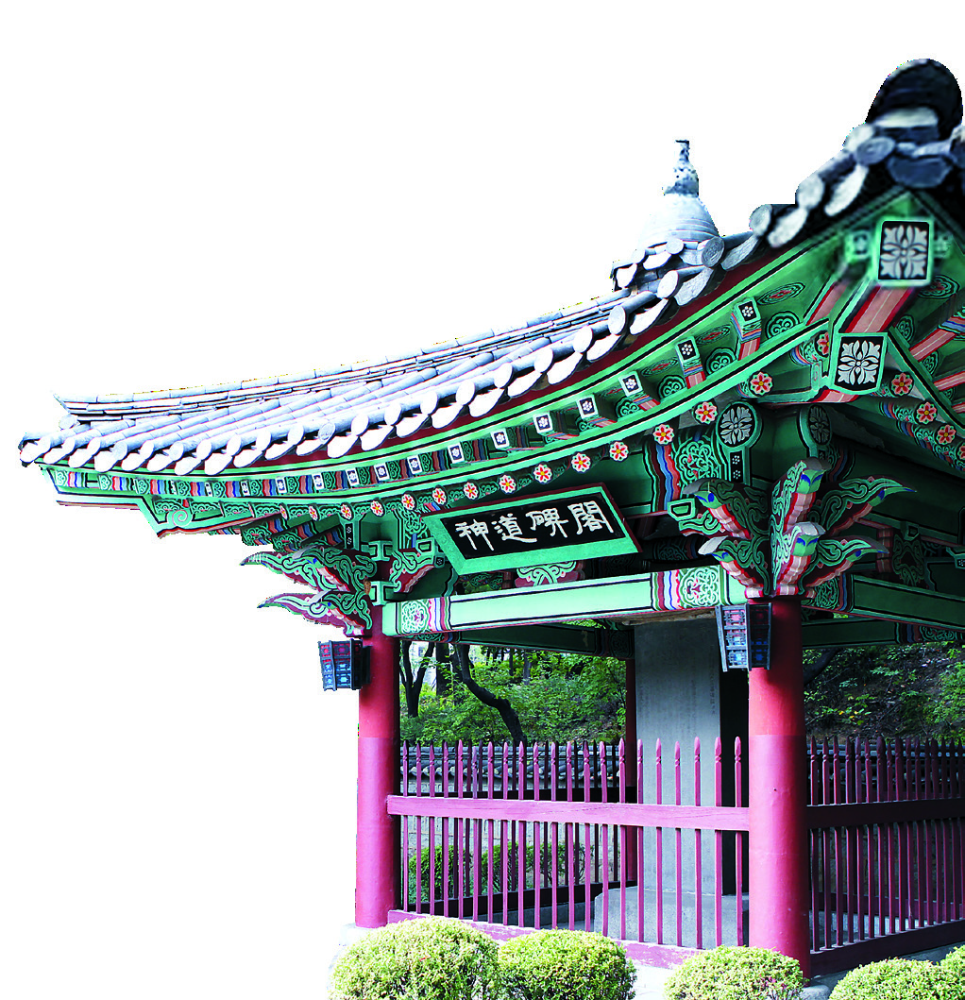</figure><div class='article'><p>넋을 기리는 공간입니다. 공원 내에 위치한 사육신역사관에서는 단종 복위 운동과 사육신의 생애를 더 자세히 알아볼 수 있으며, 조망대에서는 시원한 한강 뷰를 감상할 수 있습니다.</p><ul class='fields'><li><b>위치 동작구 노량진로</b><span>191(노량진역 인근)</span></li><li>주요시설</li></ul><p>의절사(사당), 사육신 묘역, 역사관, 한강 조망대 교통편</p><p class='bullet'>•지하철 : 1·9호선 노량진역 1번</p><p>출구에서 도보 약 10분</p><p class='bullet'>•버스 : 사육신공원 정류장 하차</p><p>(152, 500, 504, 742, 654 등 다수 노선 정차)</p><p>사육신시네마 무료 영화 관람 문화관광해설사와 함께하는 문화관광해설사와 함께하는 역사탐방 역사탐방 - 일시 : 매주 수요일 2시 - 장소 : 사육신역사관 1층 영상관 - 4월 상영작 : (4. 1.) 암살, (4. 8.) 결혼, 하겠나? (4. 15.) 소방관, (4. 22.) 1승, (4. 25.)드래곤기사단 (4. 29.)덕구 - 신청 : 현장방문객 무료 입장</p><div class='dept'>- 문의 : 사육신역사관 ☎<a href="tel:07072043258" class="tel-link">070-7204-3258</a></div><p>- (정규) 매주 화·목·토 13:30~16:30 매주 화·목·토 13:30~16:30 해설사 상주하여 서비스 제공 해설사 상주하여 서비스 제공 - (예약) 매주 화~토, 10:00~12:00 10명 이상 사전예약 신청 시 운영 - 신청 : 온라인 QR 신청 또는 전화 접수</p><div class='dept'>- 문의 : 동작문화원 ☎<a href="tel:028228500" class="tel-link">02-822-8500</a></div><span class='cal-cat' style='background:#CA3E4C'>주목</span><h4 class='lead' style="color:#00956f">사육신역사공원, 이렇게 달라집니다!</h4></div><div class='photo-grid g2'><figure class='photo-item'>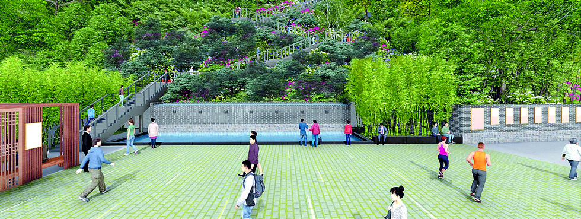</figure><figure class='photo-item'>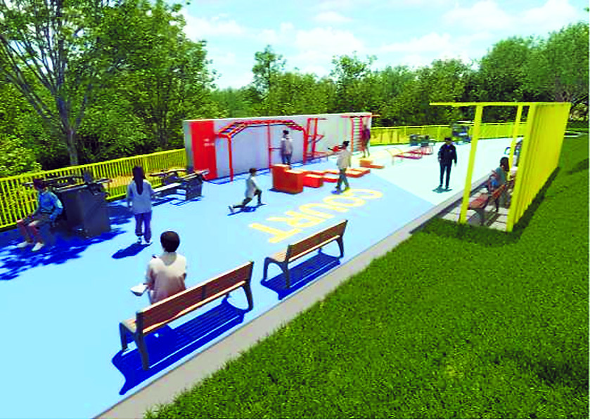</figure></div><div class='article'></div><figure class='inline-photo'>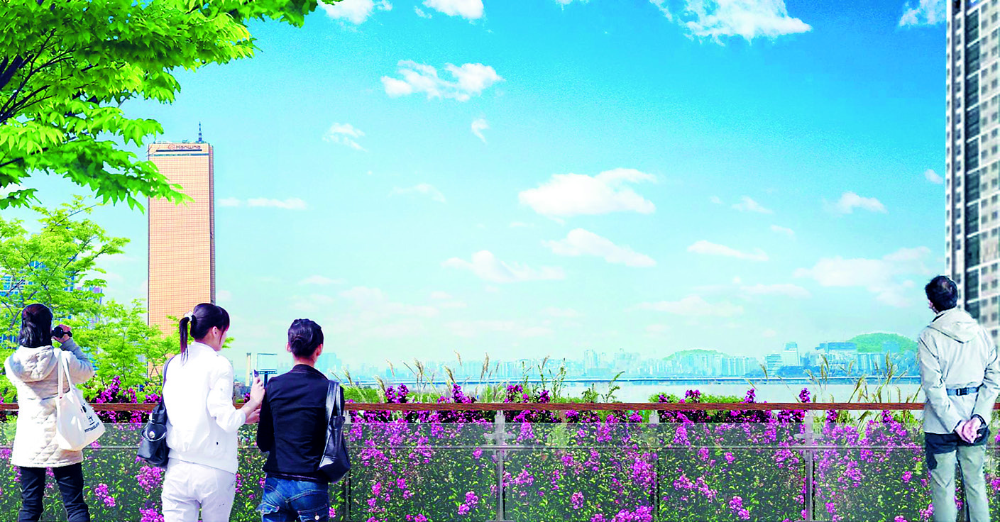</figure><div class='article'><h4 class='lead' style="color:#4d4d4f">따스한 봄기운이 완연한 4월, 마</h4><h4 class='lead' style="color:#4d4d4f">음의 여유와 설렘을 채워 구민의</h4><h4 class='lead' style="color:#4d4d4f">삶을 한 단계 업그레이드 해 줄</h4><h4 class='lead' style="color:#f1698d">동작구의 다양한 힐링 공간들을</h4><h4 class='lead' style="color:#4d4d4f">소개합니다.</h4><p class='bullet'>※ 상기 이미지는 조성예시입니다.</p></div></div></div><div class='slide' id='s7'><div class='slide-inner'><div class='page-tag' style='background:#CA3E4C'><span class='section'>기획특집</span><span class='pgnum'>7 / 13</span></div><div class='article'><h3 class='sub-title' style="color:#7ade00">휴식으로 채우는 봄, 설렘으로 가득한 동작기획특집</h3><div class='tbl-wrap'><table class='info-table'><tr><th>구분 1부 2부 3부 4부 시간 09:00~10:30 11:00~12:30 14:00~15:30 16:00~17:30</th><th></th><th></th><th></th><th></th></tr><tr><td>정원</td><td>3팀(12명)</td><td>3팀(12명)</td><td>3팀(12명)</td><td>3팀(12명)</td></tr></table></div><div class='tbl-wrap'><table class='info-table'><tr><th>구분 시간 내용 취·창업 연계, 심리·정서회복, 정규 프로그램 화~금 10:00~19:00 교양·취미 등 정기 강좌 운영</th><th></th><th></th><th></th></tr><tr><td>원데이 프로그램</td><td>토</td><td>10:00~19:00</td><td>원데이 프로그램 참여 및 특강</td></tr><tr><td>대관</td><td>화~금</td><td>10:00~19:00</td><td>프로그램 미운영 시간 대관</td></tr></table></div></div><figure class='inline-photo'>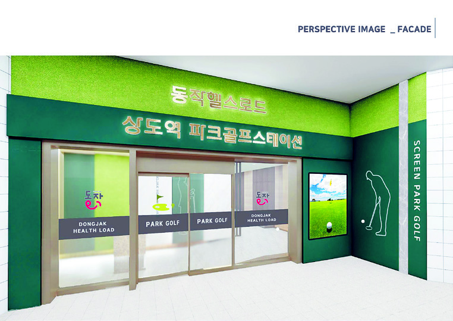</figure><div class='article'><h4 class='lead'>4. 7.</h4><p>신규 개소</p><h3 class='sub-title'>2   오늘도 나이스 샷! 상도역 스크린파크골프장</h3><div class='tbl-wrap'><table class='info-table'><tr><th>구분 1부 2부 3부 4부 시간 09:00~10:30 11:00~12:30 14:00~15:30 16:00~17:30</th><th></th><th></th><th></th><th></th></tr><tr><td>정원</td><td>3팀(12명)</td><td>3팀(12명)</td><td>3팀(12명)</td><td>3팀(12명)</td></tr></table></div><div class='tbl-wrap'><table class='info-table'><tr><th>구분 시간 내용 취·창업 연계, 심리·정서회복, 정규 프로그램 화~금 10:00~19:00 교양·취미 등 정기 강좌 운영</th><th></th><th></th><th></th></tr><tr><td>원데이 프로그램</td><td>토</td><td>10:00~19:00</td><td>원데이 프로그램 참여 및 특강</td></tr><tr><td>대관</td><td>화~금</td><td>10:00~19:00</td><td>프로그램 미운영 시간 대관</td></tr></table></div></div><figure class='inline-photo'>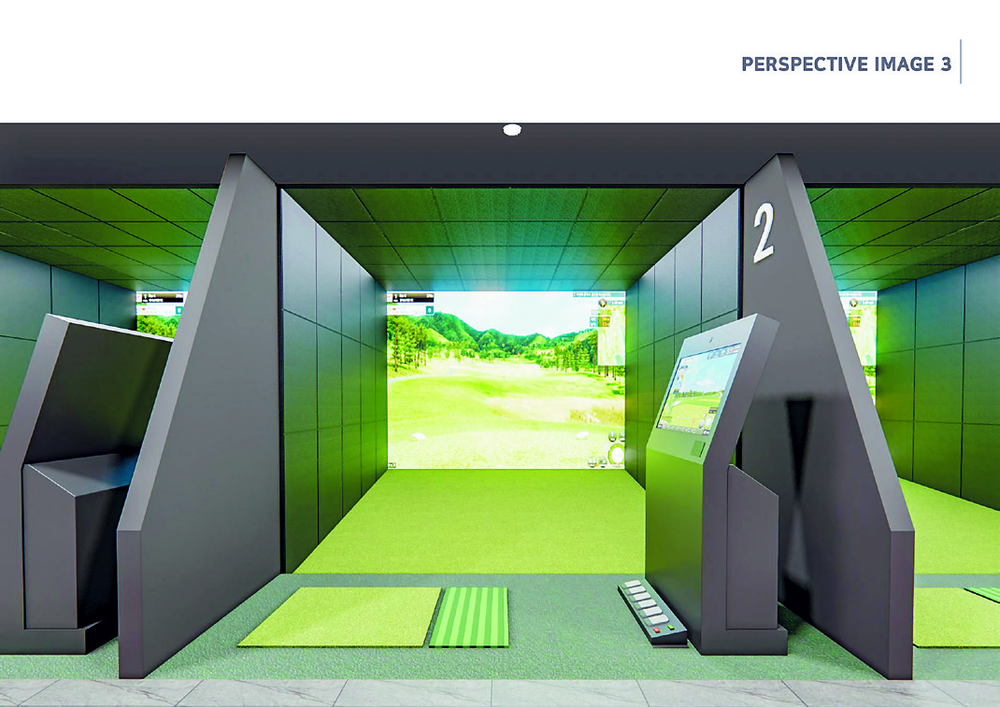</figure><div class='article'><p>날씨에 구애받지 않고 언제나 즐길 수 있는 실내 운동 공간이 새롭게 문 을 열었습니다. 첨단 스크린 시 스템을 통해 실제 필드와 유 사한 몰입감을 느낄 수 있 으며, 처음 시작하시는 분 들도 부담 없이 도전해 보 실 수 있습니다.</p><ul class='fields'><li><b>위치 상도역</b><span>지하1층 상가</span></li></ul><p style="color:#7ade00">구성  스크린파크골프장 3타석, 휴게공간 등 운영요일  화요일~일요일(월요일·법정공휴일 휴장)</p><ul class='fields'><li><b>운영시간</b><span>1일 4부 운영 (1타임 90분, 최대 12명 이용가능)</span></li></ul><p>09:00~10:30 11:00~12:30 14:00~15:30 16:00~17:30</p><p>3팀(12명) 3팀(12명) 3팀(12명) 3팀(12명) 이용방법  서울시공공서비스 예약시스템 선착순 예약(팀단위 예약) 요금  4,000원(동작구민 2,000원) * 시범운영 기간 4. 1.(수) ~ 4. 5.(일) 무료 이용</p><div class='dept'>문의  체육정책과 ☎<a href="tel:028209434" class="tel-link">02-820-9434</a></div><div class='tbl-wrap'><table class='info-table'><tr><th>구분 1부 2부 3부 4부 시간 09:00~10:30 11:00~12:30 14:00~15:30 16:00~17:30</th><th></th><th></th><th></th><th></th></tr><tr><td>정원</td><td>3팀(12명)</td><td>3팀(12명)</td><td>3팀(12명)</td><td>3팀(12명)</td></tr></table></div><h3 class='sub-title'>3나를 다시 찾는 시간,동작힐링센터</h3><p>동작힐링센터는 심리 회복과 역량강화를 돕는 복합 힐링 커뮤니티 공간입니다.</p><div class='tbl-wrap'><table class='info-table'><tr><th>구분 시간 내용 취·창업 연계, 심리·정서회복, 정규 프로그램 화~금 10:00~19:00 교양·취미 등 정기 강좌 운영</th><th></th><th></th><th></th></tr><tr><td>원데이 프로그램</td><td>토</td><td>10:00~19:00</td><td>원데이 프로그램 참여 및 특강</td></tr><tr><td>대관</td><td>화~금</td><td>10:00~19:00</td><td>프로그램 미운영 시간 대관</td></tr></table></div></div><div class='photo-grid g2'><figure class='photo-item'>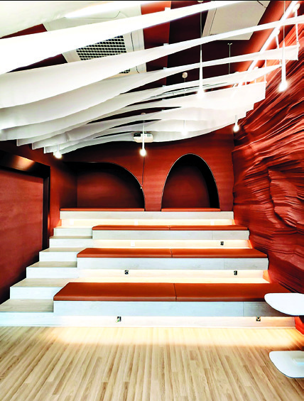</figure><figure class='photo-item'>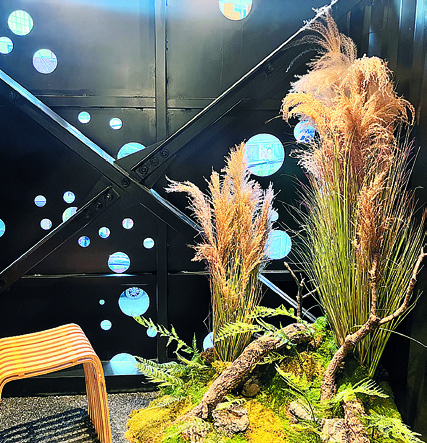</figure></div><div class='article'><p>몸과 마음을 깨우는 다채로운 프로그램으로 기분 좋은 에너지를 가득 채워보세요.</p><div class='tbl-wrap'><table class='info-table'><tr><th>구분 1부 2부 3부 4부 시간 09:00~10:30 11:00~12:30 14:00~15:30 16:00~17:30</th><th></th><th></th><th></th><th></th></tr><tr><td>정원</td><td>3팀(12명)</td><td>3팀(12명)</td><td>3팀(12명)</td><td>3팀(12명)</td></tr></table></div><div class='tbl-wrap'><table class='info-table'><tr><th>구분 시간 내용 취·창업 연계, 심리·정서회복, 정규 프로그램 화~금 10:00~19:00 교양·취미 등 정기 강좌 운영</th><th></th><th></th><th></th></tr><tr><td>원데이 프로그램</td><td>토</td><td>10:00~19:00</td><td>원데이 프로그램 참여 및 특강</td></tr><tr><td>대관</td><td>화~금</td><td>10:00~19:00</td><td>프로그램 미운영 시간 대관</td></tr></table></div></div><figure class='inline-photo'>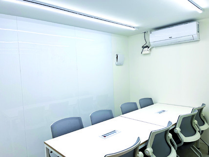</figure><div class='article'><p>야외쉼터(멍-休)</p><ul class='fields'><li><b>위치 동작구</b><span>사당로17길 4, 3층(舊사당3치안센터)</span></li><li><b>이용대상 경력보유 여성 등</b><span>지역주민</span></li><li><b>운영시간</b><span>화~토 10:00~19:00(일·월, 공휴일 휴관)</span></li></ul><p>화~금 10:00~19:00 취·창업 연계, 심리·정서회복, 교양·취미 등 정기 강좌 운영</p><p>10:00~19:00 원데이 프로그램 참여 및 특강</p><p>화~금 10:00~19:00 프로그램 미운영 시간 대관 이용방법 사전 예약(방문 접수 또는 동작구 홈페이지 통합예약시스템 이용) 이용료  정기 강좌 수강료(5만 원 내외)</p><div class='dept'>문의  동작힐링센터 ☎<a href="tel:028209213" class="tel-link">02-820-9213</a></div><div class='tbl-wrap'><table class='info-table'><tr><th>구분 1부 2부 3부 4부 시간 09:00~10:30 11:00~12:30 14:00~15:30 16:00~17:30</th><th></th><th></th><th></th><th></th></tr><tr><td>정원</td><td>3팀(12명)</td><td>3팀(12명)</td><td>3팀(12명)</td><td>3팀(12명)</td></tr></table></div><div class='tbl-wrap'><table class='info-table'><tr><th>구분 시간 내용 취·창업 연계, 심리·정서회복, 정규 프로그램 화~금 10:00~19:00 교양·취미 등 정기 강좌 운영</th><th></th><th></th><th></th></tr><tr><td>원데이 프로그램</td><td>토</td><td>10:00~19:00</td><td>원데이 프로그램 참여 및 특강</td></tr><tr><td>대관</td><td>화~금</td><td>10:00~19:00</td><td>프로그램 미운영 시간 대관</td></tr></table></div></div><div class='photo-grid g2'><figure class='photo-item'>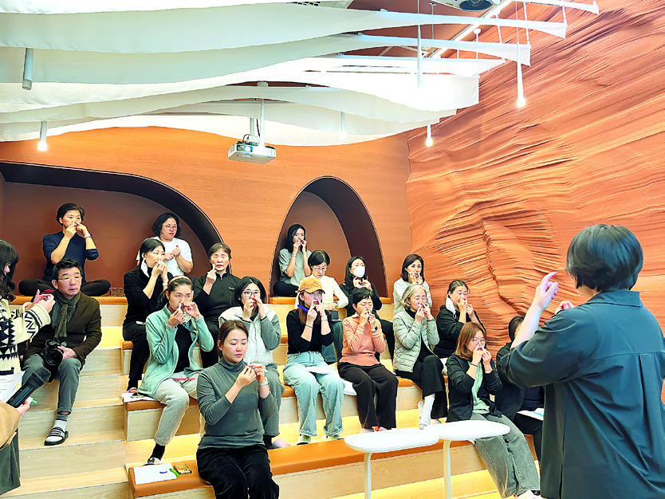</figure><figure class='photo-item'>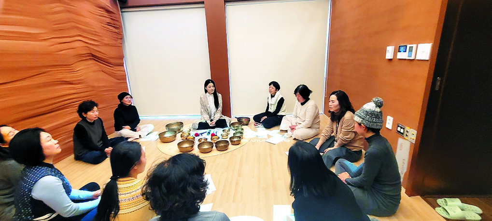</figure></div><div class='article'><div class='tbl-wrap'><table class='info-table'><tr><th>구분 1부 2부 3부 4부 시간 09:00~10:30 11:00~12:30 14:00~15:30 16:00~17:30</th><th></th><th></th><th></th><th></th></tr><tr><td>정원</td><td>3팀(12명)</td><td>3팀(12명)</td><td>3팀(12명)</td><td>3팀(12명)</td></tr></table></div><div class='tbl-wrap'><table class='info-table'><tr><th>구분 시간 내용 취·창업 연계, 심리·정서회복, 정규 프로그램 화~금 10:00~19:00 교양·취미 등 정기 강좌 운영</th><th></th><th></th><th></th></tr><tr><td>원데이 프로그램</td><td>토</td><td>10:00~19:00</td><td>원데이 프로그램 참여 및 특강</td></tr><tr><td>대관</td><td>화~금</td><td>10:00~19:00</td><td>프로그램 미운영 시간 대관</td></tr></table></div></div><p class='standalone-caption'>DONGJAK</p><div class='article'><h3 class='sub-title'>465세 이상 어르신이라면 단돈 500원! 어르신 전용 헬스장</h3><p>동작어르신들의 건강한 노후를 위한 전용 공간이 하나 더 늘었습 니다. 상도점에 이어 사당점이 새롭게 조성되어 더 많은 어르신들 이 편리하게 이용할 수 있게 되었습니다.</p><div class='tbl-wrap'><table class='info-table'><tr><th>구분 1부 2부 3부 4부 시간 09:00~10:30 11:00~12:30 14:00~15:30 16:00~17:30</th><th></th><th></th><th></th><th></th></tr><tr><td>정원</td><td>3팀(12명)</td><td>3팀(12명)</td><td>3팀(12명)</td><td>3팀(12명)</td></tr></table></div><div class='tbl-wrap'><table class='info-table'><tr><th>구분 시간 내용 취·창업 연계, 심리·정서회복, 정규 프로그램 화~금 10:00~19:00 교양·취미 등 정기 강좌 운영</th><th></th><th></th><th></th></tr><tr><td>원데이 프로그램</td><td>토</td><td>10:00~19:00</td><td>원데이 프로그램 참여 및 특강</td></tr><tr><td>대관</td><td>화~금</td><td>10:00~19:00</td><td>프로그램 미운영 시간 대관</td></tr></table></div></div><figure class='inline-photo'>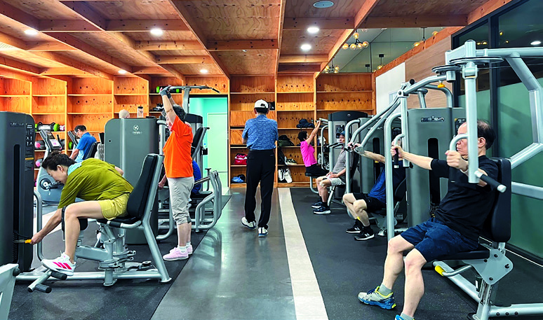</figure><div class='article'><ul class='fields'><li>위치</li></ul><h4 class='lead'>3. 23.</h4><p>신규 개소</p><p class='bullet'>•사당점 : 사당로16가길 7(舊 사당새마을금고)</p><p class='bullet'>•상도점 : 장승배기로10길 42(동작문화복지센터 1층)</p><p style="color:#00956f">운영요일  월~금요일 09:00~18:00(12~13시 점심시간)</p><ul class='fields'><li><b>이용대상 만</b><span>65세 이상 어르신</span></li></ul><p style="color:#00956f">프로그램  근력 감소 예방 어르신 대상 PT, 낙상 예방 프로그램 운영 이용료  일 500원 또는 월 1만 원</p><div class='dept'>문의  체육정책과 ☎<a href="tel:028209429" class="tel-link">02-820-9429</a></div><div class='tbl-wrap'><table class='info-table'><tr><th>구분 1부 2부 3부 4부 시간 09:00~10:30 11:00~12:30 14:00~15:30 16:00~17:30</th><th></th><th></th><th></th><th></th></tr><tr><td>정원</td><td>3팀(12명)</td><td>3팀(12명)</td><td>3팀(12명)</td><td>3팀(12명)</td></tr></table></div><h3 class='sub-title'>5일상을 예술로 바꾸는 아지트, 사당생활문화센터</h3><p>악기 연주부터 공연까지, 평소 마음속에만 담아두었던 취미 활동 을 이웃과 함께 나누며 일상에 활기를 더해보세요.(정식 개소 일정 및 프로그램 신청 안내는 추후 공지 예정입니다.)</p><ul class='fields'><li><b>위치</b><span>동작대로29길 63-26(동작샘터도서관 지하1층)</span></li></ul><p style="color:#7ade00">운영일  화~일(월요일, 공휴일 휴무) 공간구성</p><p class='bullet'>•마주침공간 : 센터 안내, 휴식, 정보제공 등 주민교류 공간</p><p class='bullet'>•다목적실1 : 악기연습, 합창 등 음악활동 공간</p><p class='bullet'>•다목적실2 : 연극, 무용, 요가 등 신체활동 공간</p><p class='bullet'>•다목적실3 : 회의, 강의, 수공예 등 학습공간</p><p>*다목적실 통합 시, 소규모 발표회 및 공연장으로 운영 가능</p><div class='tbl-wrap'><table class='info-table'><tr><th>구분 시간 내용 취·창업 연계, 심리·정서회복, 정규 프로그램 화~금 10:00~19:00 교양·취미 등 정기 강좌 운영</th><th></th><th></th><th></th></tr><tr><td>원데이 프로그램</td><td>토</td><td>10:00~19:00</td><td>원데이 프로그램 참여 및 특강</td></tr><tr><td>대관</td><td>화~금</td><td>10:00~19:00</td><td>프로그램 미운영 시간 대관</td></tr></table></div></div><figure class='inline-photo'>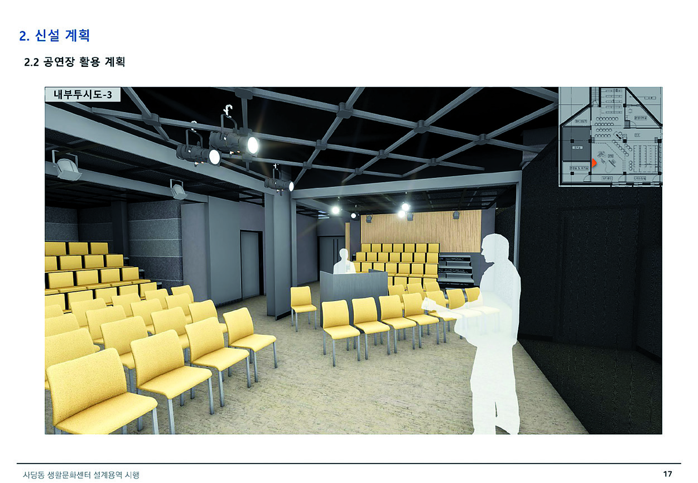</figure><div class='article'><div class='dept'>문의  문화정책과 ☎<a href="tel:028209412" class="tel-link">02-820-9412</a></div><div class='tbl-wrap'><table class='info-table'><tr><th>구분 1부 2부 3부 4부 시간 09:00~10:30 11:00~12:30 14:00~15:30 16:00~17:30</th><th></th><th></th><th></th><th></th></tr><tr><td>정원</td><td>3팀(12명)</td><td>3팀(12명)</td><td>3팀(12명)</td><td>3팀(12명)</td></tr></table></div><div class='tbl-wrap'><table class='info-table'><tr><th>구분 시간 내용 취·창업 연계, 심리·정서회복, 정규 프로그램 화~금 10:00~19:00 교양·취미 등 정기 강좌 운영</th><th></th><th></th><th></th></tr><tr><td>원데이 프로그램</td><td>토</td><td>10:00~19:00</td><td>원데이 프로그램 참여 및 특강</td></tr><tr><td>대관</td><td>화~금</td><td>10:00~19:00</td><td>프로그램 미운영 시간 대관</td></tr></table></div></div></div></div><div class='slide' id='s8'><div class='slide-inner'><div class='page-tag' style='background:#CA3E4C'><span class='section'>기획특집</span><span class='pgnum'>8 / 13</span></div><div class='article'><h3 class='sub-title' style="color:#ee2e7b">기획특집휴식으로 채우는 봄, 설렘으로 가득한 동작</h3></div><p class='standalone-caption'>DONGJAK</p><div class='article'><h3 class='sub-title'>1   공원에서 책과 함께하는 야외도서관 ‘책 읽는 동작 : 머무르는 곳’</h3></div><div class='photo-grid g2'><figure class='photo-item'>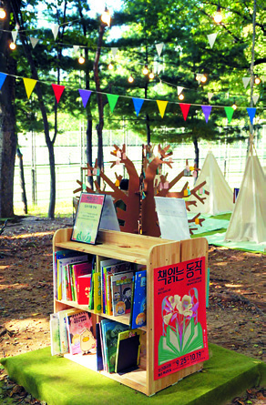</figure><figure class='photo-item'>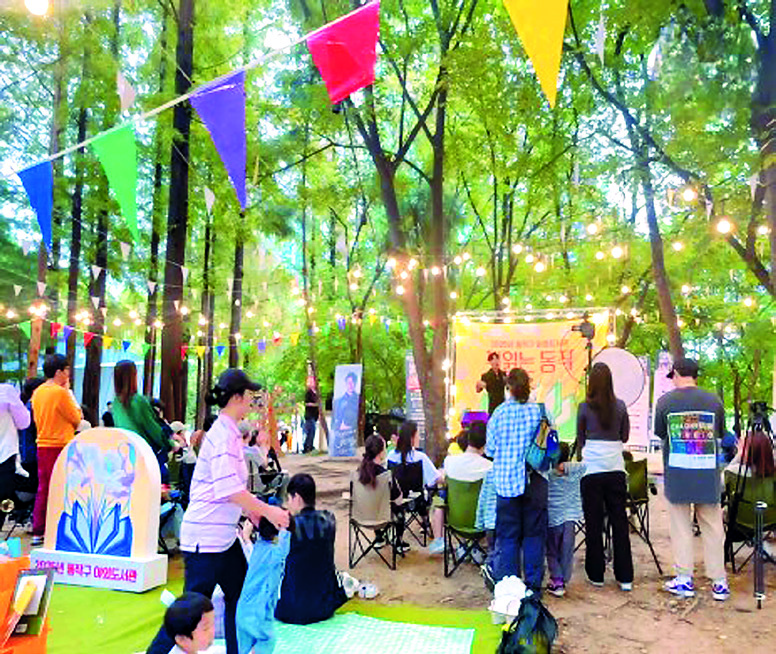</figure></div><div class='article'><p>답답한 실내를 벗어나 푸른 잔디 위에서 책장을 넘기는 특별한 경험! 다채로운 문화 공연과 체 험 부스도 준비되어 있으니, 책 과 함께 머무르는 특별한 봄날의 여유를 누려보세요!</p><ul class='fields'><li><b>운영기간</b><span>2026. 4. 11.(토)~4. 18.(토)</span></li><li><b>운영시간</b><span>(평일) 16:00~21:00 / (주말) 11:00~17:00</span></li></ul><p class='bullet'>※ 기상상황 등 고려하여 탄력적 운영</p><ul class='fields'><li><b>장소</b><span>대방공원(여의대방로36길 71) 및 노들나루공원(노량진로 247)</span></li><li><b>대상 동작구민</b><span>누구나</span></li><li><b>내용 야외도서관</b><span>조성, 문화공연 및 체험부스 운영 등</span></li><li><b>문의</b><span>문화정책과☎<a href="tel:028209418" class="tel-link">02-820-9418</a></span></li></ul><h3 class='sub-title'>2   글과 그림으로 느끼는 봄의 감성, 동작구민 백일장 및 청소년 사생대회</h3><p>따뜻한 봄날, 마음속에 떠오른 생각을 글로 적어보고 눈에 보이는 풍경 을 그림으로 담아보는 시간. 푸른 한강과 봄빛이 어우러진 노들나루공 원에서 글과 그림으로 남기는 소중한 추억을 만들어 보세요.</p><ul class='fields'><li><b>일시</b><span>2026. 4. 18.(토) 13:00~17:00</span></li><li><b>장소</b><span>노들나루공원(노량진로 247)</span></li></ul></div><figure class='inline-photo'>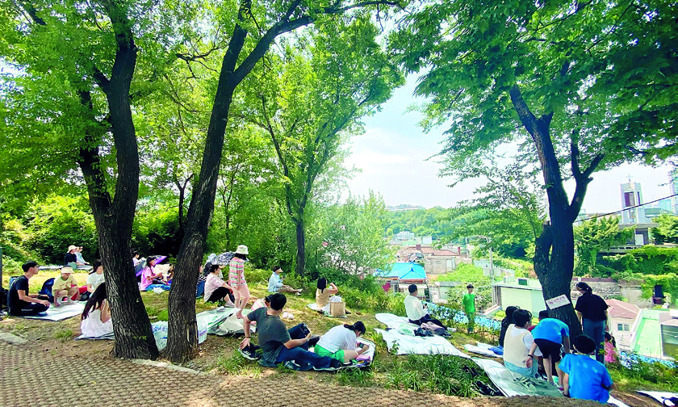</figure><div class='article'><ul class='fields'><li><b>대상 동작구민</b><span>누구나</span></li><li>내용</li></ul><p>동작구민 백일장 및 청소년 사생대회 ※ 주제 당일 발표</p><p class='bullet'>•백일장 : 시, 수필</p><p>(초등부, 중·고등부, 성인부)</p><p class='bullet'>•사생대회 : 채색화(초등부 저학년,</p><p>초등부 고학년, 중·고등부) 참가신청  추후 동작구청 홈페이지 및 문화원 공고문 참고</p><div class='dept'>문의  동작문화원 ☎<a href="tel:028228500" class="tel-link">02-822-8500</a></div><h3 class='sub-title' style="color:#4d4d4f">설렘 가득한 봄맞이 야외 행사</h3><h4 class='lead' style="color:#4d4d4f">기분 좋은 봄바람이 우리를 밖으로 이끄는 계절!</h4><h4 class='lead' style="color:#4d4d4f">가족, 친구와 함께 봄의 설렘을 나누며 특별한 시간을</h4><h4 class='lead' style="color:#4d4d4f">보낼 수 있는 동작구의 다양한 야외 행사들을 소개합니다.</h4><h3 class='sub-title'>3   여기저기 꽃빛으로 물드는 동작구, 봄맞이 동 축제</h3><p>가까운 이웃과 함께 웃고 즐길 수 있는 우리 동네만의 작은 축제들도 빼놓을 수 없습니다. 꽃향기 가득한 거리에서 가족 친구와 기분 좋은 설렘을 공유해 보세요!</p></div><figure class='inline-photo'>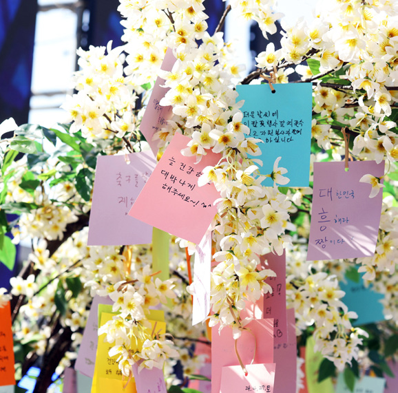</figure><div class='article'><p style="color:#f1698d">상도1동  이팝나무  꽃  축제</p><ul class='fields'><li><b>일시</b><span>2026. 4. 26.(일) 15:00~19:00</span></li><li><b>장소</b><span>숭실대 캠퍼스</span></li></ul><p>(정문일대, 슈파크 등)</p><ul class='fields'><li><b>내용</b><span>문화공연 및 부대행사</span></li></ul><p>(어린이놀이터, 체험·먹거리 부스)</p><div class='dept'>문의  상도1동 주민센터 ☎<a href="tel:028202467" class="tel-link">02-820-2467</a></div><p style="color:#f1698d">사당2동  벚꽃축제</p></div><figure class='inline-photo'>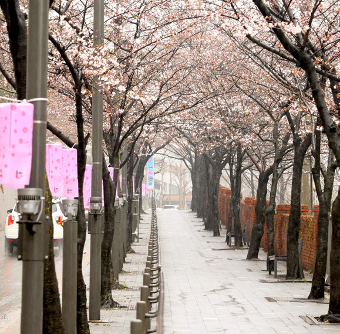</figure><div class='article'><ul class='fields'><li><b>일시</b><span>2026. 4. 4.(토) 14:00~18:00</span></li><li><b>장소</b><span>사당2동주민센터 앞, 사당로23</span></li></ul><p>나길 일대</p><ul class='fields'><li><b>내용</b><span>거리·무대공연, 체험·홍보부스,</span></li></ul><p>벚꽃길 별빛조명 설치 등</p><ul class='fields'><li><b>문의</b><span>사당2동 주민센터</span></li></ul><div class='dept'>☎<a href="tel:028202592" class="tel-link">02-820-2592</a></div><p style="color:#f1698d">신대방  어울림  벚꽃축제</p></div><figure class='inline-photo'>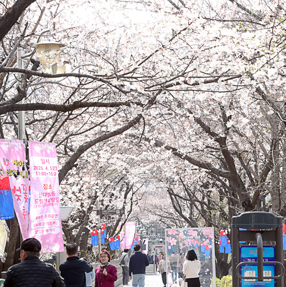</figure><div class='article'><ul class='fields'><li><b>일시</b><span>2026. 4. 4.(토) 11:00~16:00</span></li><li><b>장소</b><span>신대방 도림천 뚝방길</span></li></ul><p>(신대방역 3번 출구 일대)</p><ul class='fields'><li><b>내용</b><span>체험부스, 포토존, 벚꽃가요제,</span></li></ul><p>먹거리부스, 경품 추첨 등</p><p class='bullet'>※ 초대가수 : 트로트가수 류지광,</p><p>리미혜, 록가수 오뮤오</p><ul class='fields'><li><b>문의</b><span>신대방1동 주민센터</span></li></ul><div class='dept'>☎<a href="tel:028202810" class="tel-link">02-820-2810</a></div></div></div></div><div class='slide' id='s9'><div class='slide-inner'><div class='page-tag' style='background:#1565C0'><span class='section'>동작리포트</span><span class='pgnum'>9 / 13</span></div><div class='article'><h2 class='main-title' style="color:#4a7975">동작구의 새로운 교통 혁명! 동작CALL버스동작리포트09</h2></div><p class='standalone-caption'>DONGJAK</p><div class='article'><h3 class='sub-title' style="color:#4d4d4f">동작구의 새로운 교통 혁명!</h3><h2 class='main-title' style="color:#4a7975">호출하면 찾아오는 ‘동작CALL버스’</h2><h4 class='lead' style="color:#4d4d4f">‘동작CALL버스’는 스마트폰 앱으로 호출하면 이용 수요에 따라 이용자의 승·하차 위치를 반영해 정해진 노선이 아닌 최적 경로를 생성하여</h4><h4 class='lead' style="color:#4d4d4f">운행하는 수요응답형 버스(DRT) 입니다. 마을버스와 같은 요금으로 이용할 수 있으며, 4월 30일까지 시범운행 기간에는 무료로 운영됩니다.</h4><h4 class='lead' style="color:#4d4d4f">가까운 곳에서, 필요한 시간에, 앱으로 편리하게 호출하는 ‘동작CALL버스’에 많은 관심과 이용 바랍니다.</h4></div><figure class='inline-photo'>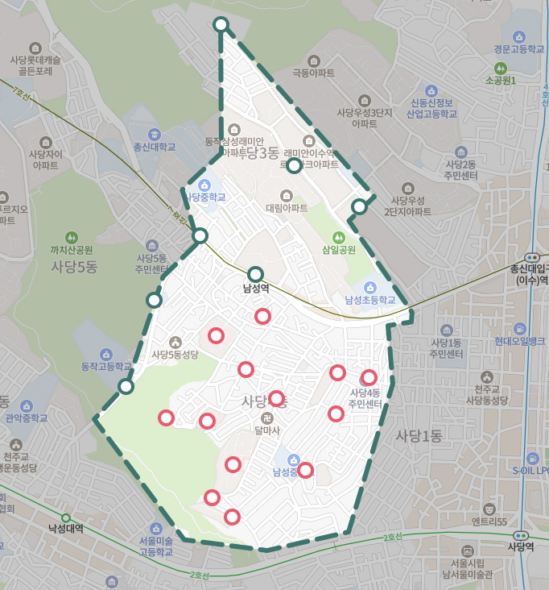</figure><div class='article'><h4 class='lead'>Q&A  자주하는  질문</h4><h4 class='lead'>이용방법</h4><p>Q   동작CALL버스는 누가 이용할 수 있나요? 1  ‘동작CALL버스’ 앱 설치(QR코드 또는 스토어) A   학생, 일반인 등 누구나 이용 가능합니다. 카메라로 QR코드를 스캔하거나 스토어에서 ‘동작CALL버스’를 검색해 주세요. Q   동작CALL버스는 어떻게 이용하나요? A앱을 통해 호출하신 승객만 탑승 가능해요. 2   휴대전화 인증 후 회원가입 Q   버스 요금은 어떻게 지불하나요? 3   지도에서 탑승할 정류장 선택 A   현금 탑승은 불가해요. 요금은 교통카드로 4   목적지 선택후 CALL버스 호출 결제합니다.</p></div><div class='photo-grid g2'><figure class='photo-item'>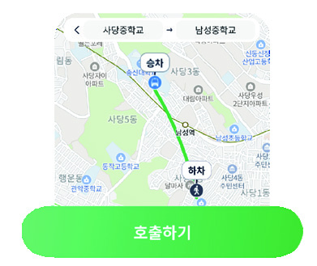</figure><figure class='photo-item'>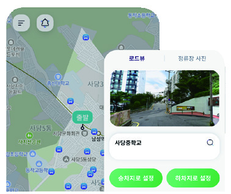</figure></div><div class='article'><p>Q   시내버스, 지하철과 환승 가능한가요? A   승·하차 시, 카드 단말기를 태그하시면 환승이 적용됩니다. Q   주말에도 운행하나요? 5   정류장에서 차량 도착 대기 A   365일 운행합니다. 단, 주말 및 공휴일에는 6   차량 탑승 후 교통카드 태그 50%(1대) 운행합니다.</p><h4 class='lead'>동작CALL버스안내</h4><p>사당4동주민센터로 방문하시면  앱 설치부터 이용방법까지 동행 탑승하여 알려드립니다!</p><ul class='fields'><li><b>운행구간 사당</b><span>3·4동 주요 거점</span></li><li><b>운행시간</b><span>06:00~22:00(21:30 콜마감)</span></li><li><b>운행대수</b><span>2대(버스 1대당 승객 최대 10명 탑승)</span></li><li><b>이용요금 성인</b><span>1,200원, 청소년 600원, 어린이 400원</span></li></ul><p class='bullet'>※ 시범운행기간(2026. 3. 17.~4. 30.) 무료 운행</p><ul class='fields'><li><b>정류소</b><span>20개(기존 버스 정류소 7개, 가상정류소 13개)</span></li><li><b>문의</b><span>동작CALL버스 운영센터 ☎1661-2095</span></li></ul></div><figure class='inline-photo'>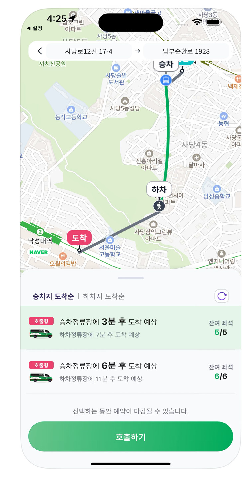</figure></div></div><div class='slide' id='s10'><div class='slide-inner'><div class='page-tag' style='background:#2E7D32'><span class='section'>동별 핫뉴스</span><span class='pgnum'>10 / 13</span></div><div class='article'><h3 class='sub-title' style="color:#fdb514">동별 핫뉴스        한눈에 보는 동별 이슈</h3></div><p class='standalone-caption'>DONGJAK</p><div class='article'><h4 class='lead' style="color:#dd77af">노량진1동</h4><h4 class='lead' style="color:#dd77af">노량진2동</h4><h4 class='lead' style="color:#f3777d">상도1동</h4><span class='cal-cat' style='background:#CA3E4C'>노량진3구역</span><h4 class='lead' style="color:#4d4d4f">관리처분계획 인가 완료</h4><h4 class='lead' style="color:#4d4d4f">영어랑 놀자!</h4><h4 class='lead' style="color:#4d4d4f">동작영어마루도서관</h4><h4 class='lead' style="color:#4d4d4f">우리동네 착한가게</h4><h4 class='lead' style="color:#4d4d4f">효도가게 1호 ‘부라문’</h4></div><div class='photo-grid g3'><figure class='photo-item'>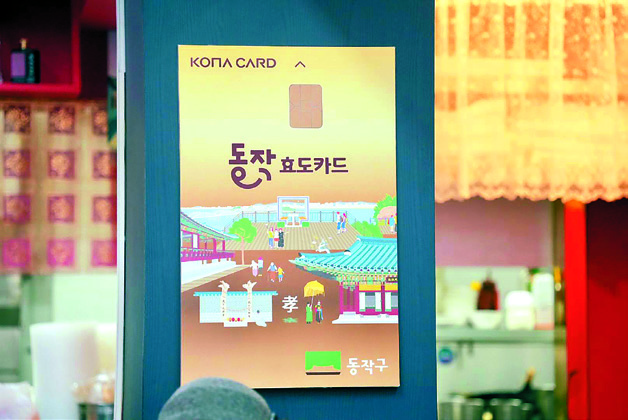</figure><figure class='photo-item'>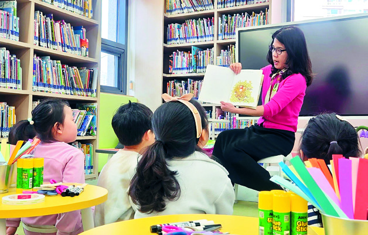</figure><figure class='photo-item'></figure></div><div class='article'><p>노량진3구역이 관리처분계획 인가를 아이와 함께 특별한 주말 나들이를 찾 상도1동 효도식당 ‘부라문(상도로60 받으며  사업이 다음단계로 본격적으 고 있다면 동작영어마루도서관(장승 길 2)’에서는 어르신을 위한 효도메 로 나아가게 되었습니다. 노량진3구 배기로16길 98)을 방문해 보세요. 아 뉴를 판매하고 있습니다. 65세 이상 역은 지하철 1·9호선이 지나는 노량 이들이 재미있게 참여할 수 있는 원어 동작구민이라면 하루 10명 한정으로 진역과 가장 가까운 노량진뉴타운의 민 스토리타임, 영어 독후 활동 등 다 짜장면을 기존 가격 대비 50% 할인 핵심 입지로 약 1,000세대 이상 규모 채로운 프로그램이 운영되고 있습니 된 금액에, 그 외 고객에게는 25% 할 의 새로운 주거단지로 탈바꿈하게 됩 다. 도서관 주변 산책길과 놀이터까지 인 혜택을 제공합니다. 효도가게 1호 니다. 2009년 정비구역 지정 이후 17 함께 즐기면 하루가 더욱 알차고 특별 점인 부라문을 시작으로 현재는 음식 년 만에 관리처분계획 인가를 받은 만 해집니다. 이번 주말에는 동작영어마 점·미용실·안경점 등 430개 업소가 큼 지역의 주거환경과 미래 가치가 한 루도서관에서 놀이처럼 재미있게 영 효도가게로 참여해 어르신들의 생활 층 더 높아질 것으로 기대됩니다. 어와 친해지는 시간을 만들어 보세요. 비 부담을 덜어드리면서, 우리 지역사 회에 든든한 힘이 되고 있습니다.</p><h4 class='lead' style="color:#1ab78e">흑석동</h4><h4 class='lead' style="color:#f3777d">상도2동</h4><h4 class='lead' style="color:#f3777d">상도3동</h4><h4 class='lead' style="color:#f3777d">상도4동</h4><h4 class='lead' style="color:#4d4d4f">동작21번 노선 변경</h4><span class='cal-cat' style='background:#CA3E4C'>흑석고 정차</span><h4 class='lead' style="color:#4d4d4f">힐스테이트 아파트 앞</h4><h4 class='lead' style="color:#4d4d4f">횡단보도 신설</h4><h4 class='lead' style="color:#4d4d4f">상도동 통합개발</h4><span class='cal-cat' style='background:#CA3E4C'>설명회 개최</span><span class='cal-cat' style='background:#CA3E4C'>해피동작</span><h4 class='lead' style="color:#4d4d4f">청년 소셜 다이닝</h4></div><figure class='inline-photo'>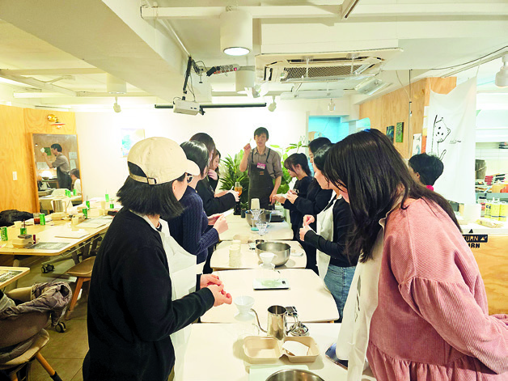</figure><div class='photo-grid g3'><figure class='photo-item'></figure><figure class='photo-item'>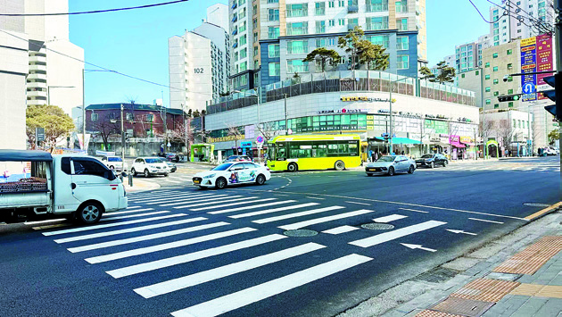</figure><figure class='photo-item'>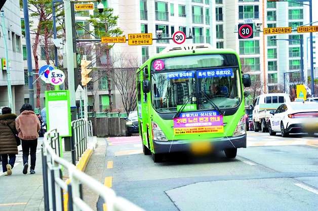</figure></div><div class='article'><p>장승배기역 힐스테이트 아파트 앞쪽에 지난달, 상도동 통합개발 기본구상 용 상도4동의 특별한 소통 프로그램, 청 29년이라는 긴 기다림 끝에 지난 3월 횡단보도가 추가 설치 되었습니다. 그 역 결과를 공유하는 주민설명회가 개최 년 소셜 다이닝 ‘동작요리사’ 쿠킹 클 흑석고등학교가 마침내 개교하며 210 동안 짧은 거리임에도 도로를 한 번에 되었습니다. 동작구는 대상지별 정비사 래스가 개최되었습니다. 청년 16명이 명 신입생들의 힘찬 출발을 알렸습니 건너지 못하고 ‘ㄷ’자 형태로 우회해 업의 독립성은 유지하면서 개별의 사업 전문 강사의 지도 아래 정성껏 파스타 다. 흑석고등학교 개교에 맞춰 동작21 야 하는 불편함이 있었습니다. 이번 횡 지를 유기적으로 연결하여 지역 전체가 를 직접 만들며 요리 실력을 뽐냈습니 번 마을버스 운행도 더 편리하게 바뀌 단보도 설치로 동선이 직선화되면서 하나의 생활권 기능을 하도록 하는 도 다. 완성된 요리를 함께 나누는 시간 었습니다. 기존 달마사에서 하행으로 주민들이 더욱 안전하고 편리하게 통 시계획 마스터플랜을 추진하고 있습니 동안 청년들은 서로의 고민과 꿈을 이 만 운행하던 마을버스 동작21번이 이 행할 수 있게 되었습니다. 앞으로도 동 다. 앞으로 사당동을 포함한 통합개발 야기하며, 따뜻한 공동체의 온기를 나 제는 흑석역-흑석고등학교-달마사를 작구는 주민들의 일상 속 불편을 세심 방향을 폭넓게 논의하는 정책포럼도 준 누는 소중한 시간을 가졌습니다. 상도 잇는 양방향 통행이 가능해졌습니다. 하게 살피며 안전하고 편리한 보행 환 비 중입니다. 체계적이고 계획적인 개 4동은 앞으로도 청년들이 함께 소통하 덕분에 학생들은 더 편리하게 통학할 경을 만들어 나가겠습니다. 발을 통해 K-도시로 도약할 동작구의 며 지역의 주역으로 성장할 수 있도록 수 있게 됐고, 인근 주민들도 한결 수 미래에 많은 기대 부탁드립니다. 다채로운 참여형 프로그램을 이어갈 월하게 마을버스를 이용할 수 있게 되 예정입니다. 었습니다.</p></div></div></div><div class='slide' id='s11'><div class='slide-inner'><div class='page-tag' style='background:#2E7D32'><span class='section'>동별 핫뉴스</span><span class='pgnum'>11 / 13</span></div><div class='article'><h2 class='main-title' style="color:#f26322">한눈에 보는 동별 이슈동별 핫뉴스11</h2></div><p class='standalone-caption'>DONGJAK</p><div class='article'><h4 class='lead' style="color:#ef4340">사당4동</h4><h4 class='lead' style="color:#ef4340">사당3동</h4><h4 class='lead' style="color:#ef4340">사당2동</h4><h4 class='lead' style="color:#ef4340">사당1동</h4><h4 class='lead' style="color:#4d4d4f">남성역B역세권활성화사업</h4><h4 class='lead' style="color:#4d4d4f">정비구역 지정 및 결정고시</h4><span class='cal-cat' style='background:#CA3E4C'>사당보건지소</span><span class='cal-cat' style='background:#CA3E4C'>전환</span><h4 class='lead' style="color:#4d4d4f">이수사회복지관</h4><span class='cal-cat' style='background:#CA3E4C'>분관 조성</span><h4 class='lead' style="color:#4d4d4f">사당1동449번지 일대</h4><h4 class='lead' style="color:#4d4d4f">SH모아타운 선정</h4></div><figure class='inline-photo'>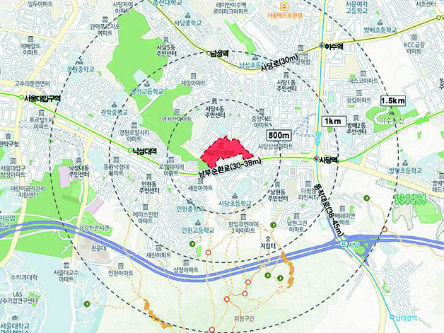</figure><div class='photo-grid g3'><figure class='photo-item'>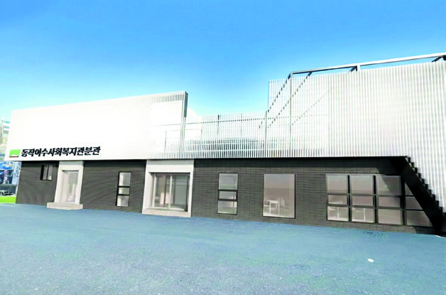</figure><figure class='photo-item'>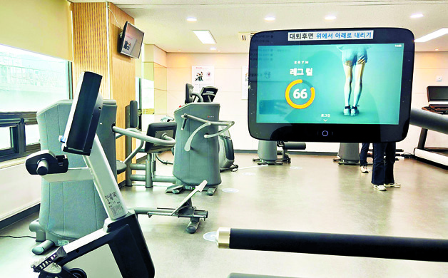</figure><figure class='photo-item'></figure></div><div class='article'><p>사당동 옛 범진여객 부지 일대 사당 사당보건분소가 ‘사당보건지소’로 동작이수사회복지관이 이용자 편의 사당1동 449번지 일대가 서울시 공공 동 318-99번지 일대 남성역B역세권 전환되어 새로운 모습으로 운영되고 와 접근성 향상을 위해 분관을 새롭게 관리 모아타운 대상지로 최종 선정되 활성화사업이 정비구역으로 지정 및 있습니다. 지소에서는 기존 분소보다 조성합니다. 분관은 동작대로25길 10 며 주거환경 개선 사업이 본격 추진되 결정 고시되었습니다. 지하 4층~지 전문적이고 체계적인 건강관리 서비 에 지상 2층 규모로 마련되며, 공사가 었습니다. 이를 통해 약 6만㎡ 규모의 상 37층 규모의 주거단지가 조성될 스를 제공합니다. 사당보건지소 내에 끝나는 4월부터 시범 운영에 들어갈 노후 저층 주거지가 단계적으로 새롭 예정입니다. 역세권 활성화사업을 통 ‘동작재활헬스센터’와 ‘동작체력인 예정입니다. 새로운 공간에는 커뮤니 게 정비될 예정입니다. 특히 서울주택 해 주거시설 외에도 행정·보건·복지 증센터’가 새롭게 조성되어 주민 여 티실 등이 조성되어 지역주민을 위한 도시공사가 관리계획 수립부터 조합 기능을 갖춰 사당권의 새로운 지역 러분께 다양한 건강 프로그램과 맞춤 다양한 복지서비스를 제공할 예정입 설립, 공동사업 시행까지 전 과정에 거점으로 거듭날 수 있도록 동작구에 형 서비스를 제공하고 있습니다. 따뜻 니다. 또한 지역 내 도움이 필요한 이 직접 참여하는 만큼 사업의 안정성이 서 진행 상황을 살피며 꼼꼼히 챙겨 한 봄을 맞아 사당보건지소에서 나에 웃을 발굴·지원하는 역할도 함께하며 강화되고, 속도감 있게 추진될 전망입 가겠습니다. 게 꼭 맞는 운동법을 찾아보세요. 촘촘한 복지 네트워크를 구성해갈 계 니다. 획입니다.</p><h4 class='lead' style="color:#ef4340">사당5동</h4><h4 class='lead' style="color:#8bc751">대방동</h4><h4 class='lead' style="color:#0088cc">신대방1동</h4><h4 class='lead' style="color:#0088cc">신대방2동</h4><h4 class='lead' style="color:#4d4d4f">쓰레기 종량제봉투</h4><span class='cal-cat' style='background:#CA3E4C'>자판기 설치</span><h4 class='lead' style="color:#4d4d4f">용마산 노량진근린공원</h4><h4 class='lead' style="color:#4d4d4f">노후데크 정비 3단계 착공</h4><span class='cal-cat' style='background:#CA3E4C'>도림천</span><h4 class='lead' style="color:#4d4d4f">수변무대 조성</h4><h4 class='lead' style="color:#4d4d4f">동작키즈카페 신대방2동점</h4><span class='cal-cat' style='background:#CA3E4C'>새 단장</span></div><figure class='inline-photo'>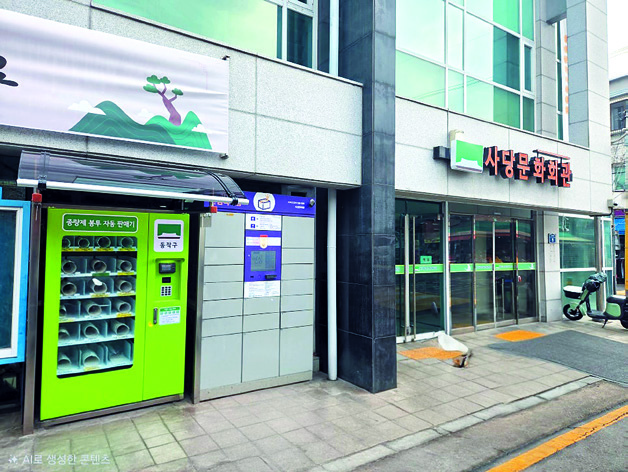</figure><div class='photo-grid g3'><figure class='photo-item'>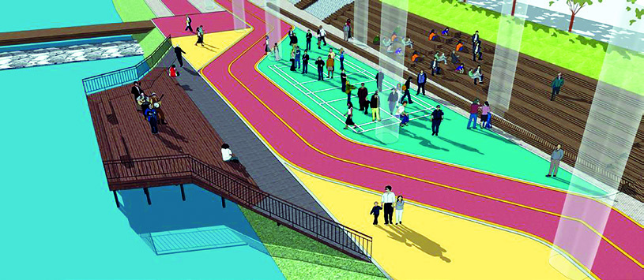</figure><figure class='photo-item'>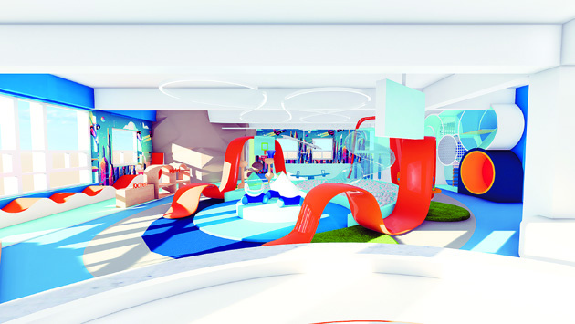</figure><figure class='photo-item'>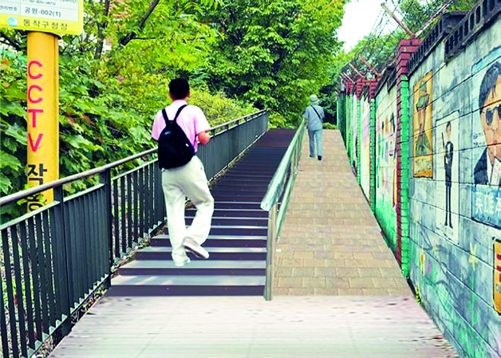</figure></div><div class='article'><p>용마산 노량진근린공원(대방동 23- 신대방동 도림천에 주민들이 문화와 동작키즈카페 신대방2동점(주민센터 사당문화회관 1층에 24시간 이용 가 213 일대)이 보다 쾌적하고 안전한 산 예술을 가까이에서 즐길 수 있는 수변 5층)이 327㎡ 규모의 넓은 공간으로 능한 종량제봉투 자동판매기가 설치 책길로 조성하기 위해 재정비사업을 무대가 새롭게 조성됩니다. 하천을 배 확장 리모델링 하였습니다. 특히 아이 되었습니다. 카드 결제로 소용량 봉투 진행 중입니다. 이번 공사에서는 노후 경으로 다양한 문화·예술 활동을 즐 들의 호기심을 자극하는 ‘미래도시’ 부터 특수마대까지 총 18종을 구매할 데크로드 및 목계단 정비를 마무리짓 길 수 있는 공간으로, 공사가 끝나는 콘셉트로 공간을 꾸미고, 공공 실내놀 수 있어, 늦은 밤이나 급하게 필요할 고, 산책로도 2.4m로 폭을 확장하여 4월에는 제11회 신대방 어울림 벚꽃 이터에서는 쉽게 만나기 어려운 집라 때에도 편리하게 이용할 수 있습니다. 주민들이 더욱 편리하게 이용할 수 있 축제와 함께 주민 버스킹 무대가 펼쳐 인까지 설치해 색다른 놀이 경험을 제 사당문화회관 외에도 동작구청과 양 도록 정비할 예정입니다. 오는 5월이 질 예정입니다. 이번 주말, 벚꽃 흩날 공합니다. 저렴한 이용요금으로 사설 녕청년주택에도 설치되어 운영 중입 면 한층 더 산뜻한 모습으로 달라진 리는 도림천을 걸으며 수변무대에서 키즈카페 못지않은 즐거움을 누릴 수 니다. 동작구는 앞으로도 주민들이 더 용마산 노량진근린공원을 만나볼 수 가족과 함께 낭만 가득한 봄날의 추억 있는 동작키즈카페에서 아이들과 특 욱 편리하게 종량제봉투를 구매할 수 있습니다. 을 만들어보세요. 별한 시간을 보내보세요! 있도록 자동판매기 설치를 점차 확대 해 나갈 계획입니다.</p></div></div></div><div class='slide' id='s12'><div class='slide-inner'><div class='page-tag' style='background:#455A64'><span class='section'>구정소식</span><span class='pgnum'>12 / 13</span></div><div class='article'><h3 class='sub-title' style="color:#8bb4a9">구정소식</h3><p style="color:#404041">동작 현황판</p><div class='tbl-wrap'><table class='info-table'><tr><th>날짜</th><th>시간</th><th>대상</th><th>프로그램 주제</th></tr><tr><td></td><td>14:00~15:00</td><td>초1~2학년 15명</td><td></td></tr><tr><td></td><td>15:30~16:30</td><td>초3~4학년 15명</td><td></td></tr><tr><td></td><td>17:00~18:00</td><td>초5~6학년 15명</td><td></td></tr></table></div><div class='tbl-wrap'><table class='info-table'><tr><th>날짜</th><th>시간</th><th>대상</th><th>프로그램 주제</th></tr><tr><td></td><td>14:00~15:30</td><td>7세 및 보호자 6그룹(12명)</td><td></td></tr><tr><td></td><td>16:30~18:30</td><td>초등 3~4학년 및 보호자 6그룹(12명)</td><td></td></tr></table></div></div><p class='standalone-caption'>DONGJAK</p><div class='article'><h2 class='main-title'>게시판</h2><h2 class='main-title'>게시판</h2><h4 class='lead'>찾아가는 통합 돌봄, 구민과 함께하는</h4><h4 class='lead'>‘동작구 현장보건소’</h4><ul class='fields'><li><b>일시</b><span>2026. 4. 1.(수) 10:00~16:00</span></li><li><b>장소 사당만남의</b><span>공원</span></li><li><b>대상 동작구민 및 방문객</b><span>누구나</span></li><li><b>내용 건강생활실천 체험</b><span>프로그램 및 홍보 부스 운영</span></li></ul><p class='bullet'>•체험 : 바른자세검사, 결핵 이동검진, 심폐소생술 교육, 치매조기검진,</p><p>간이 근력검사,  대사증후군, 임산부 체험, 금연 절주 등</p><p class='bullet'>•홍보 : 동작구민건강주치의사업, 건강회복지원사업, 생명존중 등</p><div class='dept'>문의  보건행정과 ☎<a href="tel:028209461" class="tel-link">02-820-9461</a></div><div class='tbl-wrap'><table class='info-table'><tr><th>날짜</th><th>시간</th><th>대상</th><th>프로그램 주제</th></tr><tr><td></td><td>14:00~15:00</td><td>초1~2학년 15명</td><td></td></tr><tr><td></td><td>15:30~16:30</td><td>초3~4학년 15명</td><td></td></tr><tr><td></td><td>17:00~18:00</td><td>초5~6학년 15명</td><td></td></tr></table></div><h4 class='lead'>동작구와 함께하는 ‘봄꽃따라 동작걷기’</h4><h4 class='lead'>워크온 챌린지</h4><p>기존  4. 6.(월)~4. 20.(월)   대상  동작구민 및 동작구 소재 직장인</p><ul class='fields'><li><b>내용</b><span>지정 공원(대방공원, 보라매공원, 삼일공원, 사육신공원, 현충공원)</span></li></ul><p>중 1곳 방문하여 사진 인증하고 10만 보 달성하기 참여방법 ‘워크온’어플 설치 ⏚「동작구와 함께하는‘봄꽃 따라 동작 걷기’챌린지」 참여 ⏚ 미션 성공 후 「응모하기」 누른 대상자 중 추첨을 통해 소정의 리워드 제공</p><div class='dept'>문의  건강증진과 ☎<a href="tel:028209596" class="tel-link">02-820-9596</a></div><div class='tbl-wrap'><table class='info-table'><tr><th>날짜</th><th>시간</th><th>대상</th><th>프로그램 주제</th></tr><tr><td></td><td>14:00~15:30</td><td>7세 및 보호자 6그룹(12명)</td><td></td></tr><tr><td></td><td>16:30~18:30</td><td>초등 3~4학년 및 보호자 6그룹(12명)</td><td></td></tr></table></div><span class='cal-cat' style='background:#CA3E4C'>주민 숙원,</span><span class='cal-cat' style='background:#CA3E4C'>또 풀었다!</span><h3 class='sub-title'>‘대림사거리 유턴 신설’</h3><p>시흥대로와 신대방동 일대의 단절된 교통 동선을 해소하기 위해 추진 해 온 ‘대림사거리 유턴’이 4월 개통 됩니다. 시흥대로는 그동안 중앙 버스전용차로 중심 운영으로 신대방동 생활권 접근성이 떨어져 주민 불편이 꾸준히 제기되어 온 곳입니다. 동작구는 교통체계 개선 용역을 시작으로 서울시·경찰청 등 관계기관 과의 끈질긴 협의, 교통환경 조사 등을 거쳐 이번 교통체계 개편을 이 루어냈습니다.</p></div><figure class='inline-photo'>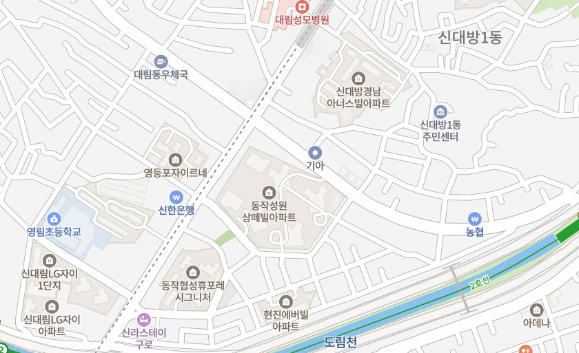</figure><div class='article'><h4 class='lead'>2026년 4월 법인지방소득세 확정신고 안내</h4><ul class='fields'><li><b>신고대상</b><span>동작구 내 본점 또는 주사무소를 둔 12월 말 결산법인</span></li></ul><p>(2025년 귀속 법인소득)</p><ul class='fields'><li><b>신고기간</b><span>2026. 4. 1.~2026. 4. 30.</span></li><li><b>신고방법</b><span>전자신고(위택스 및 이택스), 우편신고, 방문신고</span></li><li>유의사항</li></ul><p class='bullet'>•납부할 세액이 없는 결손법인도 신고대상</p><p class='bullet'>•둘 이상의 지방자치단체에 사업장이 있는 경우 안분하여 신고</p><p class='bullet'>•필수 첨부서류 미 제출 시 가산세 부과</p><p class='bullet'>※세제지원  중동 사태 피해기업 법인지방소득세 신고납부기한 기한</p><p>연장 신청 시 6개월 범위 내 연장</p><div class='dept'>문의  지방소득세과 ☎<a href="tel:028201624" class="tel-link">02-820-1624</a></div><div class='tbl-wrap'><table class='info-table'><tr><th>날짜</th><th>시간</th><th>대상</th><th>프로그램 주제</th></tr><tr><td></td><td>14:00~15:00</td><td>초1~2학년 15명</td><td></td></tr><tr><td></td><td>15:30~16:30</td><td>초3~4학년 15명</td><td></td></tr><tr><td></td><td>17:00~18:00</td><td>초5~6학년 15명</td><td></td></tr></table></div><h4 class='lead'>재활용가능자원 주민수거보상제 확대 운영</h4><p>종이팩, 폐건전지, 투명페트병, 젤아이스팩을 모아오시면 화장지, 새건전지, 종량제봉투(10L), 휴지통(10L)으로 교환해 드립니다! 교환일  (종이팩, 폐건전지) 상시, (투명페트병, 아이스팩) 목요일</p><ul class='fields'><li><b>장소 거주지 관할</b><span>동주민센터</span></li></ul><p style="color:#4d4d4f">교환기준</p><p class='bullet'>•종이팩 1kg, 폐건전지 10개, 투명페트병 20개 또는 젤아이스팩 3개</p><p style="color:#808285">⏚ 화장지 1롤, 새건전지 2개, 종량제봉투(10L) 1장 중 택 1</p><p class='bullet'>•종이팩 3kg 수준* ⏚ 휴지통(10L) 1개</p><p>* 폐건전지 30개 또는 종이팩 1kg + 페트병 20개 + 아이스팩 3개 등 수거품 혼합 가능</p><div class='dept'>문의  청소행정과 ☎<a href="tel:028201343" class="tel-link">02-820-1343</a> 및 거주지 동주민센터</div><div class='tbl-wrap'><table class='info-table'><tr><th>날짜</th><th>시간</th><th>대상</th><th>프로그램 주제</th></tr><tr><td></td><td>14:00~15:30</td><td>7세 및 보호자 6그룹(12명)</td><td></td></tr><tr><td></td><td>16:30~18:30</td><td>초등 3~4학년 및 보호자 6그룹(12명)</td><td></td></tr></table></div><h4 class='lead'>동작수학놀이터 초등·가족 창의수학</h4><h4 class='lead'>프로그램 안내</h4><ul class='fields'><li><b>장소</b><span>동작수학놀이터(사당로17길 4) 2층 피타고라스 카페</span></li></ul><p style="color:#4d4d4f">초등 창의수학 프로그램</p><ul class='fields'><li>날짜</li><li>시간</li><li>대상</li></ul><p style="color:#92b790">프로그램 주제 14:00~15:00 초1~2학년 15명 내가 만든 단 하나의 규칙, 무지개해파리! 2026. 4. 11.(토) 2026. 4. 18.(토) 15:30~16:30 초3~4학년 15명 수학으로 미션을 해결하라, 카훗! 17:00~18:00 초5~6학년 15명 고대 숫자의 비밀, 피라믹스! 가족 창의수학 프로그램</p><ul class='fields'><li>날짜</li><li>시간</li><li>대상</li></ul><p style="color:#92b790">프로그램 주제 14:00~15:30 7세 및 보호자 6그룹(12명) 3D펜을 활용 도형 만들기 2026. 4. 25.(토) 16:30~18:30 초등 3~4학년 및 보호자 6그룹(12명) 그래비트랙스 활용한 STEAM 융합수학 신청  동작구 통합예약사이트(추첨선정)</p><div class='dept'>문의  동작수학놀이터 ☎<a href="tel:028209211" class="tel-link">02-820-9211</a></div></div></div></div><div class='slide' id='s13'><div class='slide-inner'><div class='page-tag' style='background:#6A1B9A'><span class='section'>만화</span><span class='pgnum'>13 / 13</span></div><div class='render-preview'>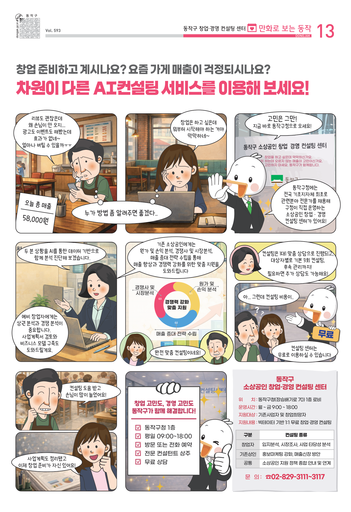</div></div></div><div class='slide' id='s14'><div class='slide-inner'><div class='page-tag' style='background:#C62828'><span class='section'>동작라운지</span><span class='pgnum'>14 / 13</span></div><div class='article'><h3 class='sub-title' style="color:#da709d">생생동작리포터우리동네를 소개합니다</h3></div><p class='standalone-caption'>DONGJAK</p><div class='photo-grid g2'><figure class='photo-item'></figure><figure class='photo-item'></figure></div><div class='article'><p>명예기자  허강무 흑석동 사당3동 명예기자  박준필</p><h4 class='lead' style="color:#636466">삼일절을 맞아</h4><h3 class='sub-title' style="color:#dc6fab">삼일공원에 울려 퍼진 ‘태극의 함성’</h3><h4 class='lead' style="color:#636466">동작의 새 배움터</h4><h3 class='sub-title' style="color:#f37049">흑석고등학교 입학식에서 받은 감동</h3></div><figure class='inline-photo'>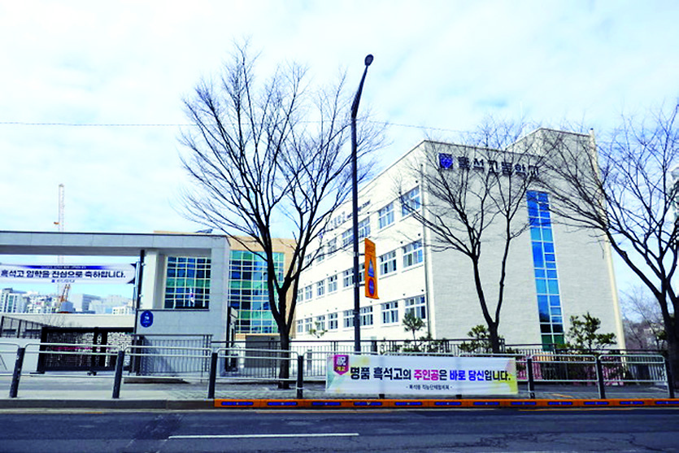</figure><div class='article'><p>3월 3일, 동작구의 새로운 배움의 장이 제107주년 삼일절을 맞아 삼일공원에서 ‘태극의 함성’ 기념행 될 흑석고등학교, 그 멋진 출발을 사가 열렸다. 이번 행사는 사당3동주민센터와 사당청소년센터 알리는 입학식을 보러 교정에 들 가 함께 주관한 행사로, 주민들이 직접 참여하며 삼일절의 의미 어섰다. 하늘은 전날까지 비를 와 독립운동 정신을 되새길 수 있도록 다양한 프로그램으로 마 뿌리더니 신입생들의 새로운 출 련되었다. 발을 축하라도 하듯 신축 교사 행사장에는 태극기를 들고 참여한 주민들과 가족 단위 방문객들 만큼이나 화사하게 변했다. 이 모여 삼일절의 의미를 함께 나누는 모습이 이어졌다. 특히 삼 사실 흑석동에도 고등학교가 있 일절 역사 퀴즈 프로그램에는 어린 학생부터 어르신까지 다양한 었다. 유치원부터 대학교까지 갖 연령대의 주민들이 참여하여 우리 역사와 독립운동의 의미를 자 춰 교육의 요람이었던 이곳은, 1997년 유일한 고교였던 중대부고가 도 연스럽게 되새기는 시간이 되었다. 곡동으로 이전하면서 공백이 생겼다. 이후 학생들은 고등학교를 찾아 뿔 또한 태극기 굿즈 만들기와 태극기 에코백 만들기 체험 등 다양 뿔이 흩어져 약 30년간 원거리 통학을 감수해야 했다. 뉴타운 재개발이 한 프로그램이 진행되어 어린이와 가족들이 직접 참여하며 태극 완성되며 인구 3만 명을 넘어서는 현실에서 지역 내 고교 부재는 균등한 기의 상징성과 의미를 가까이에서 느낄 수 있었다. 공연 프로그 교육 기회의 박탈이나 다름없었다. 이에 주민들은 고등학교 유치를 위 램에서는 독립운동의 정신과 나라사랑의 의미를 문화적으로 전 해 각고의 노력을 기울였고 그 결실이 바로 오늘의 흑석고등학교다. 달하며 행사 분위기를 더욱 풍성하게 만들었다. 입학식이 열리는 2층 체육관으로 향했다. 기대와 설렘이 가득한 학생 이번 ‘태극의 함성’행사는 단순한 기념식을 넘어 주민들이 함께 들이 자유롭게 자리하고 있었다. 학교가 추구하는 창의·창조는 바로 참여하고 체험하며 삼일절의 역사적 의미를 되새기는 뜻깊은 자 그런 자유로움에서 비롯될 게 자명하다. 1회 신입생들의 눈빛에서 흑 리였다. 앞으로도 이러한 역사 기</p></div><figure class='inline-photo'>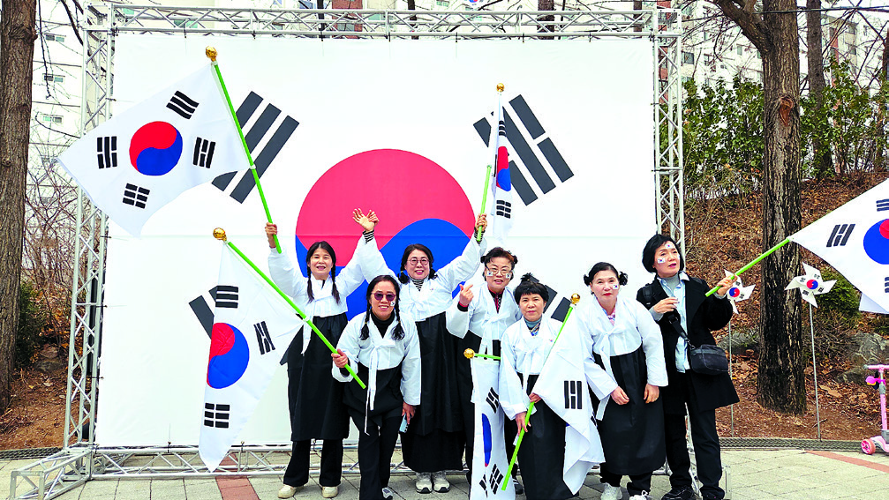</figure><div class='article'><p>석고의 결실 어린 미래를 짐작할 수 있었다. 념행사가 지역사회 속에서 꾸 김은령 교장선생님은 환영사에서, 원석 상태의 검은돌인 흑석이 오랜 준히 이어져 우리 역사와 압력 끝에 블랙 다이아몬드라는 보석으로 빛을 발하듯 1회 신입생들 독립정신을 기억하는 계 이 흑석고에서 창의·창조·봉사를 실천하는 값진 보석으로 성장하 기가 되기를 기대한다. 길 바란다는 말로 앞날을 축복했다. 푸르른 소나무 가득한 서 달산 자락의 신생 흑석고등학교를 뒤로한 채, 학생들의 빛 나는 미래를 기대하며 기자는 교문을 나왔다.</p></div><figure class='inline-photo'></figure><div class='article'><p>사당2동 명예기자  정재영</p><h3 class='sub-title' style="color:#5999ae">만학도를 위한 교육의 길,   신동신중·정보산업고등학교</h3></div><figure class='inline-photo'>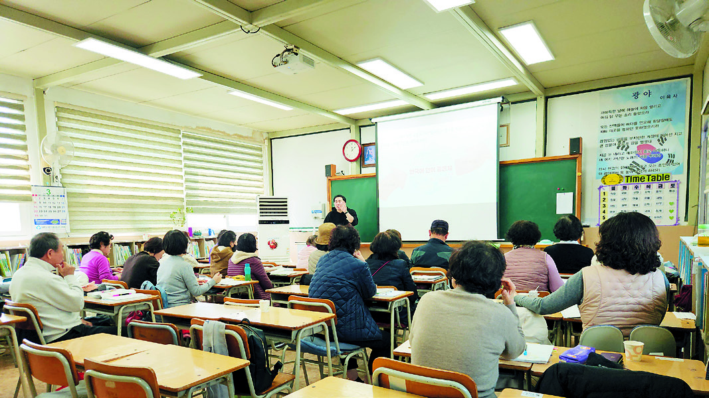</figure><div class='article'><p>서울 동작구 사당2동에 위치한 신동신중·정보산업고등학교는 학업을 이어가지 못했던 성인들에게 다시 배움의 기회를 제공하는 학력 인정 교육기관이다. 학교는 과거 산업화 시대, 경제적 이유 등으로 교육을 받지 못한 분 들을 위해 설립됐다. 1968년 개교 이후 지금까지 약 1만 5천 명의 졸업생을 배출하며 만학도 교육의 중요한 역할을 해왔다. 중학교 2년, 고등학교 2년의 4년 과정을 운영하며 과정을 마치면 정식 학력이 인정된다. 중 학교는 의무교육, 고등학교는 무상교육이 적용돼 학비 부담 없이 고등학교 졸업 학력을 취득할 수 있으며, 졸업 후 대학 진학도 가능해 새로운 진로를 준비할 수 있다. 현재 교실에는 50~60대를 중심으로 다양한 연령대와 삶의 경험을 가진 학생들이 함께 공부하고 있다. 젊 은 시절 가정 형편 때문에 학업을 이어가지 못했던 사람도 있고, 생계를 위해 일찍 사회에 나섰던 사람도 있 다. 학교 관계자는 “처음에는 공부에 대한 자신감이 부족한 경우가 많지만 수업을 이어가면서 점점 적극적으로 참 여하게 된다”라고 말했다. 학교 측은 아직도 많은 사람들이 학교의 존재를 알지 못한다는 점을 아쉬워한다. “배우고 싶 지만 방법을 몰라 학교에 오지 못하는 분들이 많습니다. 이런 교육 기회가 더 널리 알려지기를 바랍니다” 늦은 나이에 다시 시작하는 공부로 새로운 가능성을 만들어 가는 길. 신동신중정보산업고등학교는 오늘도 교실의 문을 열어 두고 있다.</p></div></div></div><div class='slide' id='s15'><div class='slide-inner'><div class='page-tag' style='background:#283593'><span class='section'>열린의정</span><span class='pgnum'>15 / 13</span></div><div class='article'><h2 class='main-title' style="color:#c28e4e">동작구의회열린의정15</h2><div class='tbl-wrap'><table class='info-table'><tr><th>일자</th><th>구분</th><th>주요내용</th></tr><tr><td>4 15(수) . .</td><td>제1차 본회의</td><td>• 회기결정의 건 • 회의록 서명 의원 선출의 건</td></tr><tr><td>4 16(목) ~ . . 4 21(화) . .</td><td>상임위원회 활동</td><td>• 일반안건 심사 • 현장의정 활동</td></tr><tr><td>4 23(목) . .</td><td>제2차 본회의</td><td>• 일반안건 처리</td></tr></table></div><div class='tbl-wrap'><table class='info-table'><tr><th>동작구의회 참여 안내 누리집 : <a href="https://assemblydongjakgokr/" target="_blank">https://assemblydongjakgokr/</a> . . .</th><th></th></tr><tr><td>의회에 바란다</td><td>구민 여러분의 정책 건의, 자치법령(조례)의 제·개정 등 의정 활동에 관한 소중한 의견을 게시할 수 있는 공간</td></tr><tr><td>회의 방청</td><td>전화 신청(사전 예약) 후 신분증을 지참하여 회의 당일 의회 방문(☎ <a href="tel:028201715" class="tel-link">02-820-1715</a>)</td></tr><tr><td>방문민원</td><td>의원과의 상담을 원하시는 분은 사전 연락 후 의회를 방문하여 대면 상담(☎ <a href="tel:028201720" class="tel-link">02-820-1720</a>~1723)</td></tr><tr><td>청원</td><td>방법 : 의원 소개 ⏚ 청원서 작성(홈페이지 양식) ⏚ 의회 제출(☎ <a href="tel:028201735" class="tel-link">02-820-1735</a>)</td></tr></table></div></div><p class='standalone-caption'>DONGJAK</p><div class='article'><h2 class='main-title' style="color:#636466">동작구의회 입법영향평가 실시</h2><h4 class='lead' style="color:#4d4d4f">140건 평가대상 조례 중 개정·통합·폐지권고 등 131건 성과</h4><div class='tbl-wrap'><table class='info-table'><tr><th>일자</th><th>구분</th><th>주요내용</th></tr><tr><td>4 15(수) . .</td><td>제1차 본회의</td><td>• 회기결정의 건 • 회의록 서명 의원 선출의 건</td></tr><tr><td>4 16(목) ~ . . 4 21(화) . .</td><td>상임위원회 활동</td><td>• 일반안건 심사 • 현장의정 활동</td></tr><tr><td>4 23(목) . .</td><td>제2차 본회의</td><td>• 일반안건 처리</td></tr></table></div><div class='tbl-wrap'><table class='info-table'><tr><th>동작구의회 참여 안내 누리집 : <a href="https://assemblydongjakgokr/" target="_blank">https://assemblydongjakgokr/</a> . . .</th><th></th></tr><tr><td>의회에 바란다</td><td>구민 여러분의 정책 건의, 자치법령(조례)의 제·개정 등 의정 활동에 관한 소중한 의견을 게시할 수 있는 공간</td></tr><tr><td>회의 방청</td><td>전화 신청(사전 예약) 후 신분증을 지참하여 회의 당일 의회 방문(☎ <a href="tel:028201715" class="tel-link">02-820-1715</a>)</td></tr><tr><td>방문민원</td><td>의원과의 상담을 원하시는 분은 사전 연락 후 의회를 방문하여 대면 상담(☎ <a href="tel:028201720" class="tel-link">02-820-1720</a>~1723)</td></tr><tr><td>청원</td><td>방법 : 의원 소개 ⏚ 청원서 작성(홈페이지 양식) ⏚ 의회 제출(☎ <a href="tel:028201735" class="tel-link">02-820-1735</a>)</td></tr></table></div></div><figure class='inline-photo'>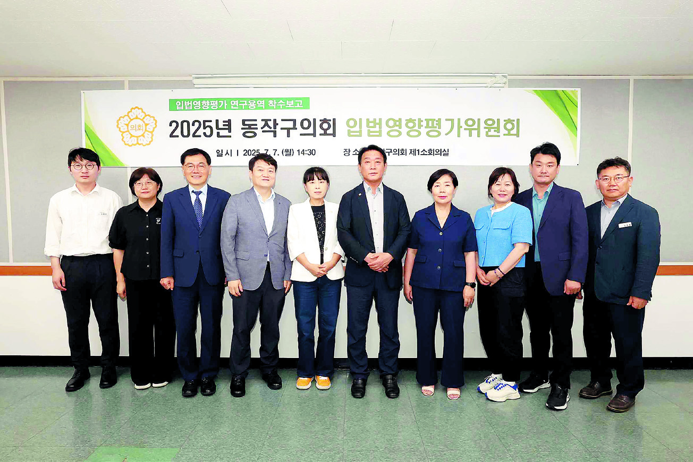</figure><div class='article'><p>동작구의회는 지난해 「서울특별시 동작구의회 입법영향평가 조례」 에 따라 현행 조례의 시행 효과와 규범성 등을 분석하기 위해 입법영향평가를 실시했다. 이번 평가는 2023년 1월 1일 이전 제정되거나 전부개정되어 시행 중인 조례 140건을 대상으로 2025년 3월부터 12월까지 진행됐다. 입법영향평가는 설명회 개최, 자료 제출 및 수집, 연구용역 수행 등의 절차를 거쳐 진행됐으며, 정재천 의장을 비롯한 김효숙·김영림·김은하·송동석 의원과 외부위원 및 관계공무원들로 구성 된 입법영향평가위원회 심의를 통해 최종 평가 결과가 확정됐다. 입법영향평가위원회는  연구 용역 보고와 평가 결과 심의 등을 위해 그간 여러 차례에 결쳐 회의를 개최했다. 입법영향평가 결과 140건의 조례 가운데 개정권고 52건, 통합</p><div class='tbl-wrap'><table class='info-table'><tr><th>일자</th><th>구분</th><th>주요내용</th></tr><tr><td>4 15(수) . .</td><td>제1차 본회의</td><td>• 회기결정의 건 • 회의록 서명 의원 선출의 건</td></tr><tr><td>4 16(목) ~ . . 4 21(화) . .</td><td>상임위원회 활동</td><td>• 일반안건 심사 • 현장의정 활동</td></tr><tr><td>4 23(목) . .</td><td>제2차 본회의</td><td>• 일반안건 처리</td></tr></table></div><div class='tbl-wrap'><table class='info-table'><tr><th>동작구의회 참여 안내 누리집 : <a href="https://assemblydongjakgokr/" target="_blank">https://assemblydongjakgokr/</a> . . .</th><th></th></tr><tr><td>의회에 바란다</td><td>구민 여러분의 정책 건의, 자치법령(조례)의 제·개정 등 의정 활동에 관한 소중한 의견을 게시할 수 있는 공간</td></tr><tr><td>회의 방청</td><td>전화 신청(사전 예약) 후 신분증을 지참하여 회의 당일 의회 방문(☎ <a href="tel:028201715" class="tel-link">02-820-1715</a>)</td></tr><tr><td>방문민원</td><td>의원과의 상담을 원하시는 분은 사전 연락 후 의회를 방문하여 대면 상담(☎ <a href="tel:028201720" class="tel-link">02-820-1720</a>~1723)</td></tr><tr><td>청원</td><td>방법 : 의원 소개 ⏚ 청원서 작성(홈페이지 양식) ⏚ 의회 제출(☎ <a href="tel:028201735" class="tel-link">02-820-1735</a>)</td></tr></table></div></div><figure class='inline-photo'>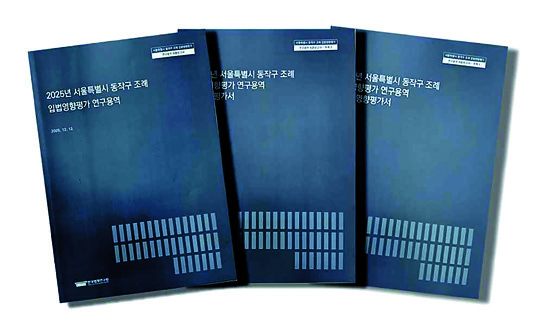</figure><div class='article'><p>및 폐지권고 8건, 이행권고 3건, 일반정비 68건 등 131건에 대해 개선 의견이 확정됐으며 이를위해 198개의 개선방안이 도출됐 다. 동작구의회는 평가 결과를 바탕으로 향후 각 상임위원회별 검토를 거쳐 필요한 조례 개정과 정비를 추진할 계획이다.</p><h3 class='sub-title' style="color:#c28e4e">동작구의회, 2025회계연도 결산검사 위원 위촉</h3><h4 class='lead' style="color:#4d4d4f">4월1일부터 30일까지 결산검사 실시</h4><div class='tbl-wrap'><table class='info-table'><tr><th>일자</th><th>구분</th><th>주요내용</th></tr><tr><td>4 15(수) . .</td><td>제1차 본회의</td><td>• 회기결정의 건 • 회의록 서명 의원 선출의 건</td></tr><tr><td>4 16(목) ~ . . 4 21(화) . .</td><td>상임위원회 활동</td><td>• 일반안건 심사 • 현장의정 활동</td></tr><tr><td>4 23(목) . .</td><td>제2차 본회의</td><td>• 일반안건 처리</td></tr></table></div><div class='tbl-wrap'><table class='info-table'><tr><th>동작구의회 참여 안내 누리집 : <a href="https://assemblydongjakgokr/" target="_blank">https://assemblydongjakgokr/</a> . . .</th><th></th></tr><tr><td>의회에 바란다</td><td>구민 여러분의 정책 건의, 자치법령(조례)의 제·개정 등 의정 활동에 관한 소중한 의견을 게시할 수 있는 공간</td></tr><tr><td>회의 방청</td><td>전화 신청(사전 예약) 후 신분증을 지참하여 회의 당일 의회 방문(☎ <a href="tel:028201715" class="tel-link">02-820-1715</a>)</td></tr><tr><td>방문민원</td><td>의원과의 상담을 원하시는 분은 사전 연락 후 의회를 방문하여 대면 상담(☎ <a href="tel:028201720" class="tel-link">02-820-1720</a>~1723)</td></tr><tr><td>청원</td><td>방법 : 의원 소개 ⏚ 청원서 작성(홈페이지 양식) ⏚ 의회 제출(☎ <a href="tel:028201735" class="tel-link">02-820-1735</a>)</td></tr></table></div></div><figure class='inline-photo'>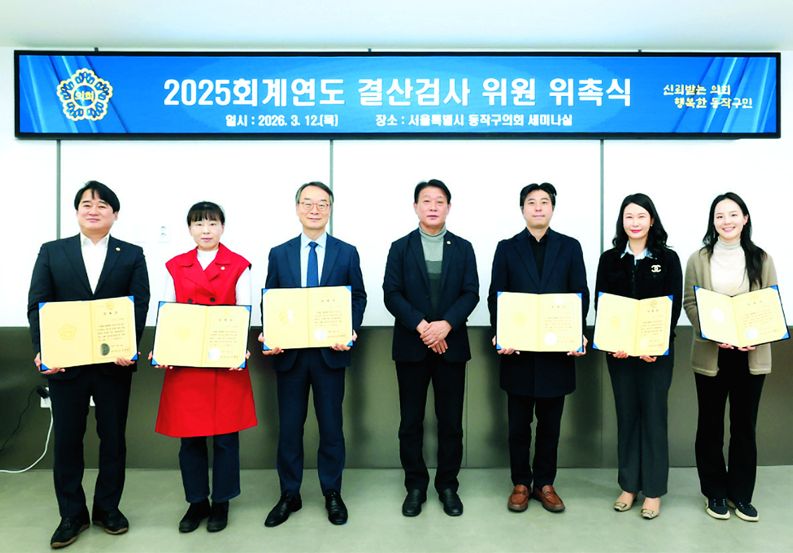</figure><div class='article'><p>동작구의회가 선임한 2025회계연도 세입·세출 결산검사위원들이 4월 1일부터 4월 30일까지 결산검사를 실시한다. 결산검사 위원으로는 신동철 의원(노량진1·2동) 을 책임위원으로 김영림 의원(비례대표)과 김재국·김훈찬·윤태경·안미래 세무사 가 함께 참여한다. 위원들은 세입·세출 결산과 재산·기금 재무제표 등 예산 집행 의 적법성과 타당성을 중점적으로 점검할 예정이다. 검사완료 후 결과는 결산검사 의견서로 작성되어 구청장에게 제출되며, 구청은 이를 결산서에 첨부해 구의회에 제출한다. 이후 결산서는 제1차 정례회에서 구의회 심의를 거쳐 최종 승인된다.</p><h3 class='sub-title' style="color:#4d4d4f">동작구의회 제346회 임시회 운영 동작구의회 입법·법률 고문 위촉</h3><div class='tbl-wrap'><table class='info-table'><tr><th>일자</th><th>구분</th><th>주요내용</th></tr><tr><td>4 15(수) . .</td><td>제1차 본회의</td><td>• 회기결정의 건 • 회의록 서명 의원 선출의 건</td></tr><tr><td>4 16(목) ~ . . 4 21(화) . .</td><td>상임위원회 활동</td><td>• 일반안건 심사 • 현장의정 활동</td></tr><tr><td>4 23(목) . .</td><td>제2차 본회의</td><td>• 일반안건 처리</td></tr></table></div><div class='tbl-wrap'><table class='info-table'><tr><th>동작구의회 참여 안내 누리집 : <a href="https://assemblydongjakgokr/" target="_blank">https://assemblydongjakgokr/</a> . . .</th><th></th></tr><tr><td>의회에 바란다</td><td>구민 여러분의 정책 건의, 자치법령(조례)의 제·개정 등 의정 활동에 관한 소중한 의견을 게시할 수 있는 공간</td></tr><tr><td>회의 방청</td><td>전화 신청(사전 예약) 후 신분증을 지참하여 회의 당일 의회 방문(☎ <a href="tel:028201715" class="tel-link">02-820-1715</a>)</td></tr><tr><td>방문민원</td><td>의원과의 상담을 원하시는 분은 사전 연락 후 의회를 방문하여 대면 상담(☎ <a href="tel:028201720" class="tel-link">02-820-1720</a>~1723)</td></tr><tr><td>청원</td><td>방법 : 의원 소개 ⏚ 청원서 작성(홈페이지 양식) ⏚ 의회 제출(☎ <a href="tel:028201735" class="tel-link">02-820-1735</a>)</td></tr></table></div></div><div class='photo-grid g2'><figure class='photo-item'></figure><figure class='photo-item'></figure></div><div class='article'><p>동작구의회는 4월 15일부터 23일까지 9일간의 일정으로 제346회 임시회를 개최할</p><div class='tbl-wrap'><table class='info-table'><tr><th>일자</th><th>구분</th><th>주요내용</th></tr><tr><td>4 15(수) . .</td><td>제1차 본회의</td><td>• 회기결정의 건 • 회의록 서명 의원 선출의 건</td></tr><tr><td>4 16(목) ~ . . 4 21(화) . .</td><td>상임위원회 활동</td><td>• 일반안건 심사 • 현장의정 활동</td></tr><tr><td>4 23(목) . .</td><td>제2차 본회의</td><td>• 일반안건 처리</td></tr></table></div><div class='tbl-wrap'><table class='info-table'><tr><th>동작구의회 참여 안내 누리집 : <a href="https://assemblydongjakgokr/" target="_blank">https://assemblydongjakgokr/</a> . . .</th><th></th></tr><tr><td>의회에 바란다</td><td>구민 여러분의 정책 건의, 자치법령(조례)의 제·개정 등 의정 활동에 관한 소중한 의견을 게시할 수 있는 공간</td></tr><tr><td>회의 방청</td><td>전화 신청(사전 예약) 후 신분증을 지참하여 회의 당일 의회 방문(☎ <a href="tel:028201715" class="tel-link">02-820-1715</a>)</td></tr><tr><td>방문민원</td><td>의원과의 상담을 원하시는 분은 사전 연락 후 의회를 방문하여 대면 상담(☎ <a href="tel:028201720" class="tel-link">02-820-1720</a>~1723)</td></tr><tr><td>청원</td><td>방법 : 의원 소개 ⏚ 청원서 작성(홈페이지 양식) ⏚ 의회 제출(☎ <a href="tel:028201735" class="tel-link">02-820-1735</a>)</td></tr></table></div></div><figure class='inline-photo'></figure><div class='article'><p>예정이다. 이번 임시회는 4월 15일 제1차 본회의를 시작으로 회기결정과 회의록 서명의원 선출 등을 처리하며 본격적인 의사일정에 들어간다. 이어 상임위원회별 일반안건 검토 및 현장 의정활동을 실시한 후,  23일 제2차 본회의를 통해 각 상임 김영민 변호사 박병규 변호사 안미혜 변호사 위원회에서 심사한 안건을 최종 처리하며 회기 일정을 마무리할 예정이다. 동작구의회는 의정활동의 전문성과 효율성을 높이기 위해 입법·법률 고문단을 구 일자 구분 주요내용 성·운영하고 있다. 4. 15.(수) 제1차 본회의</p><p class='bullet'>• 회기결정의 건</p><p class='bullet'>• 회의록 서명 의원 선출의 건</p><p>입법·법률 고문단은 자치법규 제·개정 관련 입법 자문과 상위 법령 및 관련 법규 4. 16.(목) ~ 4. 21.(화) 상임위원회 활동</p><p class='bullet'>• 일반안건 심사</p><p class='bullet'>• 현장의정 활동</p><p>해석, 의안 심사 과정에서 발생하는 법률 사항 등에 대해 자문을 수행하고 있다. 이번에 새롭게 위촉된 입법·법률 고문은 김영민·박병규·안미혜 변호사로, 2028년 4. 23.(목) 제2차 본회의</p><p class='bullet'>• 일반안건 처리</p><p>2월까지 의정활동 과정에서 필요한 법률 검토와 해석을 지원하게 된다.</p><p class='bullet'>※ 상기 일정은 의회 사정에 따라 변경될 수 있습니다.</p><h4 class='lead'>동작구의회 참여 안내</h4><p style="color:#c28e4e">누리집 : <a href="https://assembly.dongjak.go.kr/" target="_blank">https://assembly.dongjak.go.kr/</a> 의회에 바란다 구민 여러분의 정책 건의, 자치법령(조례)의 제·개정 등 의정 활동에 관한 소중한 의견을 게시할 수 있는 공간 회의 방청</p><div class='dept'>전화 신청(사전 예약) 후 신분증을 지참하여 회의 당일 의회 방문(☎ <a href="tel:028201715" class="tel-link">02-820-1715</a>)</div><div class='tbl-wrap'><table class='info-table'><tr><th>일자</th><th>구분</th><th>주요내용</th></tr><tr><td>4 15(수) . .</td><td>제1차 본회의</td><td>• 회기결정의 건 • 회의록 서명 의원 선출의 건</td></tr><tr><td>4 16(목) ~ . . 4 21(화) . .</td><td>상임위원회 활동</td><td>• 일반안건 심사 • 현장의정 활동</td></tr><tr><td>4 23(목) . .</td><td>제2차 본회의</td><td>• 일반안건 처리</td></tr></table></div><p style="color:#c28e4e">방문민원</p><div class='dept'>의원과의 상담을 원하시는 분은 사전 연락 후 의회를 방문하여 대면 상담(☎ <a href="tel:028201720" class="tel-link">02-820-1720</a>~1723)</div><div class='tbl-wrap'><table class='info-table'><tr><th>동작구의회 참여 안내 누리집 : <a href="https://assemblydongjakgokr/" target="_blank">https://assemblydongjakgokr/</a> . . .</th><th></th></tr><tr><td>의회에 바란다</td><td>구민 여러분의 정책 건의, 자치법령(조례)의 제·개정 등 의정 활동에 관한 소중한 의견을 게시할 수 있는 공간</td></tr><tr><td>회의 방청</td><td>전화 신청(사전 예약) 후 신분증을 지참하여 회의 당일 의회 방문(☎ <a href="tel:028201715" class="tel-link">02-820-1715</a>)</td></tr><tr><td>방문민원</td><td>의원과의 상담을 원하시는 분은 사전 연락 후 의회를 방문하여 대면 상담(☎ <a href="tel:028201720" class="tel-link">02-820-1720</a>~1723)</td></tr><tr><td>청원</td><td>방법 : 의원 소개 ⏚ 청원서 작성(홈페이지 양식) ⏚ 의회 제출(☎ <a href="tel:028201735" class="tel-link">02-820-1735</a>)</td></tr></table></div><p style="color:#c28e4e">청원</p><div class='dept'>방법 : 의원 소개 ⏚ 청원서 작성(홈페이지 양식) ⏚ 의회 제출(☎ <a href="tel:028201735" class="tel-link">02-820-1735</a>)</div></div></div></div><div class='slide' id='s16'><div class='slide-inner'><div class='page-tag' style='background:#F9A825'><span class='section'>독자이벤트</span><span class='pgnum'>16 / 13</span></div><div class='article'><h3 class='sub-title' style="color:#f37049">독자이벤트동작라운지</h3><div class='tbl-wrap'><table class='info-table'><tr><th>이벤트 하나! 도전! 나도 동작 기자 우리 가족의 행복한 순간을 담은 사진과 사연을 함께 보내 주세요 채택되신 분은 소정의 원고료를 드립니다 . .</th><th></th><th></th><th></th></tr><tr><td></td><td>이벤트 하나! 도전! 나도 동작 기자 우리 가족의 행복한 순간을 담은 사진과 사연을 함께 보내 주세요 채택되신 분은 소정의 원고료를 드립니다 . .</td><td></td><td></td></tr><tr><td></td><td></td><td>이벤트 하나! 도전! 나도 동작 기자 우리 가족의 행복한 순간을 담은 사진과 사연을 함께 보내 주세요 채택되신 분은 소정의 원고료를 드립니다 . .</td><td></td></tr><tr><td></td><td></td><td>성명, 연락처, 거주동을 꼭 기재해 주세요 . (4월 17일까지) 주제 우리 가족의 행복한 순간 찰칵! 분량 공백 포함 300자 이내(사진 별도 첨부)</td><td></td></tr><tr><td>방법 QR코드 접속하여 작성</td><td></td><td>방법 QR코드 접속하여 작성</td><td></td></tr></table></div></div><p class='standalone-caption'>DONGJAK</p><p class='standalone-caption'>DONGJAK</p><div class='article'><h3 class='sub-title'>한날 한시에 피는 꽃은 없다</h3><p>이예환(상도동) 2024년 겨울, 나는 인생 2막을 위한 이직 준비에 한창이었다. 이직 하고 싶었던 직장에서는 ‘조경기능사’ 자격증에 가산점을 주고 있었다. 자격증이 없어도 도전할 수는 있었지만, 조금이라도 더 확률을 높이기 위해 조경기능사를 따보기로 했다. 문제는 내가 조 경에 대해 아무것도 모른다는 것이었다. 막상 공부해보니 조경은 생각보다 방대하고 깊이가 있었다. 나에게는 그저 나무와 풀, 꽃 이었던 것들이 다 제각각의 명칭과 특징이 있었다. 도시에서 태어나 어렸을 때부터 콘크리트 속에서 자라온 나에게 꽃과 나무에 대한 지식은 전무했다. 그전에는 왜 아파트 화단에 낮은 식물들이 줄지어 있었는지 몰랐지만, 이제는 그것들이 울 타리와 차폐 목적으로 심어졌다는 것을 알게 되었다. 단지를 가 로지르던 무릎 높이의 쥐똥나무와 회양목에도 다 의도가 숨어 있었다. 내가 가장 어려웠던 부분은 120종의 수목감별이었다. 수목감별을 공부하면서 나는 식물들마다 꽃이 개화하는 시기가 참 다양하다 는 것을 알게 되었다. 그리고 내가 지금 공부하고 있는 이 순간도 인생의 새로운 개화를 위해 견뎌야 하는 인내의 시간이라는 생각 이 들었다. 사람들도 저마다 인생의 개화 시기가 다를 것이다. 중 요한 것은 꺾이지 않는 마음이다. 아직 당신의 인생에 개화의 시 기는 도래하지 않았을 뿐이다. 같은 가지에서도 한 날 한시에 피는 꽃은 없다.</p><h4 class='lead' style="color:#f37049">이벤트 하나!</h4><h4 class='lead' style="color:#f7941d">도전! 나도 동작 기자</h4><p>우리 가족의 행복한 순간을 담은 사진과 사연을 함께 보내 주세요. 채택되신 분은 소정의 원고료를 드립니다. 성명, 연락처, 거주동을 꼭 기재해 주세요. (4월 17일까지)</p><ul class='fields'><li><b>주제 우리 가족의 행복한</b><span>순간 찰칵!</span></li><li><b>분량 공백 포함</b><span>300자 이내(사진 별도 첨부)</span></li><li><b>방법</b><span>QR코드 접속하여 작성</span></li></ul><p class='bullet'>※ 3월 당첨자 30명은 3. 27.(금) 일괄발송</p><h3 class='sub-title'>봄바람 속에 떠오르는 그리움</h3><p>김민(상도동) 겨울은 사람을 자꾸 집 안에 머물게 하는 계절인 것 같습니다. 차가운 바람 때문에 제가 좋아하던 산책도 한동안 제대로 하지 못했습니다. 밖에 나가는 대신 따뜻한 방 안에 있는 시간이 더 익숙해졌고, 그러다 보니 몸도 마음도 조금은 답답하게 느껴졌 습니다. 그런데 요즘은 부드러운 봄바람이 불기 시작하면서 다시 밖으 로 나가고 싶은 마음이 듭니다. 햇살도 밝아지고 공기에도 겨울 과 다른 온기가 느껴집니다. 이럴 때 천천히 길을 걸으며 계절 의 변화를 느끼는 일은 생각보다 큰 위로가 됩니다. 바쁘게 지 나가는 일상 속에서도 산책은 잠시 마음을 쉬게 해 주는 소중한</p><ul class='fields'><li><b>시간이</b><span>됩니다.</span></li></ul><p>산책을 생각하면 가장 먼저 엄마가 떠오릅니다. 예전에는 엄마 와 함께 동네를 자주 걸었습니다. 특별한 이야기가 없어도 나란 히 걷는 시간만으로 참 따뜻했고, 소소한 이야기를 나누는 순간 들이 오래도록 기억에 남습니다. 그래서 봄바람을 마주하면 엄 마와 함께 걷던 길이 더욱 그리워집니다. 이번 봄에는 다시 자주 산책을 나가고 싶습니다. 멈추었던 걸음 을 천천히 이어 가며, 계절의 변화를 가까이에서 느끼고 싶습니 다. 그리고 산책길에서 떠오르는 그리운 마음도 함께 조용히 달 래 보고 싶습니다.</p><h4 class='lead' style="color:#f37049">이벤트 둘!</h4><h4 class='lead' style="color:#f7941d">동작 퀴즈마당</h4><p>조선 시대 단종의 복위를 도모하다 목숨을 잃은 충신들을 기리기 위해 조성된 동작구의 역사공원은 어디일까요? ① 효사정공원                   ② 용양봉저정공원 ③ 사육신역사공원             ④ 현충원 QR코드로 설문에 참여하신 후 성함과 연락처를 꼭 기재해 주세요.(4월 17일까지)</p><p class='bullet'>※ 참여자 중 추첨을 통하여 30분께 커피 기프티콘을</p><p style="color:#4d4d4f">보내드립니다. 신청은 QR코드로만 받습니다.</p><div class='tbl-wrap'><table class='info-table'><tr><th>이벤트 하나! 도전! 나도 동작 기자 우리 가족의 행복한 순간을 담은 사진과 사연을 함께 보내 주세요 채택되신 분은 소정의 원고료를 드립니다 . .</th><th></th><th></th><th></th></tr><tr><td></td><td>이벤트 하나! 도전! 나도 동작 기자 우리 가족의 행복한 순간을 담은 사진과 사연을 함께 보내 주세요 채택되신 분은 소정의 원고료를 드립니다 . .</td><td></td><td></td></tr><tr><td></td><td></td><td>이벤트 하나! 도전! 나도 동작 기자 우리 가족의 행복한 순간을 담은 사진과 사연을 함께 보내 주세요 채택되신 분은 소정의 원고료를 드립니다 . .</td><td></td></tr><tr><td></td><td></td><td>성명, 연락처, 거주동을 꼭 기재해 주세요 . (4월 17일까지) 주제 우리 가족의 행복한 순간 찰칵! 분량 공백 포함 300자 이내(사진 별도 첨부)</td><td></td></tr><tr><td>방법 QR코드 접속하여 작성</td><td></td><td>방법 QR코드 접속하여 작성</td><td></td></tr></table></div></div></div></div>
    <button class="nb" id="np" onclick="go(c-1)">&#8249;</button>
    <button class="nb" id="nn" onclick="go(c+1)">&#8250;</button>
  </div>
</div>

<!-- 목차 오버레이 -->
<div id="tov">
  <div class="tov-hd">
    <span class="tov-title">목차 Contents</span>
    <button class="tov-close" onclick="closeToc()">&#10005; 닫기</button>
  </div>
  <div class="tc-grid"><div class='tc-item' onclick='go(0);closeToc()'><div class='tc-thumb'></div><div class='tc-meta'><span class='tc-pg' style='color:#CA3E4C'>표지</span><span class='tc-label'>표지</span></div></div><div class='tc-item' onclick='go(1);closeToc()'><div class='tc-thumb'>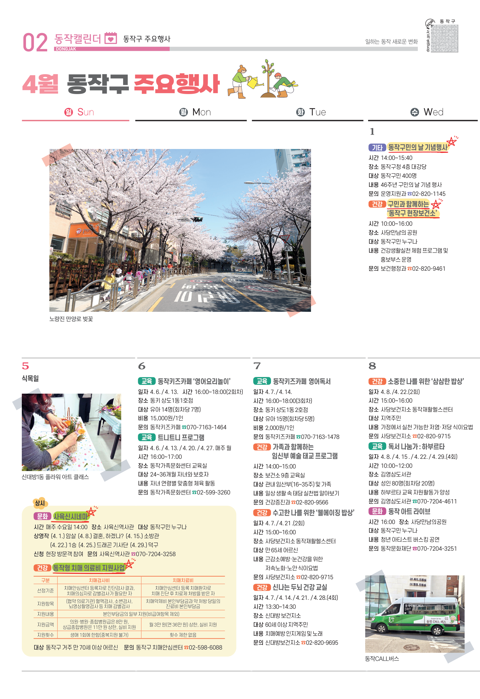</div><div class='tc-meta'><span class='tc-pg' style='color:#F47930'>동작캘린더</span><span class='tc-label'>동작캘린더</span></div></div><div class='tc-item' onclick='go(2);closeToc()'><div class='tc-thumb'>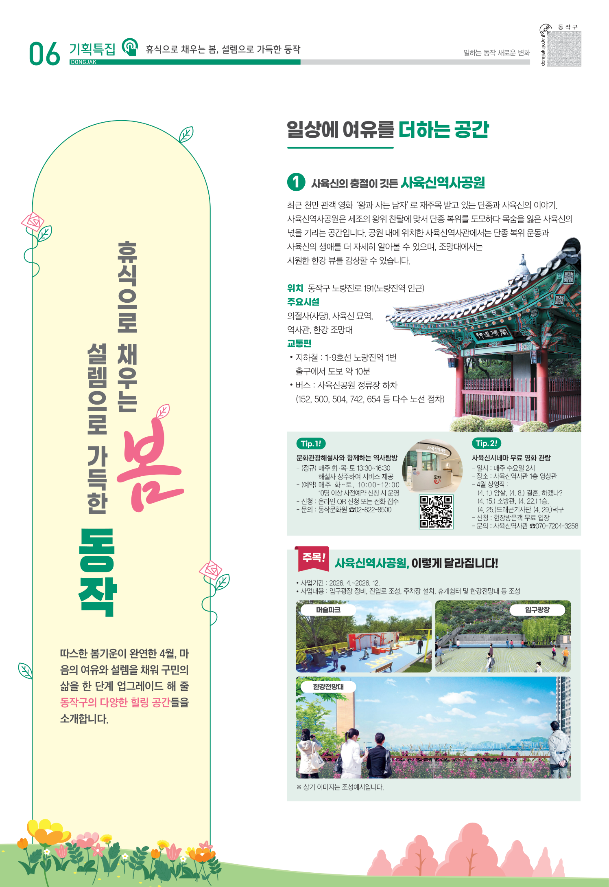</div><div class='tc-meta'><span class='tc-pg' style='color:#CA3E4C'>기획특집</span><span class='tc-label'>기획특집 1</span></div></div><div class='tc-item' onclick='go(3);closeToc()'><div class='tc-thumb'>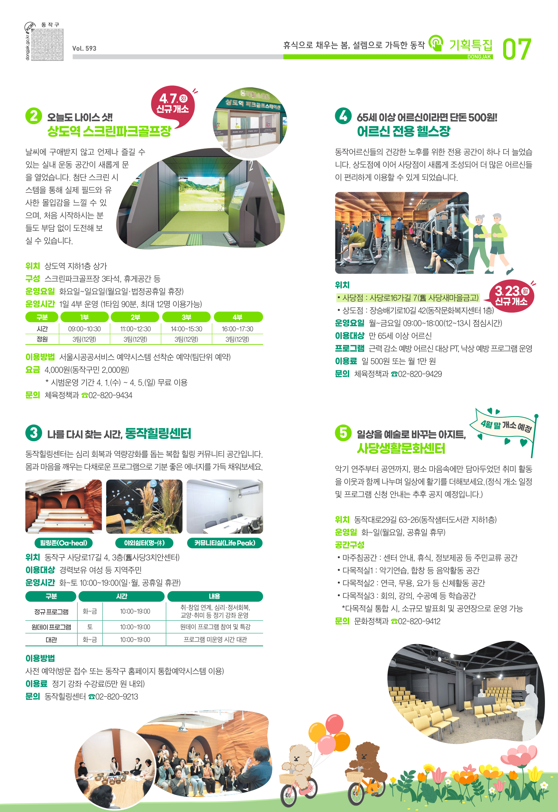</div><div class='tc-meta'><span class='tc-pg' style='color:#CA3E4C'>기획특집</span><span class='tc-label'>기획특집 2</span></div></div><div class='tc-item' onclick='go(4);closeToc()'><div class='tc-thumb'>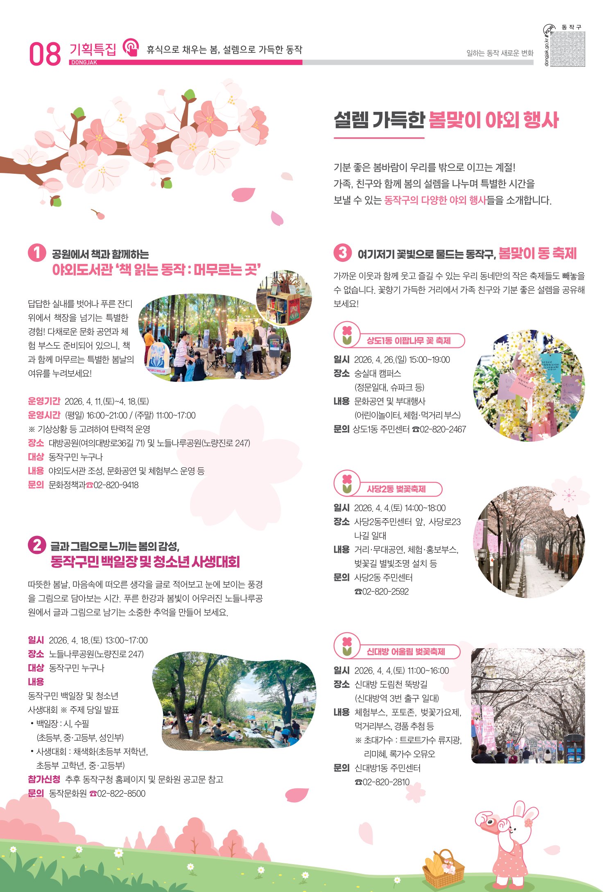</div><div class='tc-meta'><span class='tc-pg' style='color:#CA3E4C'>기획특집</span><span class='tc-label'>기획특집 3</span></div></div><div class='tc-item' onclick='go(5);closeToc()'><div class='tc-thumb'>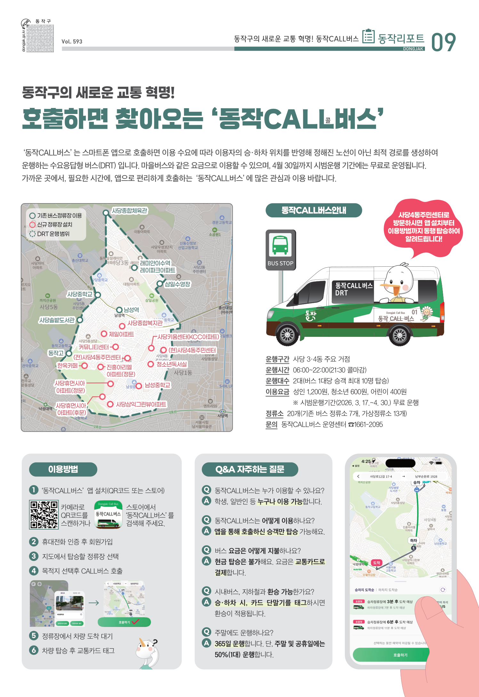</div><div class='tc-meta'><span class='tc-pg' style='color:#1565C0'>동작리포트</span><span class='tc-label'>동작리포트</span></div></div><div class='tc-item' onclick='go(6);closeToc()'><div class='tc-thumb'>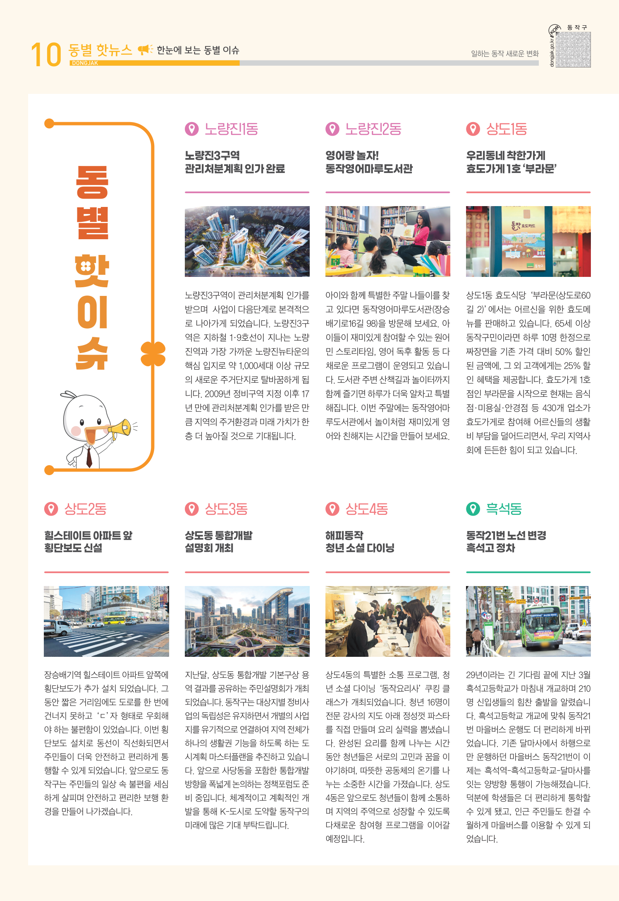</div><div class='tc-meta'><span class='tc-pg' style='color:#2E7D32'>동별 핫뉴스</span><span class='tc-label'>동별 핫뉴스 1</span></div></div><div class='tc-item' onclick='go(7);closeToc()'><div class='tc-thumb'>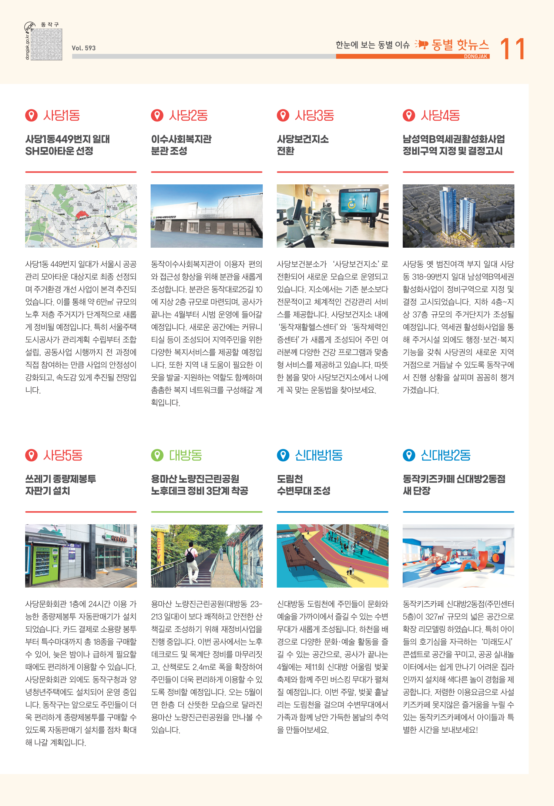</div><div class='tc-meta'><span class='tc-pg' style='color:#2E7D32'>동별 핫뉴스</span><span class='tc-label'>동별 핫뉴스 2</span></div></div><div class='tc-item' onclick='go(8);closeToc()'><div class='tc-thumb'></div><div class='tc-meta'><span class='tc-pg' style='color:#455A64'>구정소식</span><span class='tc-label'>구정소식</span></div></div><div class='tc-item' onclick='go(9);closeToc()'><div class='tc-thumb'></div><div class='tc-meta'><span class='tc-pg' style='color:#6A1B9A'>만화</span><span class='tc-label'>만화</span></div></div><div class='tc-item' onclick='go(10);closeToc()'><div class='tc-thumb'></div><div class='tc-meta'><span class='tc-pg' style='color:#C62828'>동작라운지</span><span class='tc-label'>동작라운지</span></div></div><div class='tc-item' onclick='go(11);closeToc()'><div class='tc-thumb'></div><div class='tc-meta'><span class='tc-pg' style='color:#283593'>열린의정</span><span class='tc-label'>열린의정</span></div></div><div class='tc-item' onclick='go(12);closeToc()'><div class='tc-thumb'></div><div class='tc-meta'><span class='tc-pg' style='color:#F9A825'>독자이벤트</span><span class='tc-label'>독자이벤트</span></div></div></div>
</div>

<!-- 검색 오버레이 -->
<div id="sov">
  <div class="sov-hd">
    <input id="sinp" type="text" placeholder="검색어를 입력하세요..." oninput="doSearch()">
    <button class="sov-close" onclick="closeSearch()">&#10005;</button>
  </div>
  <div id="sres"></div>
</div>

<!-- 줌 모달 -->
<div id="zm" onclick="closeZoom()">
  <button id="zm-x" onclick="closeZoom()">&#10005;</button>
  
</div>

<script>
const N=13;
let c=0;
const slides=document.querySelectorAll('.slide');
const pi=document.getElementById('pi');

function go(n){
  if(n<0||n>=N)return;
  const d=n>c?1:-1;
  slides[c].style.transition='transform .32s cubic-bezier(.4,0,.2,1)';
  slides[c].style.transform=d>0?'translateX(-100%)':'translateX(100%)';
  slides[n].style.transition='none';
  slides[n].style.transform=d>0?'translateX(100%)':'translateX(-100%)';
  slides[n].scrollTop=0;
  requestAnimationFrame(()=>{
    slides[n].style.transition='transform .32s cubic-bezier(.4,0,.2,1)';
    slides[n].style.transform='translateX(0)';
  });
  c=n;
  pi.textContent=(n+1)+' / '+N;
}

let fz=0;
function toggleFont(){
  fz=(fz+1)%3;
  const sz=[null,'15.5px','17px'][fz];
  document.querySelectorAll('.article p,.article h3,.article h4,.article li,.article blockquote').forEach(
    e=>e.style.fontSize=sz||''
  );
  document.getElementById('btn-font').textContent=fz===0?'가':fz===1?'가+':'가++';
}

function tc(){document.getElementById('tov').classList.toggle('on');}
function closeToc(){document.getElementById('tov').classList.remove('on');}

function zoom(img){document.getElementById('zm-img').src=img.src;document.getElementById('zm').classList.add('on');}
function closeZoom(){document.getElementById('zm').classList.remove('on');}

const searchData=[{"pn": 2, "label": "동작캘린더", "text": "기타  \u0007동작구민의 날 기념행사 시간 14:00~15:40 장소 동작구청 4층 대강당 대상 동작구민 400명 내용 46주년 구민의 날 기념 행사 문의 운영지원과 ☎02-820-1145 건강  구민과 함께하는 ‘동작구 현장보건소’ 시간 10:00~16:00 장소 사당만남의 공원 대상 동작구민 누구나 내용 건강생활실천 체험 프로그램 및 홍보부스 운영 문의 보건행정과 ☎02-820-9461 식목일 교육  동작키즈카페 ‘영어요리놀이’ 일자 4. 6. / 4. 13. 시간 16:00~18:00(2회차) 장소 동키 상도1동1호점 대상 유아 14명(회차당 7명) 비용 15,000원/1인 문의 동작키즈카페 ☎070-7163-1464 교육  트니트니 프로그램 일자 4. 6. / 4. 13. / 4. 20. / 4. 27. 매주 월 시간 16:00~17:00 장소 동작가족문화센터 교육실 대상 24~36개월 자녀와 보호자 내용 자녀 연령별 맞춤형 체육 활동 문의 동작가족문화센터 ☎02-599-3260 교육  동작키즈카페  영어독서 일자 4. 7. / 4. 14. 시간 16:00~18:00(3회차) 장소 동키 상도1동 2호점 대상 유아 15명(회차당 5명) 비용 2,000원/1인 문의 동작키즈카페 ☎070-7163-1478 건강  가족과 함께하는 임신부 예술 태교 프로그램 시간 14:00~15:00 장소 보건소 9층 교육실 대상 관내 임산부(16~35주) 및 가족 내용 일상 생활 속 태담 실천법 알아보기 문의 건강증진과 ☎02-820-9566 건강  \u0007수고한 나를 위한 ‘웰에이징 밥상’ 일자 4. 7. / 4. 21 .(2회) 시간 15:00~16:00 장소 사당보건지소 동작재활헬스센터 대상 만 65세 어르신 내용 \u0007근감소예방·눈건강을 위한 저속노화·노안 식이요법 문의 사당보건지소 ☎02-820-9715 건강  신나는 두뇌 건강 교실 일자 4. 7. / 4. 14. / 4. 21.  / 4. 28.(4회) 시간 13:30~14:30 장소 신대방 보건지소 대상 60세 이상 지역주민 내용 치매예방 인지게임 및 노래 문의 신대방보건지소 ☎02-820-9695 건강  소중한 나를 위한 ‘삼삼한 밥상’ 일자 4. 8. /4. 22.(2회) 시간 15:00~16:00 장소 사당보건지소 동작재활헬스센터 대상 지역주민 내용 가정에서 실천 가능한 저염·저당 식이요법 문의 사당보건지소 ☎02-820-9715 교육  독서 나눔가 : 하부르타 일자 4. 8. / 4. 15 . / 4. 22. / 4. 29.(4회) 시간 10:00~12:00 장소 김영삼도서관 대상 성인 80명(회차당 20명) 내용 하부르타 교육 자원활동가 양성 문의 김영삼도서관 ☎070-7204-4611 문화  \u0007동작 아트 라이브 시간 16:00 장소 사당만남의공원 대상 동작구민 누구나 내용 청년 아티스트 버스킹 공연 문의 동작문화재단 ☎070-7204-3251 문화  \u0007사육신시네마 시간 매주 수요일 14:00 장소 사육신역사관 대상 동작구민 누구나 상영작 \u0007(4. 1.) 암살  (4. 8.) 결혼, 하겠나?  (4. 15.) 소방관 (4. 22.) 1승  (4. 25.) 드래곤 기사단  (4. 29.) 덕구 신청 현장 방문객 참여 문의 사육신역사관 ☎070-7204-3258 건강  동작형 치매 의료비 지원사업 대상 동작구 거주 만 70세 이상 어르신 문의 동작구 치매안심센터 ☎02-598-6088 건강  목요 체성분 영양상담 일자 4. 2 . / 4. 23. /4. 30. 시간 13:00~16:00 장소 신대방 보건지소 대상 동작구민 및 동작구 생활권자 내용 체성분 측정 및 영양상담 문의 신대방보건지소 ☎02-820-9697 교육  다문화가족 부모-자녀 코칭 일자 4. 2.~4. 30. 매주 목 시간 10:00~12:00 장소 동작가족문화센터 교육실 대상 18세 이하 자녀를 둔 다문화가족 내용 자녀와의 소통법 교육과 상호작용을 위한 활동 문의 동작가족문화센터 ☎02-6294-1617 문화  \u0007동작 아트 라이브 시간 16:00 장소 이수역 버스킹 공연장 대상 동작구민 누구나 내용 청년 아티스트 버스킹 공연 문의 동작문화재단 ☎070-7204-3251 교육  다국적 자조모임, 타이 요리로 잇다 시간 10:00~12:00 장소 동작가족문화센터 교육실 대상 결혼이민자 및 외국인 주민 내용 태국 요리 만들기 자조모임 문의 동작가족문화센터 ☎02-6294-1616 교육  원어민과 함께하는 로봇 과학 탐험 시간 16:30~17:30 장소 동작영어마루도서관 대상 아동 20명 내용 영어로 과학 배우기 문의 동작영어마루도서관 ☎070-7204-3294 교육  서울가족학교 ‘청소년기 부모 교실’ 일자 4. 3. / 4. 8. /4. 10.(3회) 시간 10:00~12:00 장소 동작가족문화센터 교육실 대상 동작구 거주 학부모 내용 다양한 AI 도구를 활용한 학습 진로 지도 문의 동작가족문화센터 ☎02-6294-1628 문화  \u0007동작 아트 라이브 시간 16:00 장소 사당만남의 공원 대상 동작구민 누구나 내용 청년 아티스트 버스킹 공연 문의 동작문화재단 ☎070-7204-3251 기타  \u0007신대방 어울림 벚꽃축제 시간 11:00~16:00 장소 신대방 도림천 뚝방길 내용 벚꽃가요제, 체험·먹거리부스, 포토존 등 ※ 초대가수 : 류지광, 리미혜, 오뮤오 문의 신대방1동주민센터 ☎02-820-2810 기타  \u0007사당2동 벚꽃축제 시간 14:00~18:00 장소 사당2동주민센터 앞, 사당로23나길 일대 내용 축하공연, 체험·홍보부스, 별빛조명 등 문의 사당2동주민센터 ☎02-820-2592 교육  3D 펜 & 3D 프린터 체험 일자 4. 4. / 4. 11.(2회) 시간 10:00~12:00 장소 까망돌도서관 대상 아동 20명(회차당 10명) 내용 3D 입체 물건 만들기 문의 까망돌도서관 ☎070-7204-5667 교육  동작키즈카페  코딩놀이 일자 4. 9. / 4.16. 시간 16:00~18:00(3회차) 장소 동키 흑석동점 대상 유아 15명(회차당 5명) 비용 2,000원/1인 문의 동작키즈카페 ☎070-7163-1468 교육  기록으로 만나는 독립운동가의 삶 일자 4. 9. / 4. 16. / 4. 23. / 4. 30.(4회) 시간 19:30~21:00 장소 까망돌도서관 대상 성인 60명(회차당 15명) 내용 학예연구사와 함께 독립운동가의 삶 살펴보기 문의 까망돌도서관 ☎070-7204-5670 교육  Fun with English : Create 일자 4. 9. / 4.16.(2회) 시간 16:00~17:00 장소 동작영어마루도서관 대상 아동 20명(회차당 10명) 내용 영어 그림책 독후활동 문의 동작영어마루도서관 ☎070-7204-3294 문화  \u0007동작 아트 라이브 시간 16:00 장소 동래정씨묘역 대상 동작구민 누구나 내용 청년 아티스트 버스킹 공연 문의 동작문화재단 ☎070-7204-3251 교육  동작키즈카페  미술놀이 일자 4. 10. / 4.17. 시간 16:00~18:00(3회차) 장소 동키 사당1동점 대상 유아 15명(회차당 5명) 비용 2,000원/1인 문의 동작키즈카페 ☎02-583-4569 교육  방과 후 책 읽GO! 게임하러 GO! 일자 4. 10. / 4. 17. / 4. 24.(3회) 시간 16:00~17:30 장소 신대방누리도서관 대상 아동 10명 내용 보드게임 독후활동 문의 신대방누리도서관  ☎070-7204-3636 교육  원어민과 함께하는 스토리타임 시간 16:30~17:30 장소 동작영어마루도서관 대상 아동 10명 내용 원어민과 원서 읽기 문의 동작영어마루도서관 ☎070-7204-3294 문화  \u0007동작 아트 라이브 시간 16:00 장소 숭실대학교 대상 동작구민 누구나 내용 청년 아티스트 버스킹 공연 문의 동작문화재단 ☎070-7204-3251 문화  \u0007동작구 야외도서관 ‘책 읽는 동작’ : 대방공원 기간 4. 11.~4.14. 장소 대방공원(여의대방로 36길 71) 내용 야외도서관 조성, 문화공연 및 체험부스 운영  등 문의 문화정책과 ☎02-820-9418 건강  토요열린보건소 금연클리닉 시간 09:00 ~13:00 장소 보건소 6층 금연클리닉 대상 동작구민 누구나 내용 개인별 맞춤 금연상담 등 문의 건강증진과 ☎02-820-9612 교육  엄마아빠 행복 프로젝트 시간 14:00~15:30 장소 김영삼도서관 대상 가족 15팀 내용 전문가와 함께 음악 줄넘기 체험 문의 김영삼도서관 ☎070-7204-4614 문화  \u0007윤아해 작가 강연 시간 14:00~16:00 장소 동작영어마루도서관 대상 아동 20명 내용 <문밖에 사자가 있다> 저자 강연 문의 동작영어마루도서관 ☎070-7204-3294 교육  \u0007Story Builders : 나만의 독서노트 만들기 시간 14:00~15:30 장소 동작영어마루도서관 대상 아동 10명 내용 영어 원서 읽고 독서노트 쓰기 문의 동작영어마루도서관 ☎070-7204-3294 건강  \u0007정신건강 심리상담 바우처 지원사업 대상 \u0007우울, 불안 등 정서적 어려움으로 심리상담이 필요한 자 내용 \u0007전문 심리상담 서비스를 총 8회 (1회당 최소 50분 이상) 이용할 수 있는 바우처 제공 ※\u0007서비스 지원기간은 바우처 생성일로 부터 120일 이내 \u0007① \u0007정신건강복지센터, 마음건강센터, 정신 과 방문하여 의뢰서 또는 소견서 발급 ※\u0007 온라인 신청은 만19세 이상 본인만 가능 바우처 결정 통보 → 주소지 상관없이 제 공기관 선택  → 제공기관과 서비스 계약 및 본인부담금 납부 → 서비스 이용 및 국 민행복카드(바우처카드) 결제 문의 \u0007감염병관리과 건강  틀니 초음파 세척기 운영 대상 동작구 어르신 장소 보건소 4층, 신대방·사당보건지소 내용 \u0007맞춤 틀니사용 방법 교육 및 틀니 세정제 배부 문의 보건의약과 ☎02-820-9660 교육  온 가족 책 놀이터 시간 10:00~11:30 장소 사당솔밭도서관 대상 가족 20명 내용 양육자-자녀 함께하는 책놀이 문의 사당솔밭도서관 ☎070-7204-4248 교육  책으로 여는 봄날의 멜로디 시간 10:00/11:00(2회) 장소 대방어린이도서관 대상 가족 32명(회차당 16명) 내용 그림책-음악 예술놀이 문의 대방어린이도서관 ☎070-7204-4302 교육  도서관 데몬 헌터스 시간 14:00~15:30 장소 김영삼도서관 대상 아동 12명 내용 독서 미션 수행 체험 문의 김영삼독서관 ☎070-7204-3327 문화  \u0007주현조 작가 강연 시간 14:00~15:30 장소 신대방누리도서관 대상 아동 15명 내용 <요술안경> 저자 강연 문의 \u0007신대방누리도서관 ☎070-7204-3636 건강  \u0007맞춤형 건강상담의 날 시간 13:00~17:00 장소 각 동 주민센터 대상 동작구민 누구나 내용 혈압·혈당 검사 및 건강상담 문의 건강증진과 ☎02-820-9572 건강  \u0007동작 아이맘 건강교실 (출산준비교실) 시간 13:00~14:30 장소 보건소 8층 아이맘교육실 대상 임신부 내용 신생아돌보기 문의 건강증진과 ☎02-820-9566 건강  구조 및 응급처치 교육 일자 4. 14. / 4. 21. / 4. 28. (3회) 시간 10:00~11:20 장소 보건소 9층 교육실 대상 동작구민 및 동작구 생활권자 내용 \u0007심폐소생술(CPR) 및 자동심장충격기(AED) 이론 및 실습 문의 보건의약과 ☎02-820-9642 건강  \u0007동작 아이맘 건강교실 (출산준비교실) 시간 19:00~20:30 장소 자택(비대면 수업) 대상 임신부 내용 신생아돌보기 문의 건강증진과 ☎02-820-9566 교육  어린이 숏폼 크리에이터 시간 16:00~17:30 장소 까망돌도서관 대상 아동 8명 내용 숏폼 콘텐츠 제작 체험 문의 까망돌도서관 ☎070-7204-5668 교육  \u0007노션 완전정복: 기록부터 AI 활용까지 시간 18:30~20:30 장소 신대방누리도서관 대상 성인 20명 내용 노션을 활용하여 독서 기록하기 문의 신대방누리도서관 ☎070-7204-3636 교육  엄지로 여는 페이지 시간 10:00~12:00 장소 대방어린이도서관 대상 아동 10명 내용 우드 독서링 만들기 문의 대방어린이도서관 ☎070-7204-4302 문화  \u0007천미진 작가 강연 시간 10:00~11:30 장소 까망돌 어울마당 아트홀 대상 아동 50명 내용 <절기마법> 저자 강연 문의 까망돌어울마당아트홀 ☎070-7204-5667 문화  \u0007김신지 작가 북토크 시간 14:00~15:30 장소 까망돌 어울마당 아트홀 대상 성인 80명 내용 <제철행복> 저자 강연 문의 \u0007까망돌어울마당아트홀 ☎070-7204-5662 건강  \u0007동작 아이맘 건강교실 (출산준비교실) 시간 13:00~14:30 장소 보건소 8층 아이맘교육실 대상 임신부 내용 모유수유와 유방관리 문의 건강증진과 ☎02-820-9566 문화  \u0007춤추는 지휘자 백윤학의 지브리&디즈니 OST FESTA 시간 19:30~21:30 장소 원불교 소태산홀(현충로 75) 대상 아동·청소년을 동반한 동작구민 440여 명 (2021년 포함 이전 출생자까지 입장 가능) 내용 지브리&디즈니 OST 오케스트라 공연 출연진 \u0007서울페스타 필하모닉 오케스트라 (지휘 : 백윤학) 건강  \u0007동작 아이맘 건강교실 (출산준비교실) 시간 19:00~20:30 장소 자택(비대면 수업) 대상 임신부 내용 산모신생아 맞춤 수면 교육 문의 건강증진과 ☎02-820-9566 기타  \u0007상도1동 이팝나무 꽃 축제 시간 15:00~19:00 장소 숭실대 캠퍼스 내용 문화공연, 어린이놀이터, 먹거리부스 등 문의 상도1동주민센터 ☎02-820-2467 교육  책 속으로 풍덩~ 시간 12:30/14:00/15:30(3회) 장소 대방어린이도서관 대상 유아, 아동 24명(회차당 8명) 내용 그림책 독후활동 문의 대방어린이도서관 ☎070-7204-4302 건강  \u0007맞춤형 건강상담의 날 시간 13:00~17:00 장소 각 동 주민센터 대상 동작구민 누구나 내용 혈압·혈당 검사 및 건강상담 문의 건강증진과 ☎02-820-9572 건강  \u0007한마음 치매극복걷기행사 시간 14:00~15:00 장소 사육신공원 대상 동작구 어르신 50명 내용 치매예방활동 및 걷기 문의 동작구치매안심센터 ☎02-598-6088 건강  \u0007동작 아이맘 건강교실 (산후조리교실) 시간 14:00~15:30 장소 보건소 8층 아이맘교육실 대상 임신부 내용 출산 후 몸 건강, 마음 건강 문의 건강증진과 ☎02-820-9566 문화  \u0007까망돌 칸타빌레 시간 19:00 장소 까망돌어울마당 아트홀 대상 동작구민 내용 마술사 박연수 공연 신청 동작구 통합예약사이트 신청 문의 까망돌어울마당아트홀 ☎070-7204-3240 문화  \u0007별빛누리극장 시간 19:00~21:00 장소 신대방누리도서관 대상 전연령 15명 내용 영화 ‘클래식’ 감상 문의 신대방누리도서관 ☎070-7204-3636 교육  리딩파티 리딩ON 시간 19:00~21:00 장소 김영삼도서관 대상 성인 20명 내용 도서관에서 모여 책읽기 문의 김영삼도서관 ☎070-7204-4609 22수 문화  \u0007주현조 작가 강연 시간 14:00~15:30 장소 신대방누리도서관 대상 아동 15명 내용 <요술안경> 저자 강연 문의 \u0007신대방누리도서관 29수 건강  \u0007동작 아이맘 건강교실(출산준비교실) 시간 19:00~20:30 장소 자택(비대면 수업) 대상 임신부 내용 모유수유와 유방관리 문의 건강증진과 ☎02-820-9566 건강  \u0007동작 아이맘 건강교실 (출산준비교실) 시간 13:00~14:30 장소 보건소 8층 아이맘교육실 대상 임신부 내용 산모신생아 맞춤 수면 교육 문의 건강증진과 ☎02-820-9566 교육  공감 소통 학부모 역량 강화 프로그램 일자 4. 16. / 23. / 30. (3회) 시간 10:00~12:00 장소 김영삼도서관 대상 체험형 인성 교육 내용 양육자 문의 김영삼도서관 ☎070-7204-4611 교육  고교학점제와 진로 코칭 시간 10:00~12:00 장소 신대방누리도서관 대상 성인, 청소년 30명 내용 고교학점제 제도에 관한 진로 코칭 강연 문의 신대방누리도서관 ☎070-7204-3633 교육  꿈을 엮는 드림캐처 만들기 시간 10:00~12:00 장소 동작영어마루도서관 대상 성인 10명 내용 드림캐처 만들기 체험 문의 동작영어마루도서관 ☎070-7204-3294 문화  \u0007서달산 제철 산책 시간 10:00~12:00 장소 서달산 대상 성인 10명 내용 서달산 자연을 즐기는 산책 문의 까망돌도서관 ☎070-7204-5668 교육  원어민과 함께 하는 로봇 과학 탐험 시간 16:30 장소 동작영어마루도서관 대상 아동 20명 내용 영어로 과학 배우기 문의 동작영어마루도서관 ☎070-7204-3294 문화  \u0007동작 아트 라이브 일자 4. 15.~4.17.  16:00 장소 사당만남의공원 대상 동작구민 누구나 내용 청년 아티스트 버스킹 공연 문의 동작문화재단 ☎070-7204-3251 문화  동작구민 백일장 사생대회 시간 13:00 장소 노들나루공원 내용 구민 백일장 및 사생대회 문의 동작문화원 ☎02-822-8500 교육  우리동네 지식이웃 시간 10:00~12:00 장소 까망돌도서관 대상 성인 15명 내용 지역 내 전문가의 전문지식 들어보기 문의 까망돌도서관 ☎070-7204-5670 교육  그림책 탐험대 시간 10:00 / 11:00 장소 대방어린이도서관 대상 유아, 아동 20명(회차당 10명) 내용 그림책 독후활동 문의 대방어린이도서관 ☎070-7204-4302 교육  도서관 데몬 헌터스 시간 10:00~11:30 장소 김영삼도서관 대상 아동 12명 내용 독서 미션 수행 체험 문의 김영삼도서관 ☎070-7204-3327 건강  \u0007마음클리닉 시간 15:00~17:00 장소 동작구마음건강센터 대상 관내 소아청소년 내용 소아청소년 정신건강 전 문의 마음건강센터 ☎02-820-9551 건강  \u0007동작 아이맘 건강교실 (산후조리교실) 시간 13:00~14:30 장소 보건소 8층 아이맘교육실 대상 임신부 내용 Colorful 식탁 만들기 문의 건강증진과 ☎02-820-9566 문화  \u0007동작 아트 라이브 시간 16:00 장소 이수역 버스킹 공연장 대상 동작구민 누구나 내용 청년 아티스트 버스킹 공연 문의 동작문화재단 ☎070-7204-325 건강  \u0007주민건강교실 당뇨 이해하기 시간 14:00~16:00 장소 사당보건지소 동작재활헬스센터 대상 만성질환자 및 희망 주민 내용 당뇨의 이해 및 루프밴드 운동 문의 사당보건지소 ☎02-820-9712 교육  원어민과 함께하는 스토리타임 시간 16:30~17:30 장소 동작영어마루도서관 대상 아동 10명 내용 원어민과 원서 읽기 문의 동작영어마루도서관 ☎070-7204-3294 교육  별 헤는 밤 시간 19:00~21:00 장소 까망돌도서관 대상 가족 12팀 내용 도서관 천문 프로그램 문의 까망돌도서관 ☎070-7204-5670 문화  \u0007본동 세레나데 시간 14:00 장소 본동어울마당 아트홀 내용 벌룬아트, 저글링 쇼 신청 동작구 통합예약사이트 신청 문의 본동어울마당아트홀 ☎070-7204-3272 교육  세계사 탐방단 시간 11:00~12:30 장소 대방어린이도서관 대상 아동 12명 내용 역할극으로 역사 배우기 문의 대방어린이도서관 ☎070-7204-4302 교육  들썩들썩 오감 책놀이로 키우는 문해력 시간 14:00 / 14:50 장소 김영삼도서관 대상 가족 40팀(회차당 20팀) 내용 영유아 문해력 책놀이 문의 김영삼도서관 ☎070-7204-3327 기타  \u00072026 노동절 기념행사 시간 15:00~17:00 장소 동작구청 4층 대강당 대상 구민 및 관내 소재 기업 근로자 400여 명 내용 노동절 기념식 및 문화공연 문의 일자리정책과 ☎02-820-9347 문화  \u0007동작 아트 라이브 일자 4. 29. / 4. 30 . 시간 16:00 장소 사당만남의공원 대상 동작구민 누구나 내용 청년 아티스트 버스킹 공연 문의 동작문화재단 ☎070-7204-3251 18토 30목 건강  \u0007동작 아이맘 건강교실 (산후조리교실) 시간 13:00~14:30 장소 보건소 8층 아이맘교육실 대상 임신부 내용 건강한 영양제 복용 문의 건강증진과 ☎02-820-9566 16목 교육  내 인생의 소형 판형 일자 4. 16. / 4. 23. 시간 19:00~20:30 장소 김영삼도서관 대상 성인 10명 내용 미니북 제작 프로그램 문의 김영삼도서관 ☎070-7204-4613 문화  \u0007동작구 야외도서관 ‘책 읽는 동작’: 노들나루공원 기간 4. 15.(수)~4.18.(토) 장소 노들나루공원(노량진로 247) 내용 \u0007야외도서관 조성, 문화공연및 체험부스 운영 등 문의 문화정책과 ☎02-820-9418 문화  \u0007원소윤 작가 북토크 시간 14:00~15:30 장소 김영삼도서관 대상 성인 100명 내용 <꽤 낙천적인 아이> 저자 강연 문의 김영삼도서관 ☎070-7204-3327 문화  \u0007정여울 작가 강연 시간 14:00~16:00 장소 사당솔밭도서관 대상 성인 40명 내용 <데미안 프로젝트> 저자 강연 문의 \u0007사당솔밭도서관 교육  The Story Adventure 시간 14:00~15:00 장소 동작영어마루도서관 대상 아동 10명 내용 영어 독후활동 문의 \u0007동작영어마루도서 문화  \u0007아트 박스 콘서트 시간 14:00 장소 상도어울마당 아트홀 대상 동작구민 내용 청소년 성장 뮤지컬 신청 동작구 통합예약사이트 신청 문의 \u0007상도어울마당아트홀"}, {"pn": 1, "label": "표지", "text": "DONGJAK 04 2026. Apr Vol. 593 천만 영화‘왕과 사는 남자’의 감동을사육신역사공원에서 이어가세요. 사육신역사공원에서 안우빈 어린이 가족 INDEX 10-11 02-05\t동작캘린더 발행인 동작구청장박일하 편      집 홍보담당관 02-820-1039 주      소 서울시 동작구 장승배기로 70 발행일 2026년 4월 1일 수요일 동별 핫뉴스 한눈에 보는 동별 이슈 동작구 주요행사 16 06-08\t기획특집 독자이벤트 동작라운지 설렘으로 가득한 동작 동작모바일QR 구독신청QR"}, {"pn": 3, "label": "기획특집 1", "text": "일하는 동작 새로운 변화 06 DONGJAK 기획특집휴식으로 채우는 봄, 설렘으로 가득한 동작 일상에 여유를 더하는 공간 1사육신의 충절이 깃든사육신역사공원 최근 천만 관객 영화 ‘왕과 사는 남자’로 재주목 받고 있는 단종과 사육신의 이야기. 사육신역사공원은 세조의 왕위 찬탈에 맞서 단종 복위를 도모하다 목숨을 잃은 사육신의 넋을 기리는 공간입니다. 공원 내에 위치한 사육신역사관에서는 단종 복위 운동과 사육신의 생애를 더 자세히 알아볼 수 있으며, 조망대에서는 시원한 한강 뷰를 감상할 수 있습니다. 위치  동작구 노량진로 191(노량진역 인근) 주요시설 의절사(사당), 사육신 묘역, 역사관, 한강 조망대 교통편 •\u0007지하철 : 1·9호선 노량진역 1번 출구에서 도보 약 10분 •\u0007버스 : 사육신공원 정류장 하차 (152, 500, 504, 742, 654 등 다수 노선 정차) Tip. 2 Tip. 1 사육신시네마 무료 영화 관람 문화관광해설사와 함께하는 문화관광해설사와 함께하는 역사탐방 역사탐방 - 일시 : 매주 수요일 2시 - 장소 : 사육신역사관 1층 영상관 - \u00074월 상영작 : (4. 1.) 암살, (4. 8.) 결혼, 하겠나? (4. 15.) 소방관, (4. 22.) 1승, (4. 25.)드래곤기사단 (4. 29.)덕구 - 신청 : 현장방문객 무료 입장 - 문의 : 사육신역사관 ☎070-7204-3258 - (정규) \u0007매주 화·목·토 13:30~16:30 매주 화·목·토 13:30~16:30 해설사 상주하여 서비스 제공 해설사 상주하여 서비스 제공 - (예약) \u0007매주 화~토, 10:00~12:00 10명 이상 사전예약 신청 시 운영 - 신청 : 온라인 QR 신청 또는 전화 접수 - 문의 : 동작문화원 ☎02-822-8500 주목 사육신역사공원, 이렇게 달라집니다! •사업기간 : 2026. 4.~2026. 12. •사업내용 : 입구광장 정비, 진입로 조성, 주차장 설치, 휴게쉼터 및 한강전망대 등 조성 머슬파크 입구광장 따스한 봄기운이 완연한 4월, 마 음의 여유와 설렘을 채워 구민의 삶을 한 단계 업그레이드 해 줄 한강전망대 동작구의 다양한 힐링 공간들을 소개합니다. ※ 상기 이미지는 조성예시입니다."}, {"pn": 4, "label": "기획특집 2", "text": "Vol. 593 휴식으로 채우는 봄, 설렘으로 가득한 동작기획특집 4. 7. 신규 개소 2   \u0007오늘도 나이스 샷! 상도역 스크린파크골프장 날씨에 구애받지 않고 언제나 즐길 수 있는 실내 운동 공간이 새롭게 문 을 열었습니다. 첨단 스크린 시 스템을 통해 실제 필드와 유 사한 몰입감을 느낄 수 있 으며, 처음 시작하시는 분 들도 부담 없이 도전해 보 실 수 있습니다. 위치  상도역 지하1층 상가 구성  \u0007스크린파크골프장 3타석, 휴게공간 등 운영요일  화요일~일요일(월요일·법정공휴일 휴장) 운영시간  1일 4부 운영 (1타임 90분, 최대 12명 이용가능) 구분 1부 2부 3부 4부 시간 09:00~10:30 11:00~12:30 14:00~15:30 16:00~17:30 정원 3팀(12명) 3팀(12명) 3팀(12명) 3팀(12명) 이용방법  \u0007서울시공공서비스 예약시스템 선착순 예약(팀단위 예약) 요금  4,000원(동작구민 2,000원) * 시범운영 기간 4. 1.(수) ~ 4. 5.(일) 무료 이용 문의  체육정책과 ☎02-820-9434 3나를 다시 찾는 시간,동작힐링센터 동작힐링센터는 심리 회복과 역량강화를 돕는 복합 힐링 커뮤니티 공간입니다. 몸과 마음을 깨우는 다채로운 프로그램으로 기분 좋은 에너지를 가득 채워보세요. 힐링존(Oa-heal) 야외쉼터(멍-休) 커뮤니티실(Life Peak) 위치  동작구 사당로17길 4, 3층(舊사당3치안센터) 이용대상  경력보유 여성 등 지역주민 운영시간  화~토 10:00~19:00(일·월, 공휴일 휴관) 구분 시간 내용 정규 프로그램 화~금 10:00~19:00 취·창업 연계, 심리·정서회복, 교양·취미 등 정기 강좌 운영 원데이 프로그램 10:00~19:00 원데이 프로그램 참여 및 특강 대관 화~금 10:00~19:00 프로그램 미운영 시간 대관 이용방법 사전 예약(방문 접수 또는 동작구 홈페이지 통합예약시스템 이용) 이용료  \u0007정기 강좌 수강료(5만 원 내외) 문의  \u0007동작힐링센터 ☎02-820-9213 07 DONGJAK 4\u000765세 이상 어르신이라면 단돈 500원! 어르신 전용 헬스장 동작어르신들의 건강한 노후를 위한 전용 공간이 하나 더 늘었습 니다. 상도점에 이어 사당점이 새롭게 조성되어 더 많은 어르신들 이 편리하게 이용할 수 있게 되었습니다. 위치 3. 23. 신규 개소 •\u0007사당점 : 사당로16가길 7(舊 사당새마을금고) •\u0007상도점 : 장승배기로10길 42(동작문화복지센터 1층) 운영요일  월~금요일 09:00~18:00(12~13시 점심시간) 이용대상  만 65세 이상 어르신 프로그램  근력 감소 예방 어르신 대상 PT, 낙상 예방 프로그램 운영 이용료  일 500원 또는 월 1만 원 문의  체육정책과 ☎02-820-9429 5\u0007일상을 예술로 바꾸는 아지트, 사당생활문화센터 악기 연주부터 공연까지, 평소 마음속에만 담아두었던 취미 활동 을 이웃과 함께 나누며 일상에 활기를 더해보세요.(정식 개소 일정 및 프로그램 신청 안내는 추후 공지 예정입니다.) 위치  동작대로29길 63-26(동작샘터도서관 지하1층) 운영일  화~일(월요일, 공휴일 휴무) 공간구성 •\u0007마주침공간 : 센터 안내, 휴식, 정보제공 등 주민교류 공간 •\u0007다목적실1 : 악기연습, 합창 등 음악활동 공간 •\u0007다목적실2 : 연극, 무용, 요가 등 신체활동 공간 •\u0007다목적실3 : 회의, 강의, 수공예 등 학습공간 *다목적실 통합 시, 소규모 발표회 및 공연장으로 운영 가능 문의  문화정책과 ☎02-820-9412"}, {"pn": 5, "label": "기획특집 3", "text": "08 DONGJAK 기획특집휴식으로 채우는 봄, 설렘으로 가득한 동작 1   \u0007공원에서 책과 함께하는 야외도서관 ‘책 읽는 동작 : 머무르는 곳’ 답답한 실내를 벗어나 푸른 잔디 위에서 책장을 넘기는 특별한 경험! 다채로운 문화 공연과 체 험 부스도 준비되어 있으니, 책 과 함께 머무르는 특별한 봄날의 여유를 누려보세요! 운영기간  2026. 4. 11.(토)~4. 18.(토) 운영시간  \u0007(평일) 16:00~21:00 / (주말) 11:00~17:00 ※ \u0007기상상황 등 고려하여 탄력적 운영 장소  대방공원(여의대방로36길 71) 및 노들나루공원(노량진로 247) 대상  동작구민 누구나 내용  야외도서관 조성, 문화공연 및 체험부스 운영 등 문의  문화정책과☎02-820-9418 2   \u0007글과 그림으로 느끼는 봄의 감성, 동작구민 백일장 및 청소년 사생대회 따뜻한 봄날, 마음속에 떠오른 생각을 글로 적어보고 눈에 보이는 풍경 을 그림으로 담아보는 시간. 푸른 한강과 봄빛이 어우러진 노들나루공 원에서 글과 그림으로 남기는 소중한 추억을 만들어 보세요. 일시  2026. 4. 18.(토) 13:00~17:00 장소  \u0007노들나루공원(노량진로 247) 대상  동작구민 누구나 내용 동작구민 백일장 및 청소년 사생대회 ※ 주제 당일 발표 •\u0007백일장 : 시, 수필 (초등부, 중·고등부, 성인부) •\u0007사생대회 : 채색화(초등부 저학년, 초등부 고학년, 중·고등부) 참가신청  추후 동작구청 홈페이지 및 문화원 공고문 참고 문의  동작문화원 ☎02-822-8500 일하는 동작 새로운 변화 설렘 가득한 봄맞이 야외 행사 기분 좋은 봄바람이 우리를 밖으로 이끄는 계절! 가족, 친구와 함께 봄의 설렘을 나누며 특별한 시간을 보낼 수 있는 동작구의 다양한 야외 행사들을 소개합니다. 3   \u0007여기저기 꽃빛으로 물드는 동작구, 봄맞이 동 축제 가까운 이웃과 함께 웃고 즐길 수 있는 우리 동네만의 작은 축제들도 빼놓을 수 없습니다. 꽃향기 가득한 거리에서 가족 친구와 기분 좋은 설렘을 공유해 보세요! 상도1동  이팝나무  꽃  축제 일시  2026. 4. 26.(일) 15:00~19:00 장소  \u0007숭실대 캠퍼스 (정문일대, 슈파크 등) 내용  \u0007문화공연 및 부대행사 (어린이놀이터, 체험·먹거리 부스) 문의  상도1동 주민센터 ☎02-820-2467 사당2동  벚꽃축제 일시  \u00072026. 4. 4.(토) 14:00~18:00 장소  \u0007사당2동주민센터 앞, 사당로23 나길 일대 내용  \u0007거리·무대공연, 체험·홍보부스, 벚꽃길 별빛조명 설치 등 문의  \u0007사당2동 주민센터 ☎02-820-2592 신대방  어울림  벚꽃축제 일시  \u00072026. 4. 4.(토) 11:00~16:00 장소  \u0007신대방 도림천 뚝방길 (신대방역 3번 출구 일대) 내용  \u0007체험부스, 포토존, 벚꽃가요제, 먹거리부스, 경품 추첨 등 ※ \u0007초대가수 : 트로트가수 류지광, 리미혜, 록가수 오뮤오 문의  \u0007신대방1동 주민센터 ☎02-820-2810"}, {"pn": 6, "label": "동작리포트", "text": "동작구의 새로운 교통 혁명! 동작CALL버스동작리포트09 DONGJAK Vol. 593 동작구의 새로운 교통 혁명! 호출하면 찾아오는 ‘동작CALL버스’ ‘동작CALL버스’는 스마트폰 앱으로 호출하면 이용 수요에 따라 이용자의 승·하차 위치를 반영해 정해진 노선이 아닌 최적 경로를 생성하여 운행하는 수요응답형 버스(DRT) 입니다. 마을버스와 같은 요금으로 이용할 수 있으며, 4월 30일까지 시범운행 기간에는 무료로 운영됩니다. 가까운 곳에서, 필요한 시간에, 앱으로 편리하게 호출하는 ‘동작CALL버스’에 많은 관심과 이용 바랍니다. 사당종합체육관 사당종합체육관 기존 버스정류장 이용 신규 정류장 설치 DRT 운행 범위 래미안이수역 래미안이수역 레이파크아파트 레이파크아파트 삼일수영장 삼일수영장 사당중학교 사당중학교 남성역 남성역 사당솔밭도서관 사당솔밭도서관 사당종합복지관 사당종합복지관 제일아파트 제일아파트 사당키움센터(KCC아파트) 사당키움센터(KCC아파트) 커뮤니티센터 커뮤니티센터 (현)사당4동주민센터 (현)사당4동주민센터 동작고 동작고 (전)사당4동주민센터 (전)사당4동주민센터 청소년독서실 청소년독서실 한옥카페 한옥카페 진흥아리엘 진흥아리엘 아파트(정문) 아파트(정문) 사당휴먼시아 사당휴먼시아 남성중학교 남성중학교 아파트(정문) 아파트(정문) 사당삼익그린뷰아파트 사당삼익그린뷰아파트 사당휴먼시아 사당휴먼시아 아파트(후문) 아파트(후문) Q&A  자주하는  질문 이용방법 Q   동작CALL버스는 누가 이용할 수 있나요? 1  ‘동작CALL버스’ 앱 설치(QR코드 또는 스토어) A   학생, 일반인 등 누구나 이용 가능합니다. 카메라로 QR코드를 스캔하거나 스토어에서 ‘동작CALL버스’를 검색해 주세요. Q   동작CALL버스는 어떻게 이용하나요? A앱을 통해 호출하신 승객만 탑승 가능해요. 2   휴대전화 인증 후 회원가입 Q   버스 요금은 어떻게 지불하나요? 3   지도에서 탑승할 정류장 선택 A  \u0007 \u0007현금 탑승은 불가해요. 요금은 교통카드로 4   목적지 선택후 CALL버스 호출 결제합니다. Q   시내버스, 지하철과 환승 가능한가요? A  \u0007 \u0007승·하차 시, 카드 단말기를 태그하시면 환승이 적용됩니다. Q   주말에도 운행하나요? 5   정류장에서 차량 도착 대기 A  \u0007 \u0007365일 운행합니다. 단, 주말 및 공휴일에는 6   차량 탑승 후 교통카드 태그 50%(1대) 운행합니다. 동작CALL버스안내 사당4동주민센터로 방문하시면  앱 설치부터 이용방법까지 동행 탑승하여 알려드립니다! 운행구간  사당 3·4동 주요 거점 운행시간  06:00~22:00(21:30 콜마감) 운행대수  2대(버스 1대당 승객 최대 10명 탑승) 이용요금  성인 1,200원, 청소년 600원, 어린이 400원 ※ 시범운행기간(2026. 3. 17.~4. 30.) 무료 운행 정류소  20개(기존 버스 정류소 7개, 가상정류소 13개) 문의  동작CALL버스 운영센터 ☎1661-2095"}, {"pn": 7, "label": "동별 핫뉴스 1", "text": "10 DONGJAK 동별 핫뉴스        한눈에 보는 동별 이슈 일하는 동작 새로운 변화 노량진1동 노량진2동 상도1동 노량진3구역 관리처분계획 인가 완료 영어랑 놀자! 동작영어마루도서관 우리동네 착한가게 효도가게 1호 ‘부라문’ 노량진3구역이 관리처분계획 인가를 아이와 함께 특별한 주말 나들이를 찾 상도1동 효도식당 ‘부라문(상도로60 받으며  사업이 다음단계로 본격적으 고 있다면 동작영어마루도서관(장승 길 2)’에서는 어르신을 위한 효도메 로 나아가게 되었습니다. 노량진3구 배기로16길 98)을 방문해 보세요. 아 뉴를 판매하고 있습니다. 65세 이상 역은 지하철 1·9호선이 지나는 노량 이들이 재미있게 참여할 수 있는 원어 동작구민이라면 하루 10명 한정으로 진역과 가장 가까운 노량진뉴타운의 민 스토리타임, 영어 독후 활동 등 다 짜장면을 기존 가격 대비 50% 할인 핵심 입지로 약 1,000세대 이상 규모 채로운 프로그램이 운영되고 있습니 된 금액에, 그 외 고객에게는 25% 할 의 새로운 주거단지로 탈바꿈하게 됩 다. 도서관 주변 산책길과 놀이터까지 인 혜택을 제공합니다. 효도가게 1호 니다. 2009년 정비구역 지정 이후 17 함께 즐기면 하루가 더욱 알차고 특별 점인 부라문을 시작으로 현재는 음식 년 만에 관리처분계획 인가를 받은 만 해집니다. 이번 주말에는 동작영어마 점·미용실·안경점 등 430개 업소가 큼 지역의 주거환경과 미래 가치가 한 루도서관에서 놀이처럼 재미있게 영 효도가게로 참여해 어르신들의 생활 층 더 높아질 것으로 기대됩니다. 어와 친해지는 시간을 만들어 보세요. 비 부담을 덜어드리면서, 우리 지역사 회에 든든한 힘이 되고 있습니다. 흑석동 상도2동 상도3동 상도4동 동작21번 노선 변경 흑석고 정차 힐스테이트 아파트 앞 횡단보도 신설 상도동 통합개발 설명회 개최 해피동작 청년 소셜 다이닝 장승배기역 힐스테이트 아파트 앞쪽에 지난달, 상도동 통합개발 기본구상 용 상도4동의 특별한 소통 프로그램, 청 29년이라는 긴 기다림 끝에 지난 3월 횡단보도가 추가 설치 되었습니다. 그 역 결과를 공유하는 주민설명회가 개최 년 소셜 다이닝 ‘동작요리사’ 쿠킹 클 흑석고등학교가 마침내 개교하며 210 동안 짧은 거리임에도 도로를 한 번에 되었습니다. 동작구는 대상지별 정비사 래스가 개최되었습니다. 청년 16명이 명 신입생들의 힘찬 출발을 알렸습니 건너지 못하고 ‘ㄷ’자 형태로 우회해 업의 독립성은 유지하면서 개별의 사업 전문 강사의 지도 아래 정성껏 파스타 다. 흑석고등학교 개교에 맞춰 동작21 야 하는 불편함이 있었습니다. 이번 횡 지를 유기적으로 연결하여 지역 전체가 를 직접 만들며 요리 실력을 뽐냈습니 번 마을버스 운행도 더 편리하게 바뀌 단보도 설치로 동선이 직선화되면서 하나의 생활권 기능을 하도록 하는 도 다. 완성된 요리를 함께 나누는 시간 었습니다. 기존 달마사에서 하행으로 주민들이 더욱 안전하고 편리하게 통 시계획 마스터플랜을 추진하고 있습니 동안 청년들은 서로의 고민과 꿈을 이 만 운행하던 마을버스 동작21번이 이 행할 수 있게 되었습니다. 앞으로도 동 다. 앞으로 사당동을 포함한 통합개발 야기하며, 따뜻한 공동체의 온기를 나 제는 흑석역-흑석고등학교-달마사를 작구는 주민들의 일상 속 불편을 세심 방향을 폭넓게 논의하는 정책포럼도 준 누는 소중한 시간을 가졌습니다. 상도 잇는 양방향 통행이 가능해졌습니다. 하게 살피며 안전하고 편리한 보행 환 비 중입니다. 체계적이고 계획적인 개 4동은 앞으로도 청년들이 함께 소통하 덕분에 학생들은 더 편리하게 통학할 경을 만들어 나가겠습니다. 발을 통해 K-도시로 도약할 동작구의 며 지역의 주역으로 성장할 수 있도록 수 있게 됐고, 인근 주민들도 한결 수 미래에 많은 기대 부탁드립니다. 다채로운 참여형 프로그램을 이어갈 월하게 마을버스를 이용할 수 있게 되 예정입니다. 었습니다."}, {"pn": 8, "label": "동별 핫뉴스 2", "text": "Vol. 593 한눈에 보는 동별 이슈동별 핫뉴스11 DONGJAK 사당4동 사당3동 사당2동 사당1동 남성역B역세권활성화사업 정비구역 지정 및 결정고시 사당보건지소 전환 이수사회복지관 분관 조성 사당1동449번지 일대 SH모아타운 선정 사당동 옛 범진여객 부지 일대 사당 사당보건분소가 ‘사당보건지소’로 동작이수사회복지관이 이용자 편의 사당1동 449번지 일대가 서울시 공공 동 318-99번지 일대 남성역B역세권 전환되어 새로운 모습으로 운영되고 와 접근성 향상을 위해 분관을 새롭게 관리 모아타운 대상지로 최종 선정되 활성화사업이 정비구역으로 지정 및 있습니다. 지소에서는 기존 분소보다 조성합니다. 분관은 동작대로25길 10 며 주거환경 개선 사업이 본격 추진되 결정 고시되었습니다. 지하 4층~지 전문적이고 체계적인 건강관리 서비 에 지상 2층 규모로 마련되며, 공사가 었습니다. 이를 통해 약 6만㎡ 규모의 상 37층 규모의 주거단지가 조성될 스를 제공합니다. 사당보건지소 내에 끝나는 4월부터 시범 운영에 들어갈 노후 저층 주거지가 단계적으로 새롭 예정입니다. 역세권 활성화사업을 통 ‘동작재활헬스센터’와 ‘동작체력인 예정입니다. 새로운 공간에는 커뮤니 게 정비될 예정입니다. 특히 서울주택 해 주거시설 외에도 행정·보건·복지 증센터’가 새롭게 조성되어 주민 여 티실 등이 조성되어 지역주민을 위한 도시공사가 관리계획 수립부터 조합 기능을 갖춰 사당권의 새로운 지역 러분께 다양한 건강 프로그램과 맞춤 다양한 복지서비스를 제공할 예정입 설립, 공동사업 시행까지 전 과정에 거점으로 거듭날 수 있도록 동작구에 형 서비스를 제공하고 있습니다. 따뜻 니다. 또한 지역 내 도움이 필요한 이 직접 참여하는 만큼 사업의 안정성이 서 진행 상황을 살피며 꼼꼼히 챙겨 한 봄을 맞아 사당보건지소에서 나에 웃을 발굴·지원하는 역할도 함께하며 강화되고, 속도감 있게 추진될 전망입 가겠습니다. 게 꼭 맞는 운동법을 찾아보세요. 촘촘한 복지 네트워크를 구성해갈 계 니다. 획입니다. 사당5동 대방동 신대방1동 신대방2동 쓰레기 종량제봉투 자판기 설치 용마산 노량진근린공원 노후데크 정비 3단계 착공 도림천 수변무대 조성 동작키즈카페 신대방2동점 새 단장 용마산 노량진근린공원(대방동 23- 신대방동 도림천에 주민들이 문화와 동작키즈카페 신대방2동점(주민센터 사당문화회관 1층에 24시간 이용 가 213 일대)이 보다 쾌적하고 안전한 산 예술을 가까이에서 즐길 수 있는 수변 5층)이 327㎡ 규모의 넓은 공간으로 능한 종량제봉투 자동판매기가 설치 책길로 조성하기 위해 재정비사업을 무대가 새롭게 조성됩니다. 하천을 배 확장 리모델링 하였습니다. 특히 아이 되었습니다. 카드 결제로 소용량 봉투 진행 중입니다. 이번 공사에서는 노후 경으로 다양한 문화·예술 활동을 즐 들의 호기심을 자극하는 ‘미래도시’ 부터 특수마대까지 총 18종을 구매할 데크로드 및 목계단 정비를 마무리짓 길 수 있는 공간으로, 공사가 끝나는 콘셉트로 공간을 꾸미고, 공공 실내놀 수 있어, 늦은 밤이나 급하게 필요할 고, 산책로도 2.4m로 폭을 확장하여 4월에는 제11회 신대방 어울림 벚꽃 이터에서는 쉽게 만나기 어려운 집라 때에도 편리하게 이용할 수 있습니다. 주민들이 더욱 편리하게 이용할 수 있 축제와 함께 주민 버스킹 무대가 펼쳐 인까지 설치해 색다른 놀이 경험을 제 사당문화회관 외에도 동작구청과 양 도록 정비할 예정입니다. 오는 5월이 질 예정입니다. 이번 주말, 벚꽃 흩날 공합니다. 저렴한 이용요금으로 사설 녕청년주택에도 설치되어 운영 중입 면 한층 더 산뜻한 모습으로 달라진 리는 도림천을 걸으며 수변무대에서 키즈카페 못지않은 즐거움을 누릴 수 니다. 동작구는 앞으로도 주민들이 더 용마산 노량진근린공원을 만나볼 수 가족과 함께 낭만 가득한 봄날의 추억 있는 동작키즈카페에서 아이들과 특 욱 편리하게 종량제봉투를 구매할 수 있습니다. 을 만들어보세요. 별한 시간을 보내보세요! 있도록 자동판매기 설치를 점차 확대 해 나갈 계획입니다."}, {"pn": 9, "label": "구정소식", "text": "구정소식 동작 현황판 12 DONGJAK 게시판 게시판 찾아가는 통합 돌봄, 구민과 함께하는 ‘동작구 현장보건소’ 일시  2026. 4. 1.(수) 10:00~16:00 장소  사당만남의 공원 대상  동작구민 및 방문객 누구나 내용  건강생활실천 체험 프로그램 및 홍보 부스 운영 •\u0001체험 : 바른자세검사, 결핵 이동검진, 심폐소생술 교육, 치매조기검진, 간이 근력검사,  대사증후군, 임산부 체험, 금연 절주 등 •홍보 : 동작구민건강주치의사업, 건강회복지원사업, 생명존중 등 문의  보건행정과 ☎02-820-9461 동작구와 함께하는 ‘봄꽃따라 동작걷기’ 워크온 챌린지 기존  4. 6.(월)~4. 20.(월)   대상  동작구민 및 동작구 소재 직장인 내용  \u0007지정 공원(대방공원, 보라매공원, 삼일공원, 사육신공원, 현충공원) 중 1곳 방문하여 사진 인증하고 10만 보 달성하기 참여방법 ‘워크온’어플 설치 ⏚「동작구와 함께하는‘봄꽃 따라 동작 걷기’챌린지」 참여 ⏚ 미션 성공 후 「응모하기」 누른 대상자 중 추첨을 통해 소정의 리워드 제공 문의  건강증진과 ☎02-820-9596 주민 숙원, 또 풀었다! ‘대림사거리 유턴 신설’ 시흥대로와 신대방동 일대의 단절된 교통 동선을 해소하기 위해 추진 해 온 ‘대림사거리 유턴’이 4월 개통 됩니다. 시흥대로는 그동안 중앙 버스전용차로 중심 운영으로 신대방동 생활권 접근성이 떨어져 주민 불편이 꾸준히 제기되어 온 곳입니다. 동작구는 교통체계 개선 용역을 시작으로 서울시·경찰청 등 관계기관 과의 끈질긴 협의, 교통환경 조사 등을 거쳐 이번 교통체계 개편을 이 루어냈습니다. U턴 신설 대림사거리 기존 우회 동선 일하는 동작 새로운 변화 2026년 4월 법인지방소득세 확정신고 안내 신고대상  \u0007동작구 내 본점 또는 주사무소를 둔 12월 말 결산법인 (2025년 귀속 법인소득) 신고기간  2026. 4. 1.~2026. 4. 30. 신고방법  전자신고(위택스 및 이택스), 우편신고, 방문신고 유의사항 •납부할 세액이 없는 결손법인도 신고대상 •둘 이상의 지방자치단체에 사업장이 있는 경우 안분하여 신고 •필수 첨부서류 미 제출 시 가산세 부과 ※세제지원  \u0007중동 사태 피해기업 법인지방소득세 신고납부기한 기한 연장 신청 시 6개월 범위 내 연장 문의  지방소득세과 ☎02-820-1624 재활용가능자원 주민수거보상제 확대 운영 종이팩, 폐건전지, 투명페트병, 젤아이스팩을 모아오시면 화장지, 새건전지, 종량제봉투(10L), 휴지통(10L)으로 교환해 드립니다! 교환일  (종이팩, 폐건전지) 상시, (투명페트병, 아이스팩) 목요일 장소  거주지 관할 동주민센터 교환기준 •종이팩 1kg, 폐건전지 10개, 투명페트병 20개 또는 젤아이스팩 3개 ⏚ 화장지 1롤, 새건전지 2개, 종량제봉투(10L) 1장 중 택 1 •종이팩 3kg 수준* ⏚ 휴지통(10L) 1개 * \u0007폐건전지 30개 또는 종이팩 1kg + 페트병 20개 + 아이스팩 3개 등 수거품 혼합 가능 문의  청소행정과 ☎02-820-1343 및 거주지 동주민센터 동작수학놀이터 초등·가족 창의수학 프로그램 안내 장소  동작수학놀이터(사당로17길 4) 2층 피타고라스 카페 초등 창의수학 프로그램 날짜 시간 대상 프로그램 주제 14:00~15:00 초1~2학년 15명 내가 만든 단 하나의 규칙, 무지개해파리! 2026. 4. 11.(토) 2026. 4. 18.(토) 15:30~16:30 초3~4학년 15명 수학으로 미션을 해결하라, 카훗! 17:00~18:00 초5~6학년 15명 고대 숫자의 비밀, 피라믹스! 가족 창의수학 프로그램 날짜 시간 대상 프로그램 주제 14:00~15:30 7세 및 보호자 6그룹(12명) 3D펜을 활용 도형 만들기 2026. 4. 25.(토) 16:30~18:30 초등 3~4학년 및 보호자 6그룹(12명) 그래비트랙스 활용한 STEAM 융합수학 신청  동작구 통합예약사이트(추첨선정) 문의  동작수학놀이터 ☎02-820-9211"}, {"pn": 10, "label": "만화", "text": "DONGJAK 13 Vol. 593 동작구 창업·경영 컨설팅 센터만화로 보는 동작 창업 준비하고 계시나요? 요즘 가게 매출이 걱정되시나요? 차원이 다른 AI컨설팅 서비스를 이용해 보세요!"}, {"pn": 11, "label": "동작라운지", "text": "일하는 동작 새로운 변화 생생동작리포터우리동네를 소개합니다 14 DONGJAK 명예기자  허강무 흑석동 사당3동 명예기자  박준필 삼일절을 맞아 삼일공원에 울려 퍼진 ‘태극의 함성’ 동작의 새 배움터 흑석고등학교 입학식에서 받은 감동 3월 3일, 동작구의 새로운 배움의 장이 제107주년 삼일절을 맞아 삼일공원에서 ‘태극의 함성’ 기념행 될 흑석고등학교, 그 멋진 출발을 사가 열렸다. 이번 행사는 사당3동주민센터와 사당청소년센터 알리는 입학식을 보러 교정에 들 가 함께 주관한 행사로, 주민들이 직접 참여하며 삼일절의 의미 어섰다. 하늘은 전날까지 비를 와 독립운동 정신을 되새길 수 있도록 다양한 프로그램으로 마 뿌리더니 신입생들의 새로운 출 련되었다. 발을 축하라도 하듯 신축 교사 행사장에는 태극기를 들고 참여한 주민들과 가족 단위 방문객들 만큼이나 화사하게 변했다. 이 모여 삼일절의 의미를 함께 나누는 모습이 이어졌다. 특히 삼 사실 흑석동에도 고등학교가 있 일절 역사 퀴즈 프로그램에는 어린 학생부터 어르신까지 다양한 었다. 유치원부터 대학교까지 갖 연령대의 주민들이 참여하여 우리 역사와 독립운동의 의미를 자 춰 교육의 요람이었던 이곳은, 1997년 유일한 고교였던 중대부고가 도 연스럽게 되새기는 시간이 되었다. 곡동으로 이전하면서 공백이 생겼다. 이후 학생들은 고등학교를 찾아 뿔 또한 태극기 굿즈 만들기와 태극기 에코백 만들기 체험 등 다양 뿔이 흩어져 약 30년간 원거리 통학을 감수해야 했다. 뉴타운 재개발이 한 프로그램이 진행되어 어린이와 가족들이 직접 참여하며 태극 완성되며 인구 3만 명을 넘어서는 현실에서 지역 내 고교 부재는 균등한 기의 상징성과 의미를 가까이에서 느낄 수 있었다. 공연 프로그 교육 기회의 박탈이나 다름없었다. 이에 주민들은 고등학교 유치를 위 램에서는 독립운동의 정신과 나라사랑의 의미를 문화적으로 전 해 각고의 노력을 기울였고 그 결실이 바로 오늘의 흑석고등학교다. 달하며 행사 분위기를 더욱 풍성하게 만들었다. 입학식이 열리는 2층 체육관으로 향했다. 기대와 설렘이 가득한 학생 이번 ‘태극의 함성’행사는 단순한 기념식을 넘어 주민들이 함께 들이 자유롭게 자리하고 있었다. 학교가 추구하는 창의·창조는 바로 참여하고 체험하며 삼일절의 역사적 의미를 되새기는 뜻깊은 자 그런 자유로움에서 비롯될 게 자명하다. 1회 신입생들의 눈빛에서 흑 리였다. 앞으로도 이러한 역사 기 석고의 결실 어린 미래를 짐작할 수 있었다. 념행사가 지역사회 속에서 꾸 김은령 교장선생님은 환영사에서, 원석 상태의 검은돌인 흑석이 오랜 준히 이어져 우리 역사와 압력 끝에 블랙 다이아몬드라는 보석으로 빛을 발하듯 1회 신입생들 독립정신을 기억하는 계 이 흑석고에서 창의·창조·봉사를 실천하는 값진 보석으로 성장하 기가 되기를 기대한다. 길 바란다는 말로 앞날을 축복했다. 푸르른 소나무 가득한 서 달산 자락의 신생 흑석고등학교를 뒤로한 채, 학생들의 빛 나는 미래를 기대하며 기자는 교문을 나왔다. 사당2동 명예기자  정재영 만학도를 위한 교육의 길,   신동신중·정보산업고등학교 문의  ☎02-599-5586 서울 동작구 사당2동에 위치한 신동신중·정보산업고등학교는 학업을 이어가지 못했던 성인들에게 다시 배움의 기회를 제공하는 학력 인정 교육기관이다. 학교는 과거 산업화 시대, 경제적 이유 등으로 교육을 받지 못한 분 들을 위해 설립됐다. 1968년 개교 이후 지금까지 약 1만 5천 명의 졸업생을 배출하며 만학도 교육의 중요한 역할을 해왔다. 중학교 2년, 고등학교 2년의 4년 과정을 운영하며 과정을 마치면 정식 학력이 인정된다. 중 학교는 의무교육, 고등학교는 무상교육이 적용돼 학비 부담 없이 고등학교 졸업 학력을 취득할 수 있으며, 졸업 후 대학 진학도 가능해 새로운 진로를 준비할 수 있다. 현재 교실에는 50~60대를 중심으로 다양한 연령대와 삶의 경험을 가진 학생들이 함께 공부하고 있다. 젊 은 시절 가정 형편 때문에 학업을 이어가지 못했던 사람도 있고, 생계를 위해 일찍 사회에 나섰던 사람도 있 다. 학교 관계자는 “처음에는 공부에 대한 자신감이 부족한 경우가 많지만 수업을 이어가면서 점점 적극적으로 참 여하게 된다”라고 말했다. 학교 측은 아직도 많은 사람들이 학교의 존재를 알지 못한다는 점을 아쉬워한다. “배우고 싶 지만 방법을 몰라 학교에 오지 못하는 분들이 많습니다. 이런 교육 기회가 더 널리 알려지기를 바랍니다” 늦은 나이에 다시 시작하는 공부로 새로운 가능성을 만들어 가는 길. 신동신중정보산업고등학교는 오늘도 교실의 문을 열어 두고 있다."}, {"pn": 12, "label": "열린의정", "text": "동작구의회열린의정15 DONGJAK Vol. 593 동작구의회 입법영향평가 실시 140건 평가대상 조례 중 개정·통합·폐지권고 등 131건 성과 동작구의회는 지난해 「서울특별시 동작구의회 입법영향평가 조례」 에 따라 현행 조례의 시행 효과와 규범성 등을 분석하기 위해 입법영향평가를 실시했다. 이번 평가는 2023년 1월 1일 이전 제정되거나 전부개정되어 시행 중인 조례 140건을 대상으로 2025년 3월부터 12월까지 진행됐다. 입법영향평가는 설명회 개최, 자료 제출 및 수집, 연구용역 수행 등의 절차를 거쳐 진행됐으며, 정재천 의장을 비롯한 김효숙·김영림·김은하·송동석 의원과 외부위원 및 관계공무원들로 구성 된 입법영향평가위원회 심의를 통해 최종 평가 결과가 확정됐다. 입법영향평가위원회는  연구 용역 보고와 평가 결과 심의 등을 위해 그간 여러 차례에 결쳐 회의를 개최했다. 입법영향평가 결과 140건의 조례 가운데 개정권고 52건, 통합 및 폐지권고 8건, 이행권고 3건, 일반정비 68건 등 131건에 대해 개선 의견이 확정됐으며 이를위해 198개의 개선방안이 도출됐 다. 동작구의회는 평가 결과를 바탕으로 향후 각 상임위원회별 검토를 거쳐 필요한 조례 개정과 정비를 추진할 계획이다. 동작구의회, 2025회계연도 결산검사 위원 위촉 4월1일부터 30일까지 결산검사 실시 동작구의회가 선임한 2025회계연도 세입·세출 결산검사위원들이 4월 1일부터 4월 30일까지 결산검사를 실시한다. 결산검사 위원으로는 신동철 의원(노량진1·2동) 을 책임위원으로 김영림 의원(비례대표)과 김재국·김훈찬·윤태경·안미래 세무사 가 함께 참여한다. 위원들은 세입·세출 결산과 재산·기금 재무제표 등 예산 집행 의 적법성과 타당성을 중점적으로 점검할 예정이다. 검사완료 후 결과는 결산검사 의견서로 작성되어 구청장에게 제출되며, 구청은 이를 결산서에 첨부해 구의회에 제출한다. 이후 결산서는 제1차 정례회에서 구의회 심의를 거쳐 최종 승인된다. 동작구의회 제346회 임시회 운영 동작구의회 입법·법률 고문 위촉 동작구의회는 4월 15일부터 23일까지 9일간의 일정으로 제346회 임시회를 개최할 예정이다. 이번 임시회는 4월 15일 제1차 본회의를 시작으로 회기결정과 회의록 서명의원 선출 등을 처리하며 본격적인 의사일정에 들어간다. 이어 상임위원회별 일반안건 검토 및 현장 의정활동을 실시한 후,  23일 제2차 본회의를 통해 각 상임 김영민 변호사 박병규 변호사 안미혜 변호사 위원회에서 심사한 안건을 최종 처리하며 회기 일정을 마무리할 예정이다. 동작구의회는 의정활동의 전문성과 효율성을 높이기 위해 입법·법률 고문단을 구 일자 구분 주요내용 성·운영하고 있다. 4. 15.(수) 제1차 본회의 • 회기결정의 건 • 회의록 서명 의원 선출의 건 입법·법률 고문단은 자치법규 제·개정 관련 입법 자문과 상위 법령 및 관련 법규 4. 16.(목) ~ 4. 21.(화) 상임위원회 활동 • 일반안건 심사 • 현장의정 활동 해석, 의안 심사 과정에서 발생하는 법률 사항 등에 대해 자문을 수행하고 있다. 이번에 새롭게 위촉된 입법·법률 고문은 김영민·박병규·안미혜 변호사로, 2028년 4. 23.(목) 제2차 본회의 • 일반안건 처리 2월까지 의정활동 과정에서 필요한 법률 검토와 해석을 지원하게 된다. ※ 상기 일정은 의회 사정에 따라 변경될 수 있습니다. 동작구의회 참여 안내 누리집 : https://assembly.dongjak.go.kr/ 의회에 바란다 구민 여러분의 정책 건의, 자치법령(조례)의 제·개정 등 의정 활동에 관한 소중한 의견을 게시할 수 있는 공간 회의 방청 전화 신청(사전 예약) 후 신분증을 지참하여 회의 당일 의회 방문(☎ 02-820-1715) 방문민원 의원과의 상담을 원하시는 분은 사전 연락 후 의회를 방문하여 대면 상담(☎ 02-820-1720~1723) 청원 방법 : 의원 소개 ⏚ 청원서 작성(홈페이지 양식) ⏚ 의회 제출(☎ 02-820-1735)"}, {"pn": 13, "label": "독자이벤트", "text": "일하는 동작 새로운 변화 독자이벤트동작라운지 16 DONGJAK DONGJAK 한날 한시에 피는 꽃은 없다 이예환(상도동) 2024년 겨울, 나는 인생 2막을 위한 이직 준비에 한창이었다. 이직 하고 싶었던 직장에서는 ‘조경기능사’ 자격증에 가산점을 주고 있었다. 자격증이 없어도 도전할 수는 있었지만, 조금이라도 더 확률을 높이기 위해 조경기능사를 따보기로 했다. 문제는 내가 조 경에 대해 아무것도 모른다는 것이었다. 막상 공부해보니 조경은 생각보다 방대하고 깊이가 있었다. 나에게는 그저 나무와 풀, 꽃 이었던 것들이 다 제각각의 명칭과 특징이 있었다. 도시에서 태어나 어렸을 때부터 콘크리트 속에서 자라온 나에게 꽃과 나무에 대한 지식은 전무했다. 그전에는 왜 아파트 화단에 낮은 식물들이 줄지어 있었는지 몰랐지만, 이제는 그것들이 울 타리와 차폐 목적으로 심어졌다는 것을 알게 되었다. 단지를 가 로지르던 무릎 높이의 쥐똥나무와 회양목에도 다 의도가 숨어 있었다. 내가 가장 어려웠던 부분은 120종의 수목감별이었다. 수목감별을 공부하면서 나는 식물들마다 꽃이 개화하는 시기가 참 다양하다 는 것을 알게 되었다. 그리고 내가 지금 공부하고 있는 이 순간도 인생의 새로운 개화를 위해 견뎌야 하는 인내의 시간이라는 생각 이 들었다. 사람들도 저마다 인생의 개화 시기가 다를 것이다. 중 요한 것은 꺾이지 않는 마음이다. 아직 당신의 인생에 개화의 시 기는 도래하지 않았을 뿐이다. 같은 가지에서도 한 날 한시에 피는 꽃은 없다. 이벤트 하나! 도전! 나도 동작 기자 우리 가족의 행복한 순간을 담은 사진과 사연을 함께 보내 주세요. 채택되신 분은 소정의 원고료를 드립니다. 성명, 연락처, 거주동을 꼭 기재해 주세요. (4월 17일까지) 주제  우리 가족의 행복한 순간 찰칵! 분량  공백 포함 300자 이내(사진 별도 첨부) 방법  QR코드 접속하여 작성 ※ 3월 당첨자 30명은 3. 27.(금) 일괄발송 봄바람 속에 떠오르는 그리움 김민(상도동) 겨울은 사람을 자꾸 집 안에 머물게 하는 계절인 것 같습니다. 차가운 바람 때문에 제가 좋아하던 산책도 한동안 제대로 하지 못했습니다. 밖에 나가는 대신 따뜻한 방 안에 있는 시간이 더 익숙해졌고, 그러다 보니 몸도 마음도 조금은 답답하게 느껴졌 습니다. 그런데 요즘은 부드러운 봄바람이 불기 시작하면서 다시 밖으 로 나가고 싶은 마음이 듭니다. 햇살도 밝아지고 공기에도 겨울 과 다른 온기가 느껴집니다. 이럴 때 천천히 길을 걸으며 계절 의 변화를 느끼는 일은 생각보다 큰 위로가 됩니다. 바쁘게 지 나가는 일상 속에서도 산책은 잠시 마음을 쉬게 해 주는 소중한 시간이 됩니다. 산책을 생각하면 가장 먼저 엄마가 떠오릅니다. 예전에는 엄마 와 함께 동네를 자주 걸었습니다. 특별한 이야기가 없어도 나란 히 걷는 시간만으로 참 따뜻했고, 소소한 이야기를 나누는 순간 들이 오래도록 기억에 남습니다. 그래서 봄바람을 마주하면 엄 마와 함께 걷던 길이 더욱 그리워집니다. 이번 봄에는 다시 자주 산책을 나가고 싶습니다. 멈추었던 걸음 을 천천히 이어 가며, 계절의 변화를 가까이에서 느끼고 싶습니 다. 그리고 산책길에서 떠오르는 그리운 마음도 함께 조용히 달 래 보고 싶습니다. 이벤트 둘! 동작 퀴즈마당 조선 시대 단종의 복위를 도모하다 목숨을 잃은 충신들을 기리기 위해 조성된 동작구의 역사공원은 어디일까요? ① 효사정공원                   ② 용양봉저정공원 ③ 사육신역사공원             ④ 현충원 QR코드로 설문에 참여하신 후 성함과 연락처를 꼭 기재해 주세요.(4월 17일까지) ※ \u0007참여자 중 추첨을 통하여 30분께 커피 기프티콘을 보내드립니다. 신청은 QR코드로만 받습니다."}];
function openSearch(){
  document.getElementById('sov').classList.add('on');
  setTimeout(()=>document.getElementById('sinp').focus(),100);
}
function closeSearch(){
  document.getElementById('sov').classList.remove('on');
  document.getElementById('sinp').value='';
  document.getElementById('sres').innerHTML='';
}
function doSearch(){
  const q=document.getElementById('sinp').value.trim().toLowerCase();
  const box=document.getElementById('sres');
  if(q.length<2){box.innerHTML="<div class='sr-empty'>2글자 이상 입력하세요</div>";return;}
  let found=[];
  searchData.forEach(item=>{
    const idx=item.text.toLowerCase().indexOf(q);
    if(idx>=0){
      const start=Math.max(0,idx-30);
      const end=Math.min(item.text.length,idx+q.length+50);
      let snippet=item.text.substring(start,end);
      if(start>0)snippet='...'+snippet;
      if(end<item.text.length)snippet+='...';
      const marked=snippet.replace(new RegExp(q.replace(/[.*+?^${}()|[\]\\]/g,'\\$&'),'gi'),
        m=>'<mark>'+m+'</mark>');
      found.push({pn:item.pn,label:item.label,snippet:marked});
    }
  });
  if(!found.length){box.innerHTML="<div class='sr-empty'>검색 결과가 없습니다</div>";return;}
  box.innerHTML=found.map(r=>
    "<div class='sr-item' onclick='go("+(r.pn-1)+");closeSearch()'>" +
    "<div class='sr-pg'>"+r.pn+"면 · "+r.label+"</div>" +
    "<div class='sr-txt'>"+r.snippet+"</div></div>"
  ).join('');
}

const sw=document.getElementById('sw');
let txS=0,tyS=0;
sw.addEventListener('touchstart',e=>{txS=e.touches[0].clientX;tyS=e.touches[0].clientY;},{passive:true});
sw.addEventListener('touchend',e=>{
  const dx=e.changedTouches[0].clientX-txS;
  const dy=e.changedTouches[0].clientY-tyS;
  if(Math.abs(dx)>50&&Math.abs(dx)>Math.abs(dy)*2){dx<0?go(c+1):go(c-1);}
});

document.addEventListener('keydown',e=>{
  if(e.key==='ArrowRight')go(c+1);
  if(e.key==='ArrowLeft')go(c-1);
  if(e.key==='Escape'){closeZoom();closeToc();closeSearch();}
});

slides[0].style.transform='translateX(0)';

/* 이벤트 팝업 (캘린더) */
var _EV = window._EV_DATA || {};
function showEv(id) {
  var ev = _EV[id];
  if (!ev) return;
  document.getElementById('evTitle').textContent = ev.date + ' ' + ev.cat;
  var body = document.getElementById('evBody');
  var badge = '<span class="ev-cat-badge" style="background:'+ev.color+';">'+ev.cat+'</span>';
  var title = '<div class="ev-title">'+ev.title+'</div>';
  var detail = '';
  ev.detail.split('\n').forEach(function(line){
    line = line.trim();
    if (!line) return;
    var parts = line.split(' ');
    if (parts.length > 1 && parts[0].length <= 5) {
      detail += '<div class="ev-fld"><strong>'+parts[0]+'</strong> '+parts.slice(1).join(' ')+'</div>';
    } else {
      detail += '<div class="ev-body">'+line+'</div>';
    }
  });
  body.innerHTML = badge + title + detail;
  document.getElementById('evPopup').classList.add('on');
}
function closeEv() {
  document.getElementById('evPopup').classList.remove('on');
}
function closeEvOuter(e) {
  if (e.target === document.getElementById('evPopup')) closeEv();
}
</script>
</body>
</html>